İkinci Bölüm - ÖZEL ZAFER

1. ALIŞKANLIK - PROAKTİF OL
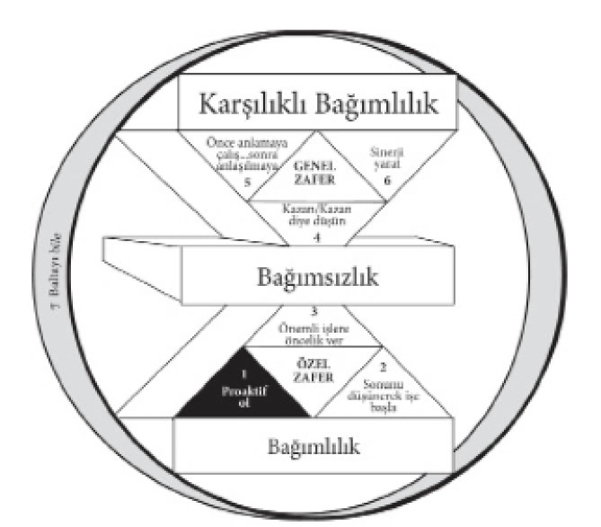
KİŞİSEL VİZYON İLKELERİ
İnsanın yaşam düzeyini bilinçli bir çabayla yükseltme konusundaki tartışma götürmez yeteneğinden daha cesaret verici bir olgu bilmiyorum.
HENRY DAVID THOREAU
Bu kitabı okurken kendinize dışarıdan bakmayı deneyin. Bilincinizi yukarıdan odanın bir köşesine yansıtıp, kendinizi kitabı okurken görmeye çalışın. Kendinize başka biriymişsiniz gibi bakabilir misiniz?
Şimdi başka bir şeyi deneyin. Şu andaki ruhsal durumunuzu düşünün.
Bunu tanımlayabilir misiniz? Ne hissediyorsunuz? Şu andaki zihinsel durumunuzu nasıl tarif edersiniz?
Şimdi bir an zihninizin nasıl çalıştığını düşünün. Hızlı mı, uyarı halinde mi? Bu zihinsel alıştırmayı yapmakla, bundan çıkacak sonucu değerlendirmek arasında bocaladığınızı mı hissediyorsunuz?
Biraz önce yaptığınız, yalnızca insanlara özgü bir şey. Hayvanlarda bu yetenek yok. Buna “özbilinç”, ya da kendi zihinsel sürecini düşünme yeteneği diyoruz. İnsanların dünyadaki her şeye egemen olmalarının, kuşaktan kuşağa önemli gelişmeler göstermelerinin nedeni budur.
İşte bu nedenle sadece kendi deneyimlerimize değil, başkalarınkine de değer verip, onlardan ders alabiliriz. Yine bu nedenle, kendi alışkanlıklarımızı yaratabilir ve onlardan vazgeçebiliriz.
Biz duygularımızdan ibaret değiliz. Ruhsal durumlarımızdan ibaret değiliz. Hatta düşüncelerimizden de ibaret değiliz. Bütün bunları düşünebiliyor olmamız, bizi onlardan ve hayvanlar dünyasından ayırır. Özbilincimiz, dışarıdan bakıp kendimizi nasıl “gördüğümüzü”; yani, etkililiğin en temel paradigması olan kendimizle ilgili paradigmamızı incelememizi sağlar. Özbilincimiz, yalnızca tutum ve davranışlarımızı değil, başkalarını görüş biçimimizi de etkiler.
İnsanlığın temel doğasıyla ilgili haritamız halini alır.
Aslında kendimizi nasıl gördüğümüzü (ve başkalarını nasıl gördüğümüzü) hesaba katmadıkça, diğerlerinin kendilerini ve dünyalarını nasıl gördüklerini, bu konuda neler hissettiklerini anlayamayız.
Farkına varmadan niyetlerimizi onların davranışlarına yükler ve nesnel olduğumuzu iddia ederiz.
Bu, kişisel potansiyelimiz kadar, başkalarıyla ilişki kurma yeteneğimizi de önemli ölçüde kısıtlar. Fakat yalnızca insanlara özgü özbilinç sayesinde, paradigmalarımızı inceleyebilir ve gerçekliğe ya da ilkelere mi dayalı, yoksa bir koşullanmanın ve koşulların işlevi mi olduklarını belirleyebiliriz.
SOSYAL AYNA
Tek görüntümüzü sosyal aynadan –şu anda geçerli olan sosyal paradigmadan ve etrafımızdaki insanların görüşleri, algıları ve paradigmalarından– alıyorsak, kendimizi lunaparktaki o garip aynanın yansıttığı şekilde görürüz.
“Asla tam zamanında gelmiyorsun.”
“Neden hiçbir şeyin düzenli değil?”
“Sen bir sanatçı olmalısın!”
“Domuz gibi yiyorsun!”
“Kazandığına inanamıyorum!”
“Bu çok basit. Neden anlayamıyorsun?”
Bu görüntüler birbirinden kopuk ve orantısızdır. Çoğu zaman yansımadan çok, izdüşümleridir. Bizi olduğumuz gibi yansıtmak yerine, bilgiyi veren kişilerin kaygılarıyla karakter zayıflıklarının izdüşümlerini gösterir.
Geçerli olan sosyal paradigmanın yansıması, büyük ölçüde koşullanma ve koşullar tarafından belirlendiğimizi söyler. Koşullanmanın yaşantımızdaki o müthiş gücünü kabul etsek bile, bunun bizi belirlediğini, bu etki üzerinde hiçbir denetimimizin bulunmadığını söylemek çok farklı bir harita yaratır.
Aslında üç sosyal harita; insan doğasını açıklayan, birbirinden bağımsız olarak ya da bir arada kabul gören üç determinizm kuramı vardır. Genetik (kalıtsal) determinizm, doğanızı temelde atalarınıza borçlu olduğunuzu söyler. Çabuk öfkelenmenizin nedeni budur.
Atalarınız da çabuk öfkelenirdi ve bu sizin DNA’nızda var. Üstelik İrlandalısınız, İrlandalıların doğası böyledir işte.
Psişik (ruhsal) determinizm, aslında her şeye annenizle babanızın neden olduğunu söyler. Yetiştirilme tarzınız, çocukluk deneyimleriniz, temelde karakter yapınızı ve kişisel eğilimlerinizi belirler.
Topluluk karşısına çıkmaktan korkmanızın nedeni budur. Annenizle babanız sizi böyle yetiştirmişlerdir. Bir hata yaptığınız zaman kendinizi alabildiğine suçlu hissedersiniz, çünkü çok savunmasız, zayıf ve bağımlı olduğunuz sırada içinizde yer eden o duygusal senaryoyu “hatırlarsınız”. O duygusal cezayı, reddedilmeyi, beklendiği kadar başarılı olamadığınız zaman başkalarıyla nasıl karşılaştırıldığınızı “hatırlarsınız”.
Çevresel determinizm temelde her şeye patronunuzun, ya da eşinizin, ya da o şımarık yeniyetmenin, ya da ekonomik durumunuzun, ya da milli siyasetin neden olduğunu söyler. Durumunuzdan, çevrenizdeki biri ya da bir şey sorumludur.
Bütün bu haritalar, genelde Pavlov’un köpekler üzerinde yaptığı deneylerle bağlantılı olarak düşündüğümüz etki-tepki kuramına dayanır.
Ana fikir, belirli bir uyarana belirli bir tepki verecek biçimde koşullandırılmış olduğumuzdur.
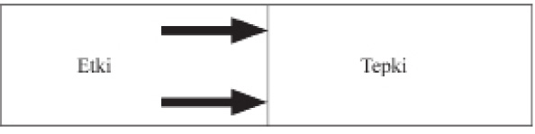
Bu determinist haritalar araziyi ne derece doğru ve işlevsel bir biçimde tarif eder? Bu aynalar insanın gerçek doğasını ne kadar açıkça yansıtır? Bunlar kendi kendini doğrulayan kehanetlere mi dönüşür? Kendi içimizde geçerli kılabileceğimiz ilkelere dayalı mıdır?
ETKİYLE TEPKİ ARASI
Bu soruları yanıtlamak için izninizle Victor Frankl’in etkileyici öyküsünü sizinle paylaşmak istiyorum.
Frankl, Freud psikolojisi geleneklerine göre yetiştirilmiş bir deterministti.
Bu psikoloji, çocukken başınıza gelen her şeyin karakterinizi ve kişiliğinizi biçimlendirdiğini ve temelde bütün yaşamınızı kontrol ettiğini öne sürer. Yaşamınızın sınırları ve parametreleri belirlenmiştir ve bu konuda pek bir şey yapamazsınız.
Frankl ayrıca bir psikiyatr ve Yahudiydi. Nazi Almanyası’nın ölüm kamplarına kapatıldı, başına öyle iğrenç şeyler geldi ki, insan tekrarlarken bile sarsılıyor.
Frankl’in annesi, babası, erkek kardeşi ve karısı kamplarda öldü ya da gaz fırınlarına gönderildiler. Kız kardeşi dışında bütün ailesi yok oldu. Frankl işkenceye ve sayısız aşağılamaya maruz kaldı, bir dakika sonra başına ne geleceğini bilmiyordu. Kendisini de fırına mı yollayacaklardı, yoksa o cesetleri taşıyan ve külleri kürekle atan “kurtulmuşlar”dan biri mi olacaktı?
Bir gün, küçük bir odada çırılçıplak ve tek başına otururken, sonradan “insani özgürlüklerin sonuncusu” diye tanımlayacağı şeyin; kendisini esir eden Nazilerin yok edemeyecekleri o özgürlüğün farkına varmaya başladı. Frankl’in bütün çevresini kontrol edebilirler; bedenine, akıllarına gelen her şeyi yapabilirlerdi. Ama Victor Frankl, özbilinç sahibi, başına gelenleri bir gözlemci gibi seyredebilen birisiydi. Temel kimliği zarar görmemişti. Kendi iç dünyasında bütün bunların onu nasıl etkileyeceğine karar verebilirdi. Başına gelenler ya da etki ile ona gösterdiği tepki arasında, özgürlüğü ya da o tepkiyi seçme gücü vardı.
Frankl, olayları yaşarken kendisini değişik konumlarda hayal ediyordu. Örneğin, ölüm kamplarından kurtulduktan sonra öğrencilerine ders verdiğini düşlüyordu. Kendini sınıfta, öğrencilere o işkence sırasında öğrendiği dersleri anlatırken gözünün önüne getiriyordu.
Daha çok hayal gücünden ve anılarından yararlanan Frankl, bu tür zihinsel, duygusal ve ahlaksal disiplinler aracılığıyla, embriyon halindeki küçücük özgürlüğünü gitgide büyütüp geliştirdi ve sonunda kendisini tutsak eden Nazilerden daha özgür hale geldi. Onlar daha serbestti, çevrelerinde daha fazla seçenek vardı; kendisi ise daha özgürdü, seçeneklerini kullanmak için daha fazla içsel güce sahipti.
Çevresindeki kişilere, hatta bazı nöbetçilere bile ilham kaynağı oldu. Acılarına anlam, tutsaklığa karşı direnme gücü bulabilmeleri için başkalarına yardım etti.
Frankl, akla gelebilecek en alçaltıcı durumlarda, insanlara özgü özbilinç yetisinden yararlanarak insan doğasına ilişkin temel bir ilkeyi keşfetti: Etkiyle tepki arasında, insanın seçme özgürlüğü vardır.
Bu seçme özgürlüğünün içerisinde, bizi benzersiz bir biçimde insan yapan yetiler vardır. Özbilinç dışında, hayal gücüne; şimdiki gerçekliğimizin ötesine geçip zihnimizde bir şeyler yaratma yetisine sahibiz. Vicdana; doğru ve yanlış hakkında, davranışlarımızı yöneten ilkeler konusunda içten gelen derin bir farkındalığa, düşünce ve hareketlerimizin o ilkelerle ne derece uyumlu olduğuna dair bir sezgiye sahibiz. Özgür iradeye; diğer tüm etkilerden bağımsız olarak, özbilincimize dayanarak hareket etme yeteneğine de sahibiz.
En zeki hayvanlarda bile bu yetilerin hiçbiri yoktur. Bilgisayarla ilgili bir benzetme yapmak gerekirse; onlar içgüdü ve/veya eğitimle programlanır. Sorumlu olacak şekilde eğitilebilir, ama o eğitimin sorumluluğunu alamazlar; bir başka deyişle, onu yönlendiremezler.
Programlamayı değiştiremezler. Hatta onun farkında bile değildirler.
Ancak biz, benzersiz insani yetilerimiz sayesinde, içgüdülerimiz ve gördüğümüz eğitimden tamamen ayrı olarak kendimiz için yeni programlar yazabiliriz. İşte bu nedenle, hayvanın yeteneği görece sınırlı, insanınki ise sınırsızdır. Fakat içgüdülerimize, koşullara ve koşullanmamıza, kolektif belleğimize uyarak hayvanlar gibi yaşarsak, biz de sınırlı oluruz.
Determinist paradigmanın kaynağı, öncelikle hayvanlar –fareler, maymunlar, güvercinler ve köpekler– bir de sinirsel ve ruhsal rahatsızlıkları olan insanlar üzerinde yapılan incelemelerdir. Ölçülebilir, tahmin edilebilir gibi göründüğü için bazı araştırmacıların belirli kıstaslarına uysa da, insanlık tarihi ve özbilincimiz bu haritanın araziyi kesinlikle tanımlamadığını söyler!
İnsani yetilerimiz bizi hayvanlar dünyasından çıkarıp yükseltir.
Kullanıp geliştirdiğimiz ölçüde, bu yetiler benzersiz insani potansiyeli gerçekleştirme gücünü verir bize. Etkiyle tepki arasında, en büyük gücümüz olan seçme özgürlüğü vardır.
“PROAKTİVİTE”NİN TANIMI
Frankl, insan doğasının temel ilkesini keşfetme sürecinde kendi haritasını doğru çizdi ve o haritadan yola çıkarak her türlü çevrede etkili olan bir kişinin ilk ve en temel alışkanlığı olan proaktivite alışkanlığını geliştirmeye başladı.
Proaktivite sözcüğüne iş yönetimi literatüründe oldukça sık rastlanır, ama çoğu sözlükte yer almaz. İnisiyatif almaktan çok daha öte bir anlamı vardır. İnsan olarak, kendi yaşamımızdan sorumlu olduğumuz anlamına gelir. Davranışlarımız, koşullarımızın değil, kararlarımızın bir işlevidir. Değerlerimizi duygularımızdan üstün tutabiliriz.
Bazı şeylerin olmasını sağlamak için hem inisiyatifimiz vardır, hem de sorumluluğumuz.
Proaktif insanlar o sorumluluğu kabul ederler. Davranışlarından ötürü olayları, koşulları ya da koşullanmayı suçlamazlar. Davranışları, temelinde duygular olan koşullarının ürünü değil; temelinde değerler olan kendi bilinçli seçimlerinin ürünüdür.
Doğamız gereği hepimiz proaktifiz. Yaşamımız eğer koşullanma ve koşullara bağlıysa, bunun nedeni, bilinçli bir kararla ya da ihmal sonucu, kendi denetimimizi bu etkenlere teslim etmeyi seçmiş olmamızdır.
Bu tür bir seçim yaptığımız zaman reaktif (tepkisel) oluruz. Reaktif insanlar sıklıkla fiziksel çevrelerinin etkisi altında kalırlar. Hava iyiyse onlar da kendilerini iyi hissederler. Hava iyi değilse, bu durum tutumlarını ve çalışmalarını etkiler. Proaktif insanlar ise kendi hava koşullarını yanlarında taşıyabilirler. İster güneş açsın, ister yağmur yağsın, onlar için fark etmez. Değerlere göre hareket ederler ve değerleri kaliteli bir iş çıkarmaksa, bunun havanın uygun olup olmamasıyla bir ilgisi yoktur.
Reaktif insanlar sosyal çevrelerinden, “sosyal hava”dan da etkilenirler.
İnsanlar iyi davrandıkları zaman kendilerini iyi hissederler; davranmadıklarında ise kendilerini savunmaya veya korumaya kalkışırlar.
Reaktif insanlar duygusal yaşamlarının merkezi olarak başkalarının davranışlarını seçer, diğer insanları denetlemek için onların zayıf yanlarını pekiştirirler.
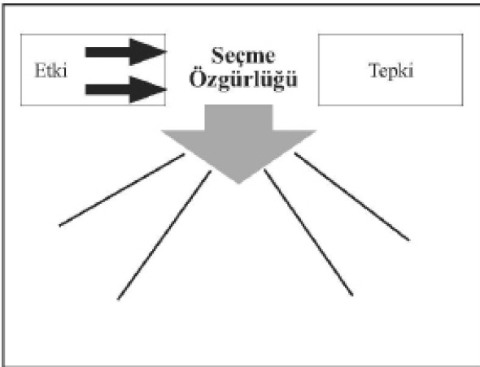
PROAKTİF MODEL
Tepki Seçme Özgürlüğü Etki
Bir değeri bir uyaranın önüne geçirme yeteneği, proaktif insanın özünü oluşturur. Reaktif insanları duygular, koşullar, olaylar ve çevreleri yönetir. Proaktif insanları ise dikkatlice düşünülmüş, seçilmiş ve içselleştirilmiş olan değerler yönetir.
Proaktif insanlar da fiziksel, toplumsal ya da psikolojik dış uyaranlardan etkilenirler. Ancak onların uyaranlara bilinçli ya da bilinçsiz bir biçimde verdikleri tepki, değere dayalı bir seçim ya da tepkidir.
Eleanor Roosevelt’in dediği gibi, “İzniniz olmadıkça kimse size zarar veremez.” Ya da Gandi’nin dediği gibi, “Biz kendi elimizle teslim etmedikçe, onlar özsaygımızı alamaz.” Bizi başımıza gelenlerden daha fazla inciten şey, bunların olmasına isteyerek izin vermemiz, razı olmamızdır.
Duygusal açıdan bunu kabul etmenin çok zor olduğunu biliyorum; özellikle de yıllar yılı mutsuzluğumuzu koşullara ya da başkalarının davranışlarına bağlamışsak. Ancak bir insan, içtenlikle ve dürüst bir biçimde, “Bugün böyle olmamın nedeni dün yaptığım seçimlerdir,” demedikçe, “Başka yol seçiyorum,” da diyemez.
Sacramento’da bir gün proaktivite konusunda bir konuşma yaparken, dinleyiciler arasından bir kadın, konferansımın tam ortasında ayağa kalkıp heyecanla konuşmaya başladı. Salon kalabalıktı.
Birçok kişi dönüp kendisine bakınca, kadın birdenbire yaptığı işi fark ederek utandı ve yerine oturdu. Ancak kendini tutmakta zorlanıyor olmalıydı ki, bu kez de etrafındakilerle konuşmaya başladı.
Pek mutlu görünüyordu.
Ne olduğunu öğrenebilmek için konferansa ara verilmesini sabırsızlıkla bekledim. Sonra da hemen kadının yanına giderek deneyimini paylaşmak isteyip istemeyeceğini sordum.
Kadın, “Başıma gelenleri tahmin bile edemezsiniz!” diye bağırdı.
“Dünyanın en kötü, en nankör adamına gün boyu hemşirelik yapıyorum. Yaptığım hiçbir şeyi yeterli bulmuyor. Bir tek övgü çıkmıyor ağzından; zaten çoğu zaman ben yokmuşum gibi davranıyor.
Durmadan dırdır ediyor ve her şeye bir kusur buluyor. Bu adam yüzünden hayat çekilmez oldu. Ben de çoğu zaman hıncımı ailemden çıkarıyorum. Diğer hemşireler de benimle aynı durumdalar. Neredeyse adamın ölmesi için dua edeceğiz.
“Ve sonra siz oraya çıkıp hiçbir şeyin, hiç kimsenin iznim olmadan beni üzemeyeceğini, duygusal yaşamda mutsuzluğu seçmiş olduğumu söylediğiniz. Bunu asla kabul edemezdim.
“Ama bu konuyu düşünüp durdum. Kendi içime dönerek, ‘Tepkimi seçme gücüne sahip miyim?’ diye sormaya başladım.
“Sonunda bu güce gerçekten sahip olduğumu anlayınca, bu acı ilacı içip kendi seçimimle mutsuz olduğumu kavrayınca, mutsuz olmamayı seçebileceğimi de anladım.
“İşte o anda ayağa fırladım! San Quentin Hapishanesi’nden salıveriliyordum sanki. Bütün dünyaya, ‘Özgürüm, hapishaneden çıktım!
Bundan sonra hiç kimse davranışlarımı kontrol edemeyecek!’ diye bağırmak istedim.”
Bize zarar veren, başımıza gelenler değil, onlara gösterdiğimiz tepkidir. Kuşkusuz, bazı şeyler bize fiziksel ya da ekonomik açıdan zarar verip kederlenmemize yol açar. Ancak karakterimizin, temel kimliğimizin zarar görmesine hiç gerek yoktur. Aslında en çetin deneyimlerimiz, karakterimizi biçimlendiren ve iç gücümüzü, gelecekte zor koşullarla başa çıkma ve başkalarına da bunu yapmaları için ilham verme özgürlüğümüzü geliştiren potalara dönüşür.
Frankl, başkalarının moralini yükseltmek ve onlara ilham vermek için kişisel özgürlüğünü zor koşullar altında geliştirebilmiş olan pek çok kişiden biridir. Vietnam savaş esirlerinin otobiyografileri, bu tür bir kişisel özgürlüğün değiştirme gücünü ortaya koyar.
Bu özgürlüğün sorumluca kullanılmasının hem o dönemde hem de günümüzde hapishane kültürü ve tutsaklar üzerindeki etkisine dair ikna edici ek bir kanıt oluşturur.
Hepimiz, çok zor koşullarla karşılaşan, belki ölümcül bir hastalığı ya da ciddi bir sakatlığı olan, ama manevi gücünü olağanüstü bir biçimde koruyabilen kişiler tanımışızdır. Onların kişisel bütünlüğü bizim için ne kadar büyük bir ilham kaynağıdır! Bir insanı, başka birinin kendi acısını ve koşullarını aştığını, ilham veren ve yaşamı soylulaştırıp yücelten bir değeri içinde barındırıp dışavurduğunu fark etmekten daha fazla, daha kalıcı bir biçimde etkileyecek bir şey olamaz.
Sandra’yla birlikte yaşadığımız en esinleyici dönemlerden biri, ölümcül bir kanser hastalığına yakalanan Carol adlı çok sevdiğimiz bir dostumuzla birlikte geçirdiğimiz dört yıldı. Düğünümüzde Sandra’nın nedimelerinden biri olan Carol, 25 yıldır onun en iyi arkadaşıydı.
Carol hastalığının en son aşamasındayken, Sandra onun başucunda oturdu ve arkadaşının yaşam öyküsünü kaleme almasına yardım etti. Eşim o uzun ve çetin saatlerden sonra, çocuklarının yaşamlarının değişik dönemlerinde kendilerine verilmek üzere özel mesajlar bırakmak isteyen dostunun cesaretinden büyülenmiş bir halde dönerdi eve.
Carol, olabildiğince az ağrı kesici ilaç alırdı, bu nedenle zihinsel ve duygusal gücü kesinlikle yerindeydi. Sonra bir kayıt cihazına ya da Sandra’ya düşündüklerini fısıldar, eşim de not alırdı. Carol o kadar proaktif, o kadar cesur ve başkalarıyla o kadar ilgiliydi ki, etrafındaki kişiler için müthiş bir ilham kaynağı oldu.
Ölmeden bir gün önce gözlerinin derinliklerine bakarken hissettiklerimi hiç unutmayacağım. Çektiği o derin acılar arasında, içindeki müthiş değeri dışavuran bir kişi gördüm. Gözlerinde yalnızca sevgi, ilgi ve takdir değil, aynı zamanda nitelikli hizmet ve katkı dolu bir yaşam okudum.
Yıllardır topluluklara, içlerinden kaçının hayatı boyunca benzersiz hizmetlerde bulunmuş, sevgi ve şefkat dağıtmış, harika bir biçimde davranmış, ancak ölmek üzere olan birinin yanında bulunduğunu sorarım. Genellikle dinleyicilerin dörtte biri olumlu cevap verir. O zaman kaçının bu kişiyi yaşamının sonuna kadar unutmayacağını öğrenmek isterim. Kaçı, en azından geçici olarak, bu tür bir cesaret örneği yüzünden değişmiş, derinden etkilenmiş, daha soylu hizmet ve şefkat edimlerine girişme arzunu duymuştur? Neredeyse kaçınılmaz olarak, yine aynı insanlar cevap verir.
Victor Frankl, hayatta üç merkezi değer olduğunu ileri sürer: Deneyimsel olan, ya da başımıza gelenler; yaratıcı olan, ya da bizim var ettiklerimiz; tutumsal olan, ya da ölümcül bir hastalık gibi zor koşullarda gösterdiğimiz tepkiler.
İnsanlarla kendi deneyimlerim, Frankl’in işaret ettiği noktayı doğruluyor: Paradigma ya da yeniden düzenleme açısından bu üç değerin en üstünü, tutumsal olanıdır. Başka bir deyişle, en önemlisi, yaşadığımız şeylere nasıl tepki verdiğimizdir.
Zor durumlar çoğu zaman paradigma değişimlerine yol açar; insanların dünyayı, bu dünya içinde kendilerini ve başkalarını, yaşamın kendilerinden ne istediğini yepyeni bir bakış açısıyla görmelerine neden olur. Bu geniş bakış açısı, hepimizi yücelten ve ilham kaynağı oluşturan tutumsal değerleri yansıtır.
İNİSİYATİF ALMAK
Doğamızın temelinde yatan, edilgin değil, etkin olmaktır. Bu, hem belirli koşullarda göstereceğimiz tepkiyi seçmemizi sağlar, hem de bize koşulları yaratma gücünü verir.
İnisiyatif almak; zorlayıcı, itici, ya da saldırgan olmak anlamına gelmez. Olayların gelişimindeki sorumluluğumuzu kabullenmek demektir.
Yıllar boyunca, daha iyi bir işe girmek isteyenlere, daha fazla inisiyatif göstermelerini salık verdim. Yetenek ve ilgi sınavlarına girmelerini; sektörü, hatta ilgi duydukları kuruluşların belirli sorunlarını incelemelerini; sonra da yeteneklerinin şirket sorunlarının çözümüne nasıl yardımcı olacağını gösteren etkili raporlar hazırlamalarını önerdim. “Çözüm satmak” diye tanımlanan bu yöntem, başarı açısından anahtar niteliğinde bir paradigmadır.
Buna verilen karşılık genellikle olumludur; çoğu kişi bu tür bir yaklaşımın işe girme ya da yükselmeyle ilgili fırsatları nasıl etkileyeceğini kavrar. Ama birçoğu, bunu gerçekleştirmek için gerekli adımları atmayı, inisiyatif almayı başaramaz.
“Yetenek ve ilgi sınavlarına girmek için nereye başvurmam gerektiğini bilmiyorum ki!”
“İş kolunu ve şirket sorunlarını nasıl inceleyebilirim? Kimse bana yardım etmek istemiyor.”
“Etkili bir raporun nasıl yazılacağı konusunda hiçbir fikrim yok.”
Pek çok kişi bir şeyler olmasını ya da birisinin kendileriyle ilgilenmesini bekler. Ama sonuçta iyi işlere girenler, sorun yaratan değil, sorunlara çözüm getiren, gerekeni yapmak için inisiyatif alan, işini yaparken doğru ilkelere uyan kişilerdir.
Ailemizden biri sorumsuzca bir tavır takınıp başkalarının bir şeyler yapmalarını ya da bir çözüm yolu bulmalarını beklediği zaman, en küçük çocuklardan biri de olsa, ona “B ve İ’ni kullan” deriz
(beceri ve inisiyatif). Aslında, biz daha ağzımızı bile açmadan, kendi şikâyetini kendisi yanıtlar. “Biliyorum. B ve İ’mi kullanmalıyım.”
İnsanları sorumluluğa yöneltmek aşağılayıcı değil, onaylayıcı bir davranıştır. Proaktivite insan doğasının bir parçasıdır. Proaktif kaslar gevşemiş durumda olabilir, ama yine de var oldukları bellidir.
Başkalarının proaktif doğalarına saygı gösterirsek, en azından sosyal aynada çarpıtılmamış, saydam bir yansımalarını görmelerini sağlarız.
Tabii, bireyin olgunluk düzeyi de hesaba katılmalıdır. Duygusal bakımdan alabildiğine bağımlı kişilerden yüksek derecede yaratıcı bir işbirliği bekleyemeyiz. Ama en azından temel doğalarını kabullenip, insanların kendilerine gitgide daha fazla güven duyarak sorunları çözme fırsatını yakalayabilecekleri bir atmosfer yaratabiliriz.
ETKİN YA DA EDİLGİN OLMAK
İnisiyatifini kullanabilen kişilerle kullanamayanlar arasındaki fark, gerçekten de geceyle gündüz arasındaki fark gibidir. Burada, etkililik konusunda yüzde 25 ile 50 oranında bir farktan söz etmiyorum.
Özellikle bu insanlar zeki, bilinçli ve başkalarına karşı duyarlı iseler, yüzde 5000’i aşan bir farktan söz ediyorum.
Yaşamınızdaki etkililiğinizin Ü/ÜY Dengesini yaratmak inisiyatif ister. Yedi Alışkanlığı geliştirmek için de inisiyatif gerekir.
Diğer altı alışkanlığı incelerken, her birinin proaktif kaslarınızın gelişmesine bağlı olduğunu göreceksiniz. Her biri size etkin olma sorumluluğunu yükler. Birilerinin üzerinizde etkin olmasını beklerseniz, edilgin olursunuz. Bu, gelişme ve fırsatlarla ilgili sonuçlarda da geçerlidir.
Bir zamanlar ev bakım ve onarım sektöründen bir grup insanla birlikte çalışmıştım. Yirmi değişik kuruluşun temsilcileri olan bu insanlar, yılda dört kez buluşuyor ve sorunlarını açık açık birbirleriyle paylaşıyorlardı.
O dönem, ekonomide ağır bir durgunluk yaşanıyordu ve bu sektör, genel ekonomiden çok daha kötü etkilenmişti. Çalışmaya başladığımız sırada, bu insanlar cesaretlerini iyiden iyiye kaybetmişti.
İlk gün şu soruyu tartıştık: “Bize ne oluyor? Hangi etkiyle yüz yüzeyiz?” Pek çok şey oluyordu. Çevreden gelen baskılar çok güçlüydü.
İşsizlik alabildiğine yaygındı. Bu insanların çoğu, şirketlerini ayakta tutabilmek için dostlarını işten çıkarıyordu. Günün sonunda herkesin cesareti büsbütün kırılmıştı.
İkinci gün şu soruyu sorduk: “Gelecekte ne olacak?” Temelinde geleceklerini o olayların yaratacağına dair reaktif bir varsayım bulunan çevresel eğilimleri inceledik. İkinci günün sonunda sıkıntımız birkaç kat artmıştı. İşler düzelmeden önce, daha da kötüye gidecekti.
Hepsi de bunu biliyordu.
Üçüncü gün, şu proaktif soru üzerinde yoğunlaşmaya karar verdik.
“Bizim yanıtımız ne? Biz ne yapacağız? Biz bu durumda inisiyatifi nasıl ele alabiliriz?” Sabah, yönetimden ve maliyetleri azaltmaktan söz ettik. Öğleden sonra ise piyasa payını artırmayı tartıştık.
Her iki alanı da bir “beyin fırtınası”yla derinlemesine taradık. Ardından çok pratik, yapılması kolay olan birkaç şey üzerinde durduk.
Toplantılar yeni bir heyecan, umut ve proaktif farkındalık havasıyla sona erdi.
Üçüncü günün sonunda, sonuçları “İş ne düzeyde?” sorusuna verdiğimiz üç bölümlük bir yanıtla özetledik.
Birinci bölüm: Başımıza gelenler hoş şeyler değil ve göstergelere göre, durum düzelmeden önce, daha da kötüye gidecek.
İkinci bölüm: Fakat iyi şeyler yapıyoruz. İşi iyi yönetiyor, masrafları kısıyor ve pazar payımızı artıyoruz.
Üçüncü bölüm: O halde iş, her zamankinden daha iyi.
Şimdi reaktif bir zihin bu durumda ne der? “Ah, yapmayın! Gerçeklerle yüzleşin. Olumlu düşünmeyi ve kendinize moral aşılamayı bir noktaya kadar sürdürebilirsiniz. Er ya da geç gerçeği kabul etmek zorundasınız.”
Ama olumlu düşünmekle proaktivite arasındaki fark da budur.
Gerçeklerle yüzleştik. O anki durumun ve gelecekteki izdüşümlerinin gerçekliğiyle yüzleştik. Ayrıca bu durumlara ve izdüşümlerine olumlu tepki verme seçeneğimiz olduğu gerçeğiyle de yüzleştik.
Gerçeklikle yüzleşmemek, yolumuzu çevremizde olup bitenlerin belirleyeceği düşüncesini kabullenmek olurdu.
İşletmeler, cemaatler, aileler de dahil, her türlü kurum proaktif olabilir. Proaktif bireylerin yaratıcılığını ve becerilerini bir araya getirerek kurum içerisinde proaktif bir kültür yaratabilirler. Kurumun çevreye boyun eğmesi gerekmez; ilgili kişilerin ortak değer ve amaçlarını değerlendirmek için inisiyatifi ele alabilir.
DİLİMİZİ DİNLEMEK
Tutum ve davranışlarımız paradigmalarımızdan kaynaklandığına göre, onları incelemek için özbilincimizden yararlanırsak, içlerinde temel haritalarımızın doğasını görebiliriz. Örneğin, kullandığımız dil, kendimizi ne ölçüde proaktif bir insan olarak gördüğümüzün çok gerçek bir göstergesidir.
Reaktif insanların dili, onları sorumluluktan tümüyle kurtarır.
“Ben buyum. Böyle yaratılmışım.” Yolum belirlenmiş. Bu konuda yapabileceğim hiçbir şey yok.
“Beni öyle kızdırıyor ki!” Ben sorumlu değilim. Duygusal yaşamımı kontrol edemediğim bir şey yönetiyor.
“Bunu yapamam. Hiç zamanım yok.” Kendi dışımda bir şeyin
–zaman darlığının– kontrolündeyim.
“Keşke eşim daha sabırlı olsaydı.” Bir başkasının davranışları etkililiğimi kısıtlıyor.
“Bunu yapmak zorundayım.” Koşullar ya da diğer insanlar beni bunu yapmaya zorluyor. Kendi eylemlerimi seçme özgürlüğüm yok.
Reaktif Dil Proaktif Dil
Yapabileceğim hiçbirşey yok Seçeneklerimize bir bakalım
İşte ben böyleyim Farklı bir yaklaşım seçebilirim.
Beni öyle kızdırıyor ki. Duygularımı kontrol edebilirim.
Buna izin vermezler. Etkili bir sunum hazırlayabilirim.
Bunu yapmak zorundayım. Uygun bir yanıt seçeceğim.
Yapamam. Seçerim.
Yapmalıyım. Yeğliyorum.
Keşke. Yapacağım.
Bu dil, determinizmin temel paradigmasından doğar. Özü ise, sorumluluğun devredilmesinden ibarettir. Sorumlu değilim, yanıtımı seçemem.
Bir gün öğrencilerimden biri, “Derse girmeyebilir miyim? Tenis turnuvasına katılmak için gitmek zorundayım,” dedi bana.
“Gitmek zorunda mısın, yoksa gitmeyi mi seçiyorsun? diye sordum.
“Gerçekten gitmek zorundayım!” diye haykırdı.
“Gitmezsen ne olur?”
“Beni takımdan atarlar tabii!”
“Bu sonuç hoşuna gider mi?”
“Hiç gitmez!” seçiyorsun, çünkü bunun yol açacağı sonucu, yani takımda kalmayı istiyorsun. Dersimi kaçırırsan ne olur?”
“Bilmiyorum.”
“İyice düşün. Derse gelmemenin doğal sonucu sence ne olabilir?”
“Beni sınıftan atmazsınız, değil mi?”
“Bu sosyal bir sonuç olur. Yapay olur. Tenis takımına katılmazsan, oynayamazsın. Bu doğal. Ama derse gelmezsen, doğal sonucu ne olur?”
“Bazı şeyleri öğrenemem sanırım.”
“Doğru! Onun için bu sonuçla diğer sonucu karşılaştırıp bir seçim yapmalısın. Ben senin yerinde olsaydım, tenis turnuvasına katılırdım.
Ama hiçbir zaman bir şeyi yapmak zorunda olduğunu söylememelisin.” seçiyorum,” dedi.
“Ve dersimi kaçıracaksın, öyle mi?” diye sordum, kulaklarıma inanamıyormuş gibi yaparak.
Reaktif dille ilgili ciddi bir sorun, kendi kendini doğrulayan bir kehanete dönüşmesidir. İnsanlar yollarının belirlenmiş olduğu paradigmasına bağlanır ve bu inançlarını destekleyecek kanıtları üretirler.
Gitgide kendilerini yenilmiş ve denetimden çıkmış, yaşamlarını ya da kaderlerini yönlendirmekten aciz biri gibi hissederler. Durumlarından dolayı dış güçleri –koşulları, başkalarını, hatta yıldızları– suçlarlar.
Proaktivite kavramından söz ettiğim bir seminerde adamın biri yanıma yaklaştı. “Söyledikleriniz hoşuma gitti, Stephen,” dedi.
“Ama durumlar birbirinden çok farklı. Evliliğime bir baksanıza.
Gerçekten kaygılıyım. Eşimle birbirimize karşı o eski duygularımız hiç kalmadı. Galiba artık onu sevmiyorum. Eşim de beni sevmiyor.
Ne yapabilirim?”
“O duygu öldü mü artık?” diye sordum.
“Evet, öyle,” diye onayladı. “Bizi gerçekten kaygılandıran üç çocuğumuz da var. Ne önerirsiniz?”
“Sevin onu,” diye yanıtladım.
“Söyledim ya, o duygu öldü artık.”
“Sevin onu.”
“Anlamıyorsunuz. Sevgi duygusu kalmadı artık.”
“O halde sevin onu. Madem ki o duygu öldü, karınızı sevmeniz için iyi bir neden bu.”
“Ama insan sevmediği birini nasıl sever?”
“Dostum; sevmek bir fiil, bir eylemdir. Sevgi –yani duygu– sevme eyleminin bir ürünüdür. Onun için karınızı sevin. Ona hizmet edin. Özveride bulunun. Ona kulak verin. Anlayış gösterin. Onu takdir edin. Onaylayın. Bunu yapmaya razı mısınız?”
Bütün ilerici toplumların büyük yazınsal yapıtlarında, sevmek bir eylemdir. Reaktif insanlar bunu bir duyguya dönüştürür. Onları duyguları yönetir. Hollywood, genel anlamda sorumlu olmadığımıza, duygularımızın bir ürünü olduğumuza bizi inandıran senaryolar üretti. Ancak Hollywood senaryosu gerçeği betimlemez. Duygularımız eylemlerimizi denetliyorsa, bunun nedeni sorumluluklarımızdan vazgeçmemiz ve duygularımıza bu yetkiyi vermemizdir.
Proaktif insanlar sevgiyi bir eyleme dönüştürürler. Sevgi, yaptığınız bir şeydir: özverileriniz, kendinizden ödün vermenizdir, tıpkı bir annenin bebeğini dünyaya getirmesi gibi. Sevgiyi araştırmak istiyorsanız, kendilerini başkaları için, hatta kırıcı olan ya da sevgilerine karşılık vermeyen insanlar için feda eden kişileri inceleyin.
Uğruna özveride bulunduğunuz çocuğunuza duyduğunuz sevgiye bir bakın. Sevgi, sevme eylemleriyle harekete geçirilen bir değerdir.
Proaktif insanlar değerleri duyguların önüne geçirirler. Sevgi, yani duygu, yeniden yakalanabilir.
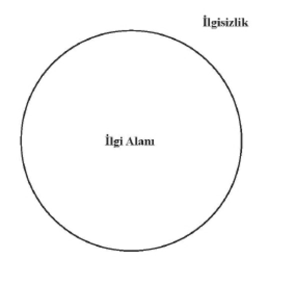
İLGİ ALANI /ETKİ ALANI
Kendi proaktivite derecemizi daha iyi anlamanın bir başka mükemmel yolu da, zamanımızı ve enerjimizi nereye odakladığımıza bakmaktır. Hepimiz bir dizi şeyle ilgileniriz: Sağlığımız, çocuklarımız, iş yerindeki sorunlarımız, ulusal borç, nükleer savaş. Bunları, zihinsel ya da duygusal açıdan bizim için önem taşımayan şeylerden, bir “İlgi Alanı” yaratarak ayırabiliriz.
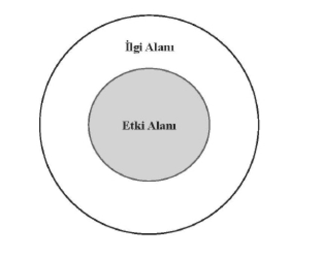
İlgi Alanımızın içinde yer alan şeylere bakarken, bazılarının gerçekten kontrolümüz dışında olduğu, diğerleri içinse bir şeyler yapabileceğimiz açıklık kazanır. Bu ikincileri daha küçük bir Etki Alanı içine alarak saptayabiliriz.
Bu iki alandan hangisinin enerji ve zamanımızın büyük bir kısmının odak noktası olduğunu belirleyerek, proaktivite derecemiz konusunda çok şey keşfedebiliriz.
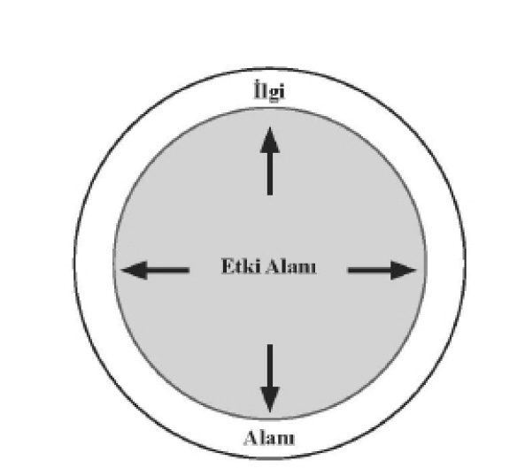
PROAKTİF ODAK
(Pozitif enerji
Etki Alanını genişletir)
Proaktif insanlar, çabalarına odak noktası olarak Etki Alanı’nı seçerler. Bir şeyler yapabilecekleri işlerin üzerinde çalışırlar. Enerjilerinin doğası pozitif, genişletici ve büyütücü olduğundan, Etki Alanları’nın da büyümesine yol açar.
Diğer yandan reaktif insanlar, çabalarına odak noktası olarak İlgi Alanı’nı seçerler. Başkalarının zayıflıklarına, çevredeki sorunlara ve denetleyemedikleri koşullara odaklanırlar. Odaklandıkları nokta suçlayıcı davranışlara, reaktif bir dile ve gitgide artan bir mağduriyet duygusuna neden olur. O odaktan yayılan negatif enerji, bir şeyler yapabilecekleri alanların ihmaliyle birleştiğinde, Etki Alanları küçülür.

REAKTİF ODAK
(Negatif enerji Etki Alanını daraltır)
İlgi Alanımızın içinde çalıştığımız sürece, oradaki şeylerin bizi denetlemesine izin veririz. Pozitif değişikliği yapmak için gerekli olan proaktif inisiyatifi ele almayız.
Okulda ciddi sorunları olan oğlumun öyküsünü sizinle paylaşmıştım.
Sandra’yla birlikte, oğlumuzun belirgin zayıflıkları ve başkalarının ona karşı davranışlarıyla derinden ilgileniyorduk.
Ama bütün bunlar İlgi Alanımızın içerisindeydi. Çabalarımızı bunlara odakladığımız sürece, hiçbir yere varamadık. Yalnızca yetersizlik ve çaresizlik duygularımız arttı, o kadar. Oğlumuzun bağımlılığını da pekiştirmiş olduk.
Ancak, Etki Alanımızın içinde çalışıp kendi paradigmalarımıza odaklandığımız zaman, bizi değiştiren ve de sonuçta oğlumuzu etkileyen pozitif bir enerji yaratmaya başladık. Koşullar yüzünden kaygıya kapılmak yerine, kendi üzerimizde çalışarak o koşulları etkileyebildik.
Konumu, serveti, işi ya da ilişkileri nedeniyle, bazı durumlarda kişinin Etki Alanı, İlgi Alanından geniş olabilir.
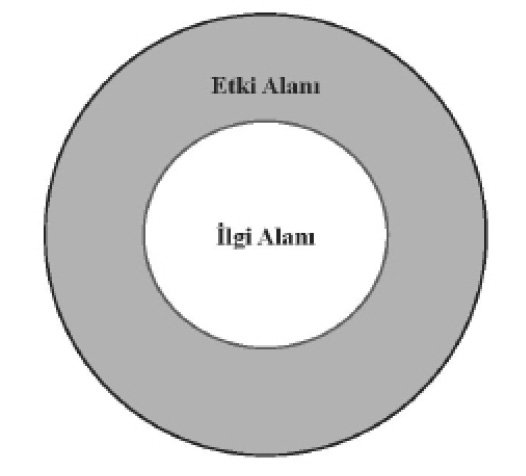
Bu durum, insanın kendi kendine yarattığı duygusal bir miyopluğu; İlgi Alanının içine odaklanmış bir başka bencil, reaktif yaşam tarzını yansıtır.
Proaktif insanlar güçlerini kullanmaya öncelik tanımak zorunda kalsalar bile, bunu etkili bir biçimde kullanma sorumluluğunu kabul ettikleri için, onların en az Etki Alanları kadar büyük bir İlgi Alanları vardır.
DOLAYSIZ, DOLAYLI DENETİM VE DENETİM DIŞI
Karşılaştığımız sorunlar şu üç gruptan birine girer: Dolaysız denetim (kendi davranışlarımızla ilgili sorunlar), dolaylı denetim (başkalarının davranışlarıyla ilgili sorunlar) ya da denetim dışı (hiçbir şey yapamayacağımız sorunlar, örneğin geçmişimiz ya da durumsal gerçeklikler). Proaktif yaklaşım, mevcut Etki Alanımızın içindeki üç tür sorunun çözümünde de ilk adımı atar.
Dolaysız denetim sorunları, alışkanlıklarımızın üzerinde çalışarak çözülür. Onların Etki Alanımız içinde oldukları bellidir. Bunlar 1., 2. ve 3. Alışkanlıkların “Özel Zaferleri”dir.
Dolaylı denetim sorunları, etkileme yöntemlerimizin değiştirilmesiyle çözülür. Bunlar 4., 5. ve 6. Alışkanlıklara bağlı “Genel Zaferler” dir. Ben şahsen, etkilemenin 30 ayrı yöntemini tespit ettim.
Bunlar anlayış ve tartışma, ya da örnek göstermek ve ikna etmek kadar birbirinden farklıdır. Çoğu insanın dağarcığında bu yöntemlerin ancak üçü ya da dördü bulunur. Genellikle mantıklı konuşmayla başlar, işe yaramıyorsa, işi kaçmaya ya da kavgaya kadar vardırırlar.
Birini “yola getirme”nin eski ve etkisiz yöntemlerini kullanıp durmaktansa, etkilemenin yeni yöntemlerini öğrenebilirim düşüncesini kabullenmek nasıl da rahatlatıcıdır!
Denetim dışı sorunlar, yüzümüzdeki ifadeyi değiştirme sorumluluğunu üstlenmeyi; yani gülümsemeyi, hoşlanmasak bile sorunları içtenlikle ve gönül rahatlığıyla kabullenip onlarla birlikte nasıl yaşanacağını öğrenmeyi gerektirir. Böylece, bu sorunların bizi denetlemesine izin vermemiş oluruz. Adsız Alkolikler’in (Alcoholics Anonymous) duasının içeriğine biz de katılıyoruz: “Tanrım, bana değişebilecek ve değiştirilmesi gereken şeyleri değiştirmek için cesaret, değiştirilemeyecek şeyleri kabullenmek için huzur, aradaki farkı anlamak için de bilgelik ver.”
Bir sorun ister dolaysız olsun, ister dolaylı ya da denetim dışı, çözüme giden ilk adımı biliyoruz. Alışkanlıklarımızı, etkileme yöntemlerimizi, denetim dışı sorunlara bakış açımızı değiştirmek, tümüyle Etki Alanımızın içindedir.
ETKİ ALANINI GENİŞLETMEK
Bir duruma vereceğimiz tepkiyi seçerken kendi durumumuzu güçlü bir biçimde etkilediğimizi anlamak, ilham kaynağıdır. Kimyasal formülün bir bölümünü değiştirdiğimiz zaman, sonuçların doğasını da değiştirmiş oluruz.
Başında son derece dinamik bir kişinin bulunduğu bir kuruluşla birkaç yıl birlikte çalıştım. Bu kişi trendleri okuyabiliyordu. Yaratıcı, yetenekli, verimli ve çok zekiydi; herkes de bunu biliyordu.
Ancak çok diktatörce bir yönetim tarzı vardı. İnsanlara, karar verme yetenekleri olmayan “emirerleri” gibi davranıyordu. Kurumda çalışanlarla hep şöyle konuşuyordu: “Şuraya git... Buraya git... Şimdi şunu yap... Şimdi bunu yap – Kararları ben veririm!”
Bu nedenle çevresindeki yönetici takımının neredeyse tamamını kendisinden soğutmuştu. Bu insanlar koridorlarda dolaşıp kendi aralarında onu çekiştiriyorlardı. Konuşmaları son derece ayrıntılı ve açık seçikti; duruma çare bulmaya çalışıyorlardı sanki. Ama bu konuşmaların sonu gelmiyordu, başkanın zayıflıkları adına kendilerini sorumluluktan soyutluyorlardı.
Birisi, “Bu kez olanlar, akla hayale gelmeyecek türden,” diyordu.
“Geçen gün benim bölümüme geldi. Her şeyi hazırlamıştım.
Ama içeri girdi ve bambaşka şeyler istedi. Aylardır yaptığım bütün iş bir anda değerini yitiriverdi. Onun yanında çalışmayı nasıl sürdürebileceğimi bilmiyorum. Emekli olmasına ne kadar var?”
Başka biri, “Henüz elli dokuz yaşında,” diye cevap veriyordu.
“Altı yıl daha dayanabilecek misin?”
“Bilmiyorum. Zaten o, emekliye ayıracakları bir tip değil.”
Ama yöneticilerden biri proaktifti. Onu duygular değil, değerleri yönetiyordu. Bu kişi inisiyatifi ele aldı; olacakları anladı, empati gösterdi, durumu okudu. Başkanın zayıflıklarını görmüyor değildi, ama bunları eleştirmek yerine dengeliyordu. Onun zayıf kaldığı noktalarda, kendi adamlarına tampon olup bu tür zayıflıkları örtbas ediyordu. Başkanın ileri görüşlülüğü, yeteneği ve yaratıcılığı gibi güçlü yanlarından da yararlanmaya çalışıyordu.
Bu adam dikkatini kendi Etki Alanına vermişti. Başkan ona da emireri gibi davranıyordu. Ama o, beklenenden fazlasını yapıyordu.
Başkanın ihtiyacını önceden seziyordu. Davranışının altında yatan kaygıları empatiyle okuyor, bu nedenle bilgi verirken yaptığı analizi de sunuyor ve bu analize dayanarak tavsiyelerde bulunuyordu.
Bir gün danışmanı olarak başkanla birlikte oturduğum sırada, “Stephen,” dedi bana, “bu adamın yaptıklarına inanamıyorum. Bana istediğim bilgiyi vermekle yetinmeyip eklemeler de yaptı. Bu ek bilgiye gerçekten ihtiyacımız vardı. Hatta en derinden ilgilendiğim konular bağlamında onları analiz etti. Önerilerini ise bir liste halinde sundu.
“Önerileri analize uyuyor. Analiz de verilere. Olağanüstü biri!
İşin bu bölümü için kaygılanmaktan kurtuldum. Ne kadar rahatladım bilemezsin!”
Bir sonraki toplantıda başkan yine diğer yöneticilere, “Şunu yap... Bunu yap...” diye emretti. Ama biri dışında. O adama, “Sen bu konuda ne düşünüyorsun?” diye sordu. Bu yöneticinin Etki Alanı genişlemişti.
Tabii ki bu, kuruluş içinde bir hayli çalkantıya neden oldu. Yönetim bölümündeki koridorlarda reaktif zihinler bu proaktif adama haset kurşunlarını sıkmaya başladılar.
Sorumluluğu kabul etmemek, reaktif insanların özelliğidir. “Ben sorumlu değilim” demek daha güvenlidir. “Ben sorumluyum” dersem, “Ben sorumsuzum” demek zorunda da kalabilirim. Tepkimi seçme gücüm olduğunu söylemek benim için zor olur. Seçtiğim tepkinin çevredeki insanları olumsuz, hileli davranışlara yönelttiğini itiraf etmek de öyle; özellikle yıllar boyunca birinin zayıflıklarını bahane ederek sonuçların sorumluluğunu üstümden atıp durmuşsam.
Dolayısıyla bu yöneticiler bütün güçlerini, neden sorumlu olmadıklarını göstermek için daha fazla bilgi, daha fazla donanım ve daha fazla kanıt bulmaya harcıyorlardı.
Ancak sözünü ettiğimiz yönetici onlara karşı da proaktifti. Yavaş yavaş Etki Alanı onlara doğru da genişledi. Büyümeyi sürdürdü ve sonunda kuruluş içinde, başkan dahil hiç kimse bu adamın katkısı ve onayı olmadan önemli bir adım atmamaya başladı. Ama başkan kendini tehlikede hissetmiyordu, çünkü bu adamın gücü kendi gücünü tamamlıyor ve zayıf yanlarını telafi ediyordu. Böylelikle iki kişilik bir güce sahip oluyordu. Birbirini tamamlayan bir takım oluşturmuşlardı.
Bu yöneticinin başarısı kendi koşullarına bağlı değildi. Birçok kişi onunla aynı durumdaydı. Farkı yaratan, onun o koşullara karşı seçtiği tepki, yani kendi Etki Alanı üzerinde yoğunlaşmasıydı.
Bazıları proaktif sözcüğünü saldırgan, küstah ya da duygusuz diye yorumluyor. Ama bu hiç doğru değil. Proaktif insanlar küstah değildir. Zeki ve değerlerin güdümündedirler, gerçeği görür ve neye gerek olduğunu anlarlar.
Gandi’ye bir bakın. Onu suçlayanlar tarafından yasama meclislerinde eleştiriliyordu, çünkü Hint halkını boyunduruk altına aldığı için Britanya İmparatorluğu’nu kınayan İlgi Alanı Retoriklerine katılmamıştı.
Bu arada Gandi pirinç tarlalarındaydı. Tarlalarda çalışanların arasında usul usul, sessizce, göze görünmeden Etki Alanını genişletiyordu. Kırsal alanlarda bir destek, güven ve inanç dalgası onu takip ediyordu. Gandi’nin resmi ya da siyasal bir konumu yoktu, ama merhamet ve cesaret göstererek, oruç tutarak ve ahlaki ikna yoluyla sonunda İngiltere’ye diz çöktürdü. Alabildiğine genişlemiş Etki Alanının gücüyle üç yüz milyon insanı siyasal sömürgelikten kurtardı.
“OLSAYDI”LAR VE “OLABİLİRİM”LER
İlgimizin hangi dairenin içinde olduğuna karar vermenin bir yolu da, olsaydı’larla olabilirim’leri birbirlerinden ayırt etmektir. İlgi olsaydı’larla doludur.
“Evimin ipotek borçları ödenmiş olsaydı, çok mutlu olurdum.” olsaydı...” olsaydı...” olsaydı...” olsaydı...
“Kendime ayırabileceğim daha fazla zamanım olsaydı...” olabilirim”lerle doludur. Daha sabırlı olabilirim.
Daha bilge olabilirim. Daha sevecen olabilirim. Bu, karakter odağıdır.
Sorunun “dışarıda” olduğunu düşünüyorsak, bu düşünce sorunun ta kendisidir. Dışarıdaki şeye bize hükmetme gücünü veririz.
Değişim paradigması “dıştan içe”dir. Bizim değişmemiz için önce dışarıdakinin değişmesi gerekir.
Proaktif yaklaşım, içten dışa değişmektir. Farklı olmak ve farklı olarak, dışarıdaki şeyi olumlu yönde değiştirmektir. Daha verimli olabilirim. Daha gayretli olabilirim. Daha yaratıcı olabilirim. İşbirliğine daha yatkın olabilirim.
En sevdiğim öykülerden biri, Yahudi-Hıristiyan geleneğinin temel dokusunun bir parçası olan Tevrat’ta yer alır. On yedi yaşındayken ağabeyleri tarafından Mısır’da köle olarak satılan Hazreti
Yusuf’un öyküsüdür bu. Potifar’ın uşağı olduğu için kendi kendine acıyarak kederlenmesi, ağabeylerinin zayıflıklarına, köle tüccarlarına ve sahip olmadığı her şeye odaklanması ne kadar kolay olurdu, değil mi? Ama Yusuf proaktifti. Olabilirim’in üzerinde durdu. Kısa bir süre sonra da Potifar’ın evini idare etmeye başladı. Potifar’ın bütün malından mülkünden o sorumluydu, çünkü adam ona çok güveniyordu.
Sonra günün birinde Yusuf zor durumda kaldı ve kişisel bütünlüğünden ödün vermeye yanaşmadı. Bu yüzden haksız yere on üç yıl hapiste yattı. Ama yine proaktifti. İç alanı üzerinde çalıştı. Olsaydı’lar yerine olabilirim’lerin üzerinde durdu. Çok geçmeden hapishaneyi yönetmeye başladı, ondan sonra da bütün Mısır’ı. Firavundan sonra ikincil konumdaydı.
Bu düşüncenin pek çok kişi için dramatik bir paradigma değişimi olduğunu biliyorum. Kendi durağan yaşamımız nedeniyle başkalarını, koşullanmayı ya da koşulları suçlamak çok daha kolaydır.
Ancak biz, yaşamlarımızı denetleme ve koşulları güçlü bir biçimde etkileme sorumluluğunu taşıyoruz; bunu da, olabilirim üzerinde, yani kendimiz üzerinde çalışarak başarabiliriz.
Evliliğimde bir sorun varsa, durmadan eşimin hatalarından söz etmek bana ne kazandırır? Sorumlu olmadığımı söyleyerek, kendimi güçsüz bir kurban durumuna düşürürüm; olumsuz bir konumda sıkışıp kalırım. Ayrıca eşimi etkileme yeteneğim de azalır; dırdırcılığım, suçlamalarım, eleştirilerim, yalnızca kendi zayıflığının doğrulandığını hissetmesine yol açar. Eleştirilerim, düzeltmek istediğim davranışlardan çok daha kötüdür. Durumu olumlu biçimde etkileme yeteneğim azalır ve tükenir.
Durumumu düzeltmeyi gerçekten istiyorsam, denetimim altındaki tek şey üzerinde çalışabilirim: kendim. Eşimi hizaya getirmekten vazgeçip kendi zayıflıklarımla ilgilenebilirim. Çok iyi bir eş, koşulsuz bir sevgi kaynağı olmaya ve destek vermeye odaklanabilirim.
Eşimin de proaktivitenin gücünü hissedip bana aynı şekilde karşılık vereceğini umarım. Ama bunu yapsa da yapmasa da, durumumu olumlu bir biçimde etkilemenin tek yolu kendim, kendi ben’im üzerinde çalışmaktır.
Etki Alanı içinde çalışmanın pek çok yolu vardır: Daha iyi bir dinleyici olmak, daha sevecen bir eş olmak, daha iyi bir öğrenci olmak, işine daha bağlı ve çalışkan biri olmak. Bazen yapabileceğimiz en proaktif şey; mutlu olmak, içtenlikle gülümsemektir. Mutluluk, mutsuzluk gibi, proaktif bir seçimdir. Etki Alanımızın içine hiçbir zaman girmeyecek şeyler vardır; hava durumu gibi. Ama proaktif insanlar olarak kendi fiziksel ya da sosyal havamızı yanımızda taşıyabiliriz.
Çabalarımızı değiştirebileceğimiz şeylere odaklarken, mutlu olabilir ve şu anda denetleyemediğimiz şeyleri kabul edebiliriz.
DEĞNEĞİN DİĞER UCU
Yaşamımızın odak noktasını tümüyle Etki Alanımıza kaydırmadan önce, İlgi Alanımızdaki iki şeyi daha derinlemesine düşünmemiz gerekiyor: Sonuçlar ve hatalar!
Hareketlerimizi seçmekte özgürüz. Ama o hareketlerin sonuçlarını seçmekte özgür değiliz. Sonuçları doğal yasalar yönetir. Onlar orada, İlgi Alanımızdadır. Hızla yaklaşan bir trenin önüne çıkmaya karar verebiliriz, ama tren bize çarptığı zaman ne olacağına karar veremeyiz.
İş ilişkilerimizde dürüst olmamaya karar verebiliriz. Bu kararın sosyal sonuçları, yaptığımız hilelerin ortaya çıkıp çıkmamasına bağlı olabilir, ancak bunun temel karakterimiz üzerindeki doğal sonuçları değişmez.
Davranışlarımızı ilkeler yönetir. Onlarla uyum içinde yaşamak olumlu sonuçlar doğurur; onları çiğnemek ise olumsuz sonuçlara neden olur. Her türlü durumda vereceğimiz yanıtı seçmekte özgürüz; ama onu seçerken, arkasından gelecek sonucu da seçeriz. “Değneği bir ucundan tutup kaldırdığımızda, öteki ucunu da kaldırırız.”
Kuşkusuz, hepimizin yaşamında, sonradan yanlış değneği kaldırdığımızı düşündüğümüz anlar olmuştur. Seçimlerimiz, yaşamımızda istenmeyen bazı sonuçlara yol açmıştır. O seçimi tekrar yapma fırsatımız olsa, başka türlü davranırdık. Bu tür seçimlere hata deriz. Bunlar, üzerinde daha derinlemesine düşünmemiz gereken ikincil şeylerdir.
Pişmanlık duygusuyla dolup taşanlar için en gerekli proaktif alıştırma belki de şu gerçeği kavramaktır: Geçmişteki hatalar da, oradaki İlgi Alanının içindedir. Onları geri alamayız, olmamalarını sağlayamayız, ortaya çıkmış olan sonuçlarını de denetleyemeyiz.
Oğullarımdan biri, kolejdeki futbol takımının kaptanı olarak, kendisi ya da bir arkadaşı bir hata yaptığı zaman iki oyun arasında bilekliğini çekip bırakmayı öğrenmişti. Bu, yapılan son hatanın bir sonraki oyunun karar ve icrasını etkilememesi için bir tür zihinsel uyarıydı.
Bir hataya proaktif yaklaşım, hatayı hemen kabul etmek, düzeltmek ve ondan ders almaktır. Bu yaklaşım başarısızlığı gerçekten başarıya dönüştürür. IBM’in kurucusu T.J. Watson’un dediği gibi:
“Başarı, başarısızlığın uzak yanındadır.”
Ancak, bir hatayı kabul etmemek, düzeltmemek ve ondan ders almamak da, başka türlü bir hatadır. Genellikle insanın kendini aldatmasına, haklı bulmasına, çoğu zaman da kendisine ve başkalarına akılcı açıklamalarda bulunmasına (akılcı yalanlara) neden olur.
Bu ikinci hata, bu örtbas etme eylemi, ilk hatayı güçlendirir, haddinden fazla önemli hale getirir. Bu ise insanın benliğinde daha derin bir yara açar.
Bizi en çok yaralayan başkalarının hataları, hatta kendi hatalarımız değil, bütün bunlara verdiğimiz tepkidir. Bizi sokan zehirli bir yılanın peşinden koşmamız, sadece zehirin bütün sistemimize yayılmasını sağlar. Zehiri vücudumuzdan atmak için hemen önlem almak çok daha iyidir.
Bir hataya gösterdiğimiz tepki, ondan sonraki anın niteliğini etkiler.
Hatalarımızı hemen kabullenip düzeltmek çok önemlidir. Bunu yaparsak, o bir sonraki an üzerinde hiçbir etkileri olamaz. Biz de tekrar güçleniriz.
SÖZ VERMEK VE TUTMAK
Etki Alanımızın tam ortasında söz verme ve tutma yeteneğimiz yer alır. Kendimize ve başkalarına vaatlerde bulunup bunları dürüstçe yerine getirmemiz, proaktivitemizin özü ve en belirgin ifadesidir.
Aynı zamanda, gelişmemizin de özüdür. Özbilinç ve vicdan gibi insani yetilerimiz sayesinde zaaflarımızın, düzeltilebilecek yanlarımızın, geliştirilebilecek yeteneklerimizin, değiştirilmesi ya da yaşamımızdan atılması gereken yanlarımızın farkına varırız. Sonra, bu farkındalığa göre hareket etmek için hayal gücümüzü ve özgür irademizi kullanır –sözler vererek, hedefler belirleyerek ve onları yerine getirerek– karakter gücünü, yani hayatımızdaki diğer her türlü olumlu şeyi mümkün kılacak varlığı oluştururuz.
İşte burada, hayatımızı hemen denetim altına almamızı sağlayacak iki yol çıkar karşımıza. Bir söz verip tutabiliriz. Ya da bir hedef saptayıp buna erişmeye çalışabiliriz. Sözler verip tuttukça, bunlar önemsiz bile olsa, içsel bir bütünlük sergilemeye başlarız. Bu bize, özdenetim bilincinin yanı sıra, kendi yaşamımızın sorumluluğunu daha fazla üstlenme cesaretini ve gücünü verir. Kendimize ve başkalarına sözler verip tuttukça, yavaş yavaş, onurumuz geçici ruhsal durumumuzdan üstün hale gelir. Kendimize sözler verip yerine getirmemiz, etkililiğin temel alışkanlıklarını geliştirmenin özüdür.
Bilgi, beceri ve arzu kendi denetimimiz altındadır. Bu üçü arasındaki dengeyi geliştirmek için herhangi birinin üzerinde çalışabiliriz.
Örtüşme alanı genişlerken, alışkanlıkların temelindeki ilkeleri daha derinlemesine içselleştirir ve gitgide daha etkili olma yolunda dengeli bir biçimde ilerleyebilmek için gerekli olan karakter gücünü yaratırız.
PROAKTİVİTE: OTUZ GÜNLÜK TEST
Kendi proaktivitemizi tanıyıp geliştirmek için Frankl gibi bir ölüm kampı deneyimi yaşamak zorunda değiliz. Her gün karşılaştığımız sıradan olaylar, hayatın olağanüstü baskısıyla başa çıkmak için gereken proaktif kapasiteyi geliştirmemizi sağlar. Bu kapasite, nasıl söz verip bağlı kaldığımıza, trafik sıkışıklığıyla nasıl başa çıktığımıza, öfkeli bir müşteriye ya da dik başlı bir çocuğa nasıl davrandığımıza bağlıdır. Sorunlarımıza nasıl baktığımız, enerjimizi nereye odakladığımızdır. Kullandığımız dildir.
Sizi proaktivite ilkesini otuz gün denemeye davet ediyorum. Yalnızca deneyin ve neler olacağına bakın. Otuz gün boyunca, yalnızca Etki Alanınızın içinde çalışın. Küçük vaatlerde bulunun ve bunlara bağlı kalın. Yol gösterici olun, yargıç değil. Örnek olun, eleştirmen değil. Çözümün parçası olun, sorunun değil.
Bunu evliliğinizde, ailenizde, işinizde deneyin. Başkalarının zayıflıklarını tartışmayın. Kendi zayıflıklarınızı da. Bir hata yaptığınızda bunu itiraf edip düzeltin. Bundan anında ders alın. Başkalarını suçlamaya, hatayı onlara yüklemeye kalkışmayın. Denetiminiz altında olan şeylerin üzerinde çalışın. Kendi üzerinizde çalışın. Olabilirim’in üzerinde.
Başkalarının zayıflıklarına merhametle bakın, onları suçlamayın.
Önemli olan, onların yapmadıkları ya da yapmaları gereken şeyler değildir. Duruma kendi seçiminizle verdiğiniz tepki ve sizin ne yapmanız gerektiği önemlidir. Sorunun “dışarıda” olduğunu düşünmeye başladığınızda, buna hemen son verin. O düşünce, sorunun ta kendisidir.
Embriyon halindeki özgürlüklerini her gün kullanan kişiler, o özgürlüğü yavaş yavaş büyütürler. Bunu yapmayanlar ise, özgürlüğün küçülüp kaybolduğunu görür ve sonunda “başkalarına mahkûm” yaşamaya başlarlar. Anne-baba, iş arkadaşları ve toplum tarafından yazılmış olan senaryoya uygun davranışlarda bulunurlar.
Kendi etkililiğimizden, kendi mutluluğumuzdan, son olarak da diyebilirim ki, karşılaştığımız koşulların çoğundan biz sorumluyuz.
Samuel Johnson’ın gözlemlediği gibi: “Hoşnutluk pınarı zihnin içinden fışkırmalıdır; kendi huyu dışında her şeyi değiştirerek mutluluğa ulaşmaya çalışacak kadar insan doğasından habersiz bir kişi, verimsiz çabalarla hayatını boşa harcar ve yok etmek istediği mutsuzluğu artırır.”
Sorumlu olduğumuzu bilmek, etkili olmanın ve inceleyeceğimiz diğer bütün alışkanlıkların temelidir.
UYGULAMA ÖNERİLERİ
1. Bir gün boyunca, kullandığınız dili ve çevrenizdekilerin dilini dinleyin. “Keşke”, “yapamam” ya da “yapmalıyım” gibi reaktif sözleri ne kadar sık kullanıyor ve çevrenizdekilerden ne kadar sık duyuyorsunuz?
2. Yakın gelecekte yaşayabileceğiniz deneyimlere ve eskilerine dayanarak, muhtemelen reaktif biçimde davranacağınız bir deneyim saptayın. Durumu Etki Alanınız bağlamında gözden geçirin. Nasıl proaktif bir tepki verebilirsiniz? Birkaç dakika düşünün ve deneyimi zihninizde iyice canlandırın. Kendinizi proaktif bir tepki verirken hayal edin. Kendinize etki ile tepki arasındaki boşluğu hatırlatın. Seçme özgürlüğünüzden yararlanacağınıza dair kendinize söz verin.
3. İş yaşantınızdan ya da özel yaşamınızdan, sizi engelleyen bir sorun seçin. Bu sorunun dolaysız mı, dolaylı mı, yoksa denetim dışı mı olduğunu belirleyin. Onu çözmek için Etki Alanınız içinde atacağınız ilk adımı saptayın, sonra da o adımı atın.
4. Otuz günlük proaktivite testini deneyin. Etki Alanınızdaki değişikliğin farkına varın.
2. ALIŞKANLIK - SONUNU DÜŞÜNEREK İŞE BAŞLA
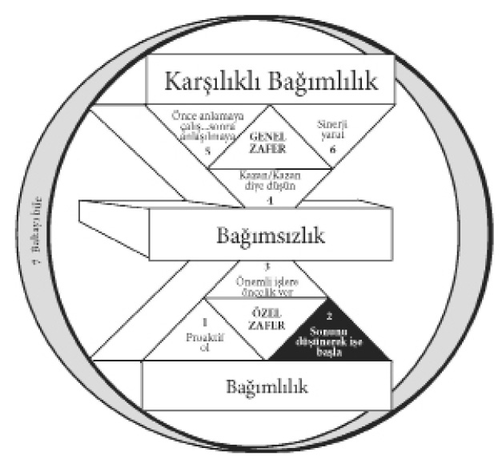
KİŞİSEL LİDERLİK İLKELERİ
Geride yatanlar ve ileride yatanlar,
içimizde yatanlarla karşılaştırıldığında
önemsiz kalır.
OLIVER WENDELL HOLMES
Lütfen bundan sonraki birkaç sayfayı okumak için, kimsenin sizi rahatsız etmeyeceği, yalnız kalabileceğiniz bir yer bulun.
Okuyacaklarınız ve benim sizi yapmaya davet edeceğim şeyler dışında, aklınızdan her şeyi silip atın. Programınız, işiniz, aileniz ya da dostlarınız için kaygılanmayın. Bütün dikkatinizi bana verin ve zihninizi gerçekten açık tutun.
Hayalinizde sevdiğiniz birinin cenazesine gittiğinizi canlandırın.
Cenaze evine gidiyorsunuz. Arabanızı park ediyor ve iniyorsunuz.
Binaya girerken çiçekleri fark ediyorsunuz. İlerledikçe dostlarınızın ve aile üyelerinin yüzlerini görüyorsunuz. Oradaki insanların yüreğinden taşan ve bir kaybın neden olduğu o paylaşılan hüznü, ölen kişiyi hayattayken tanımış olmanın sevincini hissediyorsunuz.
Salonun ön tarafına doğru ilerliyor, tabuta bakıyor ve birden kendinizle yüz yüze geliyorsunuz. Bu, tam üç yıl sonraki kendi cenaze töreniniz. Bütün bu insanlar sizi onurlandırmaya, yaşamınıza karşı duydukları takdir ve sevgiyi açıklamaya gelmişler.
Bir yere oturarak törenin başlamasını beklerken elinizdeki programa bakıyorsunuz. Törende dört kişi konuşacak. İlk konuşmacı aileniz ya da akrabalarınız arasından birisi. Çocuklar, erkek ve kız kardeşler, yeğenler, teyzeler, halalar, amcalar, dayılar, kuzenler, büyükanne ve büyükbabalar. Hepsi de ülkenin dört bir yanından cenaze törenine katılmaya gelmişler. İkinci konuşmacı, kişiliğiniz hakkında bilgi verebilecek dostlarınızdan biri. Üçüncü konuşmacı, iş yerinizden ya da sizin mesleğinizden biri. Dördüncüsü ise, hizmet verdiğiniz toplumsal bir kurumdan.
Şimdi iyice düşünün: Bu konuşmacıların her birinin sizinle ve yaşamınızla ilgili neler söylemesini isterdiniz? Sizi nasıl bir eş, baba ya da anne olarak yansıtmalarını arzu ederdiniz? Nasıl bir oğul, ya da kız, ya da kuzen? Nasıl bir dost? Nasıl bir iş arkadaşı?
Sizde ne tür bir karakter görmüş olmalarını tercih ederdiniz? Ne tür katkılarınızı, ne tür başarılarınızı hatırlamalarını isterdiniz? Onların yaşamlarında ne tür bir değişiklik yapmış olmayı arzu ederdiniz?
Okumayı sürdürmeden önce birkaç dakika durun ve izlenimlerinizi not edin. Bu, 2. Alışkanlıkla ilgili kişisel anlayışınızı büyük ölçüde artıracaktır.
“SONUNU DÜŞÜNEREK İŞE BAŞLAMA”NIN ANLAMI
Bu göz önünde canlandırma deneyimine ciddi bir biçimde katıldıysanız, bir an için derinlerde yatan temel değerlerinizle temasa geçip, Etki Alanınızın merkezindeki iç rehberlik sistemiyle kısa bir bağlantı kurdunuz demektir.
Joseph Addison’un şu sözleri üzerinde düşünün:
Yüce insanların mezarlarına baktığım zaman, içimdeki her türlü kıskançlık duygusu ölüyor. Güzel insanların mezar taşlarını okuduğumda, her türlü aşırı arzu sönüyor. Bir mezar taşında anne-babanın yasıyla karşılaştığımda, merhametten içim eziliyor. Aynı anne-babanın mezar taşını gördüğümde, kısa bir süre sonra izleyeceğimiz kişiler için yas tutmanın yararsızlığını düşünüyorum. Kralların, kendilerini tahttan indirenlerle birlikte yattığını gördüğümde, yan yana gömülmüş, birbirinin rakibi olan dehaları, ya da yarışmaları ve tartışmalarıyla dünyayı bölen kutsal adamları düşündüğümde, insan türünün küçük rekabetleri, bölücülükleri ve tartışmaları bende hem hüzün hem de hayret uyandırıyor. Kimi dün, kimi de altı yüz yıl önce ölmüş insanların mezar taşlarındaki tarihleri okuduğumda, hepimizin Çağdaş olacağı ve hep birlikte ortaya çıkacağımız o büyük Gün’ü düşünüyorum.
2. Alışkanlık çok farklı koşullar ve yaşam düzeylerinde geçerli olsa da, “Sonunu düşünerek işe başlama”nın en temel uygulaması, bugüne yaşamınızın sonuna dair bir imge, resim ya da paradigma ile başlamaktır. Geride kalan her şey, bu değer yargınız ya da kıstasınıza göre incelenecektir. Yaşantınızın her parçası –bugünkü davranışlar, yarınki davranışlar, gelecek haftaki davranışlar, gelecek ayki davranışlar– bütünün, yani sizin için gerçekten önemli şeylerin bağlamında incelenebilir. O sonu açıkça aklınızda tutarsanız, belirli bir gün içinde ne yaparsanız yapın, bunların son derece önem verdiğiniz kıstaslara aykırı olmamasını sağlarsınız. Böylece her gününüz, bir bütün olarak yaşamınızla ilgili vizyonunuza anlamlı bir katkıda bulunur.
Sonunu düşünerek işe başlamak, varacağınız yeri iyice belirleyerek başlamak demektir. Şu anda nerede bulunduğunuzu daha iyi anlamak ve attığınız adımların her zaman doğru yönde olmasını sağlamak için, nereye gittiğinizi bilmektir.
Etkinlik tuzağına düşmek, yaşamın hareketliliğine kapılmak, başarı merdivenini tırmanmak için çaba üstüne çaba harcayıp sonunda merdivenin yanlış duvara dayalı olduğunu anlamak inanılmayacak kadar kolaydır. İnsan çok çalışabilir, didinip durabilir, ama pek etkili olmayabilir.
İnsanlar çoğu zaman boş zaferler kazandıklarını fark ederler.
Elde ettikleri başarılara karşın, birdenbire kendileri için çok daha değerli olan şeyleri kaybettiklerini anlarlar. Her türlü meslek sahibi kişiler –doktorlar, akademisyenler, oyuncular, politikacılar, iş insanları, sporcular, tesisatçılar– çoğu zaman daha fazla para, daha fazla itibar kazanmak, ya da belirli bir profesyonel yeterlilik düzeyine erişmek için mücadele ederler. Sonuçta ise hedefe ulaşma arzularının, gerçekten önemli olan ama artık kaybedilmiş şeylere karşı gözlerini kör ettiğini fark ederler.
Bizim için neyin çok önemli olduğunu gerçekten bildiğimizde, yaşamımız çok farklı olur. Her gün gerçekten en önemli şeyleri yapmayı ve olmayı, o resmi aklımızda tutarak başarırız. Eğer merdiven doğru duvara dayanmamışsa, attığımız her adım bizi hızla yanlış yere götürür. İşimiz başımızdan aşkın olabilir, çok verimli de olabiliriz. Ancak bunların yanı sıra, gerçekten etkili olmamız, sonunu düşünerek işe başlamamıza bağlıdır.
Cenaze töreni deneyiminde hakkınızda neler söylenmesini istediğinizi dikkatlice düşünürseniz, kendi başarı tanımınızı bulursunuz.
Bu, aklınızda tuttuğunuzu düşündüğünüz tanımdan çok farklı olabilir. Belki de uğrunda çabaladığımız itibar, başarı, para ya da başka bir şey, aslında doğru duvarın bir parçası bile değildir.
Sonunu düşünerek işe başladığınız zaman farklı bir bakış açısı edinirsiniz. Bir adam, ortak bir dostlarının ölümü üzerine arkadaşına sormuş: “Ne kadar bıraktı?” Beriki karşılık vermiş: “Hepsini!”
HER ŞEY İKİ KEZ YARATILMIŞTIR
“Sonunu düşünerek işe başla”, her şey iki kez yaratılmıştır ilkesine dayanır. Her şeyin bir zihinsel, yani ilk yaratımı; bir de fiziksel, yani ikinci yaratımı vardır.
Örneğin bir evin inşasını ele alalım. Daha ilk çiviyi çakmadan önce, onu en ufak ayrıntısına kadar yaratırsınız. Ne tür bir ev istediğinizi iyice anlamaya çalışırsınız. Aile merkezli bir ev istiyorsanız, ailenin toplanacağı bir oturma odası planlarsınız. Çocukların dışarıda oynamaları için sürgülü kapılar ve bir oyun alanı tasarlarsınız. Fikirler üzerinde çalışırsınız. Yapmak istediğiniz evi gözünüzün önünde açık seçik canlandırıncaya kadar aklınızı çalıştırırsınız.
Sonra bunun ozalitini çıkarıp mimari planları oluşturursunuz.
Bütün bunlar arsaya el sürülmeden önce yapılır. Aksi takdirde, ikinci yaratım, yani fiziksel yaratım sırasında, evinizin maliyetini iki katına çıkaracak pahalı değişiklikler yapmak zorunda kalırsınız.
Marangozun kuralı şudur: “İki kez ölç, bir kez biç.” Ozalitin, yani o ilk yaratımınızın gerçekten istediğiniz gibi olduğundan, her şeyi doğru düşündüğünüzden emin olmalısınız. Sonra da, harç ve tuğla devreye girer. Her gün şantiyeye gidip o gün yapılacak işleri belirlemek için ozalite bakarsınız. Sonunu düşünerek işe başlarsınız.
Bir başka örnek olarak iş hayatını ele alalım. Başarılı bir şirket sahibi olmak istiyorsanız, neyi başarmak istediğinizi iyice belirlersiniz.
Piyasadaki hedefinize göre üretmek istediğiniz ürün ya da hizmeti enine boyuna düşünürsünüz. Sonra da bu hedefe ulaşmak için bütün öğeleri düzenlersiniz: Para, araştırma ve geliştirme, operasyon, pazarlama, personel, binalar vb. Ne ölçüde sonunu düşünerek işe başladığınız, başarılı bir işletme yaratıp yaratamayacağınızı belirler.
İş yaşamındaki başarısızlıkların çoğu ilk yaratımda; sermaye yetersizliği, pazarı yanlış tanıma ya da iş planı eksikliği gibi sorunlar yüzünden başlar.
Annelik ve babalık konusunda da aynı şeyler söylenebilir. Kendi kendini disipline sokan sorumlu çocuklar yetiştirmek istiyorsanız, onlarla günlük ilişkilerinizde bu hedefi aklınızdan hiç çıkarmamalısınız.
Çocuklara, özdisiplin ya da özsaygılarını zayıflatacak davranışlarda bulunamazsınız.
İnsanlar bu ilkeyi, yaşamın çeşitli alanlarında değişik derecelerde uygular. Bir yolculuğa çıkmadan önce gideceğiniz yeri belirler ve en iyi ulaşım yolunu tasarlarsınız. Bahçenizi düzenlemeden önce onu kafanızda ya da kâğıt üzerinde biçimlendirirsiniz. Konferans vermeden önce düşüncelerinizi kâğıda dökersiniz. İpliği iğneye geçirmeden önce dikeceğiniz giysilerin kalıbını çıkarırsınız.
Bu iki yaratım ilkesini anlayıp, her ikisinin sorumluluğunu da üstlenirsek, Etki Alanı içinde hareket eder ve bu alanın sınırlarını genişletiriz. Bu ilkeye uymayıp ilk yaratımla ilgilenmezsek, alanı küçültürüz.
BİLİNÇLİ OLARAK YA DA İHMAL SONUCU
Her şeyin iki kez yaratılıyor olması bir ilkedir. Ama bütün ilk yaratımlar bilinçli bir tasarımın sonucu değildir. Kişisel yaşamımızda özbilincimizi geliştirmez ve ilk yaratımların sorumluluğunu üstlenmezsek, bu ihmalimiz yüzünden Etki Alanımızın dışındaki diğer insanlara ve koşullara, yaşantımızın önemli bir bölümünü biçimlendirme yetkisini vermiş oluruz. Reaktif bir biçimde ailemizin, iş arkadaşlarımızın, başkalarının programlarının, koşullarının ve baskısının yarattığı senaryoları yaşarız. Bunlar çocukluğumuzun, eğitim ve koşullanma tarzımızın senaryolarıdır.
Bu senaryolar insanlardan doğar, ilkelerden değil. Bunların kaynakları o derindeki savunmasız yanlarımız, başkalarına olan güçlü bağımlılığımız, kabul edilip sevilme, ait olma, değer ve saygı görme, önemli olduğumuzu hissetme ihtiyacımızdır.
Farkında olsak da olmasak da, kontrol edebilsek de edemesek de, yaşamımızın her bölümünde bir ilk yaratım vardır. Bizler, ya kendi proaktif tasarımımızın ikinci yaratımı, ya da başka kişilerin gündemlerinin, koşulların ya da eski alışkanlıkların ikinci yaratımı oluruz.
Yalnızca insanlara özgü olan özbilinç, hayal gücü ve vicdan, ilk yaratımları incelememizi sağlar ve kendi ilk yaratımımızı denetim altına almamızı, kendi senaryomuzu yazmamızı mümkün kılar. Başka bir deyişle, 1. Alışkanlık, “Yaratıcı sensin,” der. 2. Alışkanlık ise ilk yaratımdır.
LİDERLİK VE YÖNETİM – İKİ YARATIM
2. Alışkanlığın temelinde kişisel liderlik ilkeleri vardır. Bu, liderliğin ilk yaratım olduğu anlamına gelir. Liderlik, yöneticilik değildir.
Yöneticilik ikinci yaratımdır. Bunu 3. Alışkanlıkla ilgili bölümde inceleyeceğiz. Ama önce liderliğin gelmesi gerekir.
Yöneticilik, taban çizgisinde bir odak noktasıdır: Bazı şeyleri en iyi nasıl başarabilirim? Liderlik ise tavan çizgisiyle ilgilenir: Başarmak istediğim şeyler nedir? Peter Drucker ve Warren Bennis’in deyişiyle: “Yöneticilik, işleri doğru yapmaktır. Liderlik ise, doğru olanı yapmaktır.” Yöneticilik, başarı merdivenini tırmanma becerisidir; liderlik ise merdivenin doğru duvara dayalı olup olmadığını belirler.
İkisi arasındaki bu önemli ayrımı çabucak kavramak istiyorsanız, bir grup üreticinin vahşi bir ormanda baltalarla kendilerine yol açtıklarını hayal edin. Onlar üreticidir, sorun çözücüdür. Çalıları keser, ormanın zeminini temizlerler.
Yöneticiler onların gerisindedir. Baltaları biler, yönerge ve usuller hakkında kitapçıklar yazar, kas geliştirme programları uygular, kurslar düzenler, geliştirilmiş teknolojiyi işe katıp çalışma programları ve balta sallayanlar için ücretlendirme programları hazırlarlar.
Burada lider, en yüksek ağaca tırmanarak etrafı inceleyen ve sonra da, “Yanlış ormandayız!” diye bağıran kişidir.
Ancak işleri başından aşkın olan verimli üreticiler ve yöneticiler genellikle ne cevap verir? “Kes sesini! İlerliyoruz!”
Bireyler, topluluklar ve işletmeler olarak çoğu zaman çalıları ortadan kaldırmaya öylesine dalarız ki, yanlış ormana girdiğimizin farkında bile olmayız. Yaşadığımız çevrenin çok çabuk değişmesi de, etkili liderliği her zamankinden önemli kılmaktadır. Bu, bağımsız ve karşılıklı bağımlı yaşamın her alanında geçerlidir.
Bize gereken, daha çok bir vizyon ya da hedef ve pusuladır (bir dizi ilke ya da talimat); bir yol haritası o kadar gerekli değildir. Çoğu zaman, önümüzdeki arazinin neye benzediğini ve oradan geçmek için neye ihtiyacımız olduğunu bilmeyiz. Bu durumda pek çok şey, zamanında alacağımız karara bağlıdır. Ama içimizdeki bir pusula, bize her zaman doğru yönü gösterir.
Etkili olmak –hatta çoğu zaman ayakta kalmak– yalnızca ne kadar çaba harcadığımıza değil, çabalarımızı doğru ormanda harcayıp harcamadığımıza bağlıdır. Hemen her sektör ve meslekte dönüşüm, önce liderliği, sonra da yöneticiliği gerektirir.
İş dünyasında pazar o kadar çabuk değişiyor ki, birkaç yıl önce tüketicinin zevkine ve gereksinimlerine tamamen uyan pek çok ürün ve hizmet, bugün artık modası geçmiş sayılıyor. Güçlü bir proaktif liderlik, çevre değişikliklerini, özellikle de müşterilerin satın alma alışkanlıklarıyla dürtülerini izlemek ve kaynakları doğru yönlendirmek için gereken gücü sürekli sağlamak zorundadır.
Havayolları sektörünün özelleştirilmesi, sağlık hizmetlerinin hızla pahalılaşması, otomobil ithalatının nitelik ve nicelik açısından sürekli büyümesi, çevreyi önemli bir biçimde etkilemekte. Endüstriler, kendi işçi toplulukları da dahil, çevreyi izlemez ve doğru yöne gitmek için yaratıcı liderlikten yararlanmazlarsa, çok sayıda uzman yönetici bile onları başarısızlığa uğramaktan kurtaramaz.
Etkili liderlik olmaksızın verimli yöneticilik, bir kişinin tabiriyle, gemisinin güvertesindeki şezlongları düzeltmeye benzer.” Hiçbir yöneticilik başarısı, liderlikteki başarısızlığı dengeleyemez.
Ancak liderlik zordur, çünkü çoğu zaman, bir yöneticilik paradigmasına takılıp kalırız.
Seattle’da bir yıl süren yönetici geliştirme programının son gününde, bir petrol şirketinin başkanı yanıma gelerek “Stephen,” dedi, “ikinci ay, liderlikle yöneticilik arasındaki farkı gösterdiğiniz sırada, bu şirketin başkanı olarak kendi görevimi gözden geçirip hiçbir zaman liderlik yapmadığımı anladım. Yönetim işine gömülmüş, acil sorunlara ve günlük lojistik ayrıntılara saplanıp kalmıştım. İşte bu nedenle yöneticilikten vazgeçmeye karar verdim. Bunu başkalarına yaptırabilirdim. Şirketimin lideri olmayı gerçekten istiyordum.
“Çok zor oldu. Geri çekilmenin acılarını yaşadım, çünkü hemen önümde duran bir sürü acil ve önemli sorunla uğraşmaktan vazgeçmiştim.
Oysa bunlar bende bir başarı duygusu uyandırıyordu. Yön verme, kültür oluşturma meseleleri, olayların derinlemesine analizi ve yeni fırsatları yakalama gibi şeylerle boğuşmaktan çok da memnun kalmadım. Diğer insanlar da çalışma tarzlarındaki rahatlıktan uzaklaştıkları için acı çektiler. Kendilerine tanımış olduğum, istedikleri an bana ulaşabilme olanağını yitirmişlerdi. Yine yanlarında olmamı, gündelik sorunların çözümü için yardım etmemi, isteklerine karşılık vermemi bekliyorlardı.
“Ama ben direndim. Liderlik yapmam gerektiğinden kesinlikle emindim. Ve de yaptım. Bugün, işimiz tamamen farklı. Çevremizle daha fazla uyum içindeyiz. Gelirlerimizi iki, kârımızı ise dört katına çıkardık. Artık liderliğe soyunmuş durumdayım.”
Bence anne-babalar da çoğu zaman yöneticilik paradigmasına takılıp kalıyorlar. Yön, amaç ve aile duygusu yerine denetim, verimlilik ve kuralları düşünüyorlar.
Kişisel yaşamımız ise liderlikten daha da yoksun. Henüz değerlerimizi bile belirginleştirmeden, verimli yönetimle, hedefleri belirleyip ulaşmakla uğraşıyoruz.
YENİ SENARYO: KENDİ İLK YARATICINIZ OLMAK
Daha önce de açıkladığımız gibi, proaktivite, benzersiz bir insani yeti olan özbilince dayanır. Bunun dışında proaktivitemizi genişletmemizi ve yaşamımızda liderlik yapmamızı sağlayan iki eşsiz yeti de, hayal gücü ve vicdandır.
Hayal gücünün yardımıyla, içimizde yatan potansiyelin yaratılmamış dünyalarını gözümüzün önünde canlandırabiliriz. Vicdanımız sayesinde, evrensel yasalar ya da ilkelerle, kendi basit yeteneklerimiz, katkı yollarımız ve bunları etkili bir biçimde geliştirmemizi sağlayacak kişisel rehberlik çerçevesinde bağlantıya geçebiliriz. Bu iki yeti özbilincimizle birleştiğinde, bize kendi senaryomuzu yazma gücünü verir.
Bize benimsetilen bir sürü senaryoyla yaşadığımız için, kendi senaryomuzu yazma süreci aslında daha çok bir “yeniden yazma” ya da paradigma değişimi sürecidir. Bu, sahip olduğumuz temel paradigmalardan bazılarının değiştirilmesi anlamına gelir. Etkisiz senaryoları, içimizdeki yanlış ya da tamamlanmamış paradigmaları belirlerken, yeni senaryomuzu proaktif bir biçimde yazmaya başlayabiliriz.
Bence senaryoyu yeniden yazma sürecinin en esinleyici anlatılarından biri, Mısır’ın eski Başkanı Enver Sedat’ın otobiyografisinde bulunabilir. Sedat, İsrail’e karşı nefret duygusuyla yetiştirilip eğitilmişti.
Kendisine benimsetilen senaryo buydu. Devlet televizyonunda, “İsrailliler Arap topraklarının bir karışını işgal ettikleri sürece asla bir İsraillinin elini sıkmam,” diyordu. “Asla, asla, asla!”
Ülkedeki geniş kitleler de aynı nakaratı tekrarlıyordu: “Asla, asla, asla!” Sedat, tüm ülkenin enerji ve iradesini o senaryoda toplayıp birleştirmişti.
Senaryo çok bağımsız ve milliyetçiydi. Bu da halkta derin duygular uyandırıyordu. Ama çok da mantıksızdı ve Sedat bunu biliyordu.
Senaryo, durumun tehlikeli, karşılıklı bağımlı gerçekliğini göz ardı ediyordu.
Dolayısıyla senaryosunu yeniden yazdı. Bu, gençliğinde Kral Faruk’a karşı düzenlenen bir komploya karıştığı için atıldığı, Kahire Merkez Hapishanesi’nin 54 numaralı tek kişilik hücresinde tutsakken öğrendiği bir süreçti. Sedat orada, kendi zihninin dışına çıkıp, senaryoların koşullara uygun ve akıllıca olup olmadıklarına bakmayı öğrenmişti. Derin bir tefekkür sürecinden geçerken zihnini boşaltmayı, kendi kutsal yazıları, kendi dualarıyla kendi senaryosunu yenilemeyi öğrenmişti.
Sedat, otobiyografisinde, hücresinden çıkmayı neredeyse hiç istemediğini yazıyor, çünkü gerçek başarının insanın kendisine karşı kazandığı başarı olduğunu orada anlamış. İşin sırrının bir şeylere sahip olmak değil, kendine hâkim olmak, kendine karşı zafer kazanmak olduğunu da.
Nasır’ın yönetimi sırasında Sedat’a oldukça önemsiz bir görev verildi. Herkes onun cesaretini yitirdiğini sanıyordu, ama bu doğru değildi. Kendi filmlerini ona yansıtıyorlardı. Sedat’ı anlamıyorlardı.
O ise zamanını bekliyordu.
Zamanı geldiğinde, yani devlet başkanı olup siyasal gerçeklerle yüzleştiğinde, İsrail’le ilişkiler konusunda yeni bir senaryo oluşturdu.
Kudüs’te Knesset’i ziyaret etti ve dünya tarihinde teamülleri yıkan en önemli barış harekâtlarından birini başlattı. Bu cesur girişim, sonunda Camp David Antlaşması’nın yolunu açtı.
Sedat, kişisel liderlik aracılığıyla temel paradigmasını, durumu görüş biçimini değiştirmek için özbilincini, hayal gücünü ve vicdanını kullanma yeteneğine sahipti. Etki Alanının merkezinde çalıştı.
Bu yeni senaryo ile bu paradigma değişiminden doğan davranış ve tutum değişiklikleri de, daha geniş İlgi Alanındaki milyonlarca yaşamı etkiledi.
Birçoğumuz kendi özbilincimizi geliştirirken etkisiz senaryolar keşfederiz. İyice derinlere yerleşmiş olan bu alışkanlıklar bize hiç de layık değildir ve değer verdiğimiz şeylerle hiç uyuşmaz. 2. Alışkanlık bu senaryolarla yaşamak zorunda olmadığımızı söyler. Hayal gücümüzü ve yaratıcılığımızı kullanarak en derin değerlerimize ve bu değerlere anlam kazandıran doğru ilkelere uyan daha etkili yeni senaryolar üretmek, bize düşen bir sorumluluktur.
Örneğin, diyelim ki çocuklarıma çok fazla tepki gösteriyorum.
Uygunsuz olduğunu düşündüğüm bir şey yapmaya başladıkları zaman mide kaslarım büzülüveriyor. Savunma duvarlarının yükseldiğini hissedip, savaşmaya hazırlanıyorum. Odak noktam, uzun vadeli gelişme ve anlayış değil, kısa vadeli davranışlar oluyor. Yalnızca çarpışmayı kazanmaya çalışıyorum, savaşı değil.
Donanımımı –kocaman cüssem, otoriter konumum– kuşanıp bağırıp çağırıyor, sindiriyor, tehdit ediyor veya cezalandırıyorum. Kazanan ben oluyorum. Orada, parçalanmış bir ilişkinin kalıntılarının ortasında zafer kazanmış gibi dikiliyorum. Çocuklarım ise görünüşte itaatkâr, ama içten içe isyan halinde, sonradan daha çirkin bir biçimde ortaya çıkacak olan duygularını baskı altında tutuyorlar.
Şimdi ben, daha önce hayalimizde canlandırdığımız o cenaze töreninde bulunsaydım ve çocuklarımdan biri konuşmaya hazırlanıyor olsaydı, onun hayatının yıllar boyu sürdürülen öğretim, eğitim ve sevgiyle verilen disiplinin zaferini yansıtmasını isterdim; her şeyi çabucak çözmek için girişilen çarpışmaların yaralarını değil.
Yüreğinin ve aklının, birlikte geçirilen anlamlı, güzel zamanların anılarıyla dolu olmasını isterdim. Beni, büyümenin getirdiği neşe ve acıyı paylaşan, sevecen bir baba olarak anımsamasını isterdim.
Sorunları ve kaygılarıyla birlikte bana geldiği günleri hatırlamasını isterdim. Dinlemiş, sevmiş ve yardım etmiş olmak isterdim. Kusursuz olmadığımı, ama elimden gelen her şeyi denediğimi bilmesini isterdim. Onu belki bu dünyada herkesten çok, benim sevdiğimi de bilsin isterdim.
Bütün bunları istememin nedeni, içimin derinliklerinde çocuklarıma değer vermemdir. Onları seviyor, yardımcı olmak istiyorum.
Babalık görevime değer veriyorum.
Ama bu değerleri her zaman göremiyorum. Olayların akışına kapılıyorum.
En önemli şeyler acil sorunların, beklenmedik durumlar ve dış davranışlardan oluşan tabakaların altında gömülü kalıyor. Reaktif oluyorum. Çocuklarımla gündelik etkileşim tarzım, çoğu zaman onlara karşı duyduğum derin duyguları pek yansıtmıyor.
Özbilincin yanı sıra, hayal gücü ve vicdan sahibi olduğum için, en önemli değerlerimi inceleyebilirim. Uyguladığım senaryonun o değerlere uyum sağlamadığını; yaşamımın kendi proaktif tasarımın değil, koşullara ve başkalarının eline bıraktığım ilk yaratımın bir ürünü olduğunu anlayabilirim. Ve değişebilirim. Anılarıma değil, hayal gücüme dayanarak yaşayabilirim. Beni kısıtlayan geçmişime değil, sonsuz birikimime bağlanabilirim. Kendi ilk yaratıcım olabilirim.
Sonunu düşünerek işe başlamak, hem babalık rolüme hem de yaşam boyu üstlendiğim diğer rollere, değerlerimi ve yönümü netleştirerek yaklaşmak demektir. Kendi ilk yaratımımdan sorumlu olmak, davranış ve tutumumun kaynağı olan paradigmaların en derin değerlerimle örtüştüğü ve doğru ilkelerle uyum halinde olduğu yeni bir senaryo hazırlamak anlamına gelir.
Ayrıca, güne başlarken o değerleri sıkı sıkıya aklımda tutmak anlamına da gelir. Böylece değişiklikler ve zorluklar baş gösterdiğinde, kararlarımı o değerlere dayanarak verebilirim. Dürüstçe davranabilirim. Duygulara, koşullara tepki göstermem gerekmez.
Gerçekten değerlerin yönettiği, proaktif biri olabilirim, çünkü değerlerim bellidir.
KİŞİSEL MİSYON BİLDİRGESİ
Sonunu düşünerek işe başlamanın bildiğim en etkili yolu, bir kişisel misyon bildirgesi, felsefesi ya da inancı geliştirmektir. Burada odak noktası, ne olmak istediğiniz (karakter), ne yapmak istediğiniz
(katkılar ve başarılar) ve olmanın, yapmanın temelindeki değerler ya da ilkelerdir.
Her birey eşsiz olduğu için, kişisel bir misyon bildirgesi hem içerik ve hem de şekil bakımından bu eşsizliği yansıtır. Dostum Rolfe Kerr, kişisel inancını şöyle açıklıyor:
Önce kendi evinde başarılı ol.
Tanrı’nın yardımını iste ve buna layık ol.
Dürüstlüğünden hiçbir zaman ödün verme.
İlgili kişileri unutma.
Bir yargıya varmadan önce her iki tarafı da dinle.
Başkalarına akıl danış.
Orada bulunmayan kimseleri savun.
İçten, ama kararlı ol.
Her yıl yeni bir konuda yeterlilik kazan.
Yarının işini bugünden tasarla.
Beklerken elini çabuk tut.
Her zaman olumlu bir tavır takın.
Mizah ve hoşgörü anlayışını kaybetme.
Kişi olarak da, iş yerinde de düzenli ol.
Hatalardan korkma; sadece o hatalara yaratıcı, yapıcı ve düzeltici tepkiler gösterememekten kork.
Yanında çalışanların başarıya ulaşmalarını kolaylaştır.
Konuştuğunun iki katı dinle.
Bütün yeteneklerini ve çabalarını elindeki işe yönelt, bir sonraki işini ya da yükselmeyi dert etme.
Aile ve iş değerlerini dengelemeye çalışan bir kadın, kişisel misyon anlayışını farklı biçimde ifade ediyor:
Mesleğimle ailemi elimden geldiğince dengelemeye çalışacağım, çünkü her ikisi de benim için önemli.
Evim; benim, ailemin, dostlarımın ve konuklarımın neşe, rahatlık, huzur ve mutluluk bulacakları bir yer olacak. Yine de temiz ve düzenli, ama yaşanabilir ve rahat bir ortam yaratmaya çalışacağım.
Evde yiyeceğimiz, okuyacağımız, izleyeceğimiz ve yapacağımız şeyleri akıllıca seçeceğim. Çocuklarıma özellikle sevmeyi, öğrenmeyi ve gülmeyi; ayrıca çalışıp kendilerine özgü yeteneklerini geliştirmeyi öğretmek istiyorum.
Demokratik toplumumuzun özgürlüklerine, haklarına ve sorumluluklarına değer veriyorum. İlgili ve bilgili bir yurttaş olacak, sesimi duyurmak, oyumu saydırmak için politik sürece katılacağım.
Hedeflerine ulaşmak için kendiliğinden harekete geçen, inisiyatifi ele alan bir insan olacağım. Edilgin kalmayıp, durumlar ve fırsatlar üzerinde etkin olacağım.
Bağımlılığa yol açan zararlı alışkanlıklardan uzak durmaya çalışacağım.
Beni eskimiş kalıplardan ve sınırlardan kurtaran, yeteneklerimi ve seçeneklerimi genişleten alışkanlıklar geliştireceğim.
Param, efendim değil, uşağım olacak. Zaman içinde, parasal bakımdan bağımsız olmaya çalışacağım. İsteklerim, ihtiyaçlarıma ve kaynaklarıma bağlı olacak. Uzun vadeli ev ve araba kredileri dışında, tüketici borçlarına girmeyeceğim. Kazandığımdan daha azını harcayacağım.
Gelirimin bir kısmını düzenli bir biçimde biriktirecek ya da yatırım yapacağım.
Ayrıca elimdeki parayı ve yeteneklerimi, hizmet ve bağışlar yoluyla başkalarının yaşamını daha zevkli hale getirmek için kullanacağım.
Kişisel misyon bildirgesini, kişisel anayasa olarak da adlandırabilirsiniz.
ABD Anayasası gibi, bu da temelde değişmez. İki yüzyıl boyunca, anayasada yalnızca yirmi altı değişiklik yapıldı. Bunlardan onu, ilk İnsan Hakları Bildirisi’nde de vardı.
ABD Anayasası, ülkedeki bütün yasalar için bir standart oluşturur.
Bu, Başkan’ın Bağlılık Yemini ederken korumaya ve desteklemeye söz verdiği belgedir. İnsanların vatandaşlığa kabulünde kullanılan ölçüttür. Halkın İç Savaş, Vietnam ya da Watergate gibi krizleri atlatmasını sağlayan temel ve merkezdir. Geride kalan her şeyin değerlendirilmesinde ve yönlendirilmesinde kullanılan yazılı standart, ana kıstastır.
Anayasa süregelmiştir; bugün hayati işlevini yerine getirmesinin nedeni, doğru ilkelere ve ABD Bağımsızlık Bildirisi’nin içerdiği o çok açık gerçeklere dayalı olmasıdır. Bu ilkeler Anayasa’ya toplumsal belirsizlik ve değişim ortamında bile, zamanla kaybolmayacak bir güç veriyor. Thomas Jefferson, “Özel güvenlik kaynağımız, yazılı bir Anayasamızın olmasıdır,” demişti.
Doğru ilkelere dayanan kişisel misyon bildirgesi de, birey için aynı türden bir standart halini alır. Kişisel bir anayasa olur. Hem yaşantımızı yönlendiren önemli kararlar, hem de hayatı etkileyen koşullar ve duygular arasında alınan gündelik kararlar için bir temel oluşturur. Değişim ortamında, zamanla aşınmayan bir güç verir insanlara.
İçlerinde değişmeyen bir öz yoksa, insanlar değişime ayak uyduramaz.
Değişme yeteneğinin anahtarı, kim olduğunuzu, ne yaptığınızı ve nelere değer verdiğinizi belirleyen, o değişmeyen anlayıştır.
Misyon bildirgesiyle, değişikliklere ayak uydururuz. Önyargılara ya da haksız hükümlere ihtiyacımız yoktur. Geride kalan her şeyi hesaplamamıza, gerçeğe yer açmak için her şeyi ve herkesi kalıplara ve sınıflara sokmamıza gerek yoktur.
Kişisel çevremiz de gitgide artan bir hızla değişiyor. Bu kadar hızlı değişim, buna katlanamayacağını, yaşamla başa çıkmanın zor olduğunu düşünen çok sayıda insanı yıpratıyor. Bu insanlar reaktif hale geliyor ve esas olarak çabalamaktan vazgeçip, başlarına gelecek şeylerin iyi olacağını umuyorlar.
Ama böyle olması gerekmez. Victor Frankl, Nazi ölüm kamplarında sadece proaktivite ilkelerini değil, hayatta bir amaç ve anlam duygusuna sahip olmanın önemini de öğrendi. Frankl’in sonradan geliştirerek öğrettiği “logoterapi” felsefesinin özü şudur: Zihinsel ya da duygusal diye tanımlanan hastalıkların çoğu, aslında bastırılmış bir anlamsızlık ya da boşluğun belirtisidir. Logoterapi, kişinin kendi benzersiz anlamını, hayattaki misyonunu öğrenmesini sağlayarak bu boşluğu ortadan kaldırır.
O misyon duygusuna sahip olur olmaz, kendi proaktivitenizin özünü de kavrarsınız. Artık yaşamınızı yönlendirecek bir bakış açınız ve değerlerinizin yanı sıra, uzun ve kısa vadeli hedeflerinizi belirleyecek temel bir yönünüz de vardır. Doğru ilkelere dayanan yazılı bir anayasa size güç verir. Zamanınızı, yeteneklerinizi ve enerjinizi en etkili biçimde kullanmanızla ilgili her karar, bu ilkelere göre ölçülebilir.
MERKEZDE
Kişisel bir misyon bildirgesi yazmak için, en temel paradigmalarımızı kapsayan Etki Alanımızın merkez noktasından, dünyayı görmek için kullandığımız o mercekten başlamamız gerekir.
Vizyonumuzla değerlerimizi burada değerlendiririz. Haritalarımızı incelemek ve doğru ilkelere değer veriyorsak, haritalarımızın araziyi doğru tanımladığından, paradigmalarımızın ilkelere ve gerçeğe dayandığından kesinlikle emin olmak için, bize bahşedilen özbilinçten burada yararlanırız. Eşsiz yeteneklerimizi ve katkı alanlarımızı anlamamıza yardım etmesi için vicdanımızı bir pusula gibi burada kullanırız. İstediğimiz sonucu gözümüzün önünde canlandırabilmek için hayal gücümüzden burada yararlanır, başladığımız şeylere bir yön ve amaç atayıp yazılı bir kişisel anayasanın özünü burada oluştururuz.
Odağa yönelik çabalarımız en önemli sonuçları yine burada alır.
Etki Alanımızın tam merkez noktasında çalışırken, bir yandan da bu alanı genişletiriz. Bu, en yüksek verimli ÜY (Üretme Yeteneği) çalışmasıdır ve yaşamımızın her yönünde etkililiğimize anlamlı bir güç katar.
Yaşantımızın merkezinde ne varsa, güvenlik, rehberlik, bilgelik ve gücümüzün kaynağını o oluşturur.
Güvenlik, değer anlayışınızı, kimliğinizi, duygusal bağlılığınızı, özsaygınızı, temel kişisel gücünüzü ya da bunun eksikliğini temsil eder.
Rehberlik, yaşamınıza yön veren kaynak demektir. Dışarıda olanları sizin için yorumlayan kendi değer yargılarınızın, yani haritanızın kapsadığı, karar alımını ve yapılanları dakikası dakikasına yöneten standartlar, ilkeler ya da üstü örtülü kıstaslardır.
Bilgelik, yaşama bakış açınız, denge duygunuz, farklı parçalarla ilkeler arasındaki uyum ve bağlantıya ilişkin anlayışınızdır. Yargı, ayırt etme yetisi ve kavrayışı içerir. Bir gestalt ya da birlik, kaynaşmış bir bütünlüktür.
Güç; hareket etme becerisi ya da yeteneği, bir şeyi başarma kuvveti ve kudretidir. Seçim yapmak ve karar vermek için gerekli olan yaşamsal enerjidir. Ayrıca, derinlere gömülü alışkanlıkları yenip daha üstün, daha etkili olanlarını geliştirme yeteneğini de kapsar.
Bu dört etken –güvenlik, rehberlik, bilgelik ve güç– karşılıklı bağımlıdır. Güvenlik ve açık seçik rehberlik, gerçek bilgeliği sağlar; bilgelik ise gücü ortaya çıkarıp yönlendirecek bir kıvılcım ya da katalizör işlevini görür. Bu dört etken bir arada bulunduğu, birbirini canlandırdığı ve birbirine uyum sağladığı zaman, soylu bir kişiliğin, dengeli bir karakterin, mükemmel bir şekilde bütünleşmiş bir insanın müthiş gücünü yaratır.
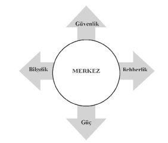
Yaşamın dayanağı olan bu etkenler, diğer tüm boyutlarına da destek verir. Hiçbiri ‘ya hep-ya hiç’ konumunda değildir. Her birini geliştirme dereceniz, daha önce tanımlanan sürekli olgunlaşma modeli gibi bir ölçek üzerinde belirlenebilir. Ölçeğin en alt noktasında, dört etken zayıftır. Temelde, koşullara ya da başka kimselere, doğrudan denetleyemediğiniz şeylere bağımlı olursunuz. En üst noktasındaysa denetim sizdedir. Bağımsız bir gücünüz ve karşılıklı bağımlı, doyurucu ilişkiler kuracak bir dayanağınız vardır.
Güvenliğiniz; ölçeğin bütün o kaypak güçler yüzünden hayatınızı altüst eden aşırı güvensizlik ucu ile, derin bir iç değer duygusu ve kişisel güvenlik ucu arasında herhangi bir ara düzeydedir. Rehberliğiniz; bu ölçek üzerinde, sosyal aynaya ya da diğer belirsiz, dengesiz kaynaklara bağımlılıktan, güçlü bir iç yönsemeye kadar uzanabilir.
Bilgeliğiniz; her şeyin çarpıtıldığı ve hiçbir şeyin uyuşmadığı tamamen yanlış bir haritayla, bütün parçaların ve ilkelerin birbirine gereğince uyduğu tam ve doğru harita arasında bir yerdedir. Gücünüz ise hareketsizlik ya da başkalarının iplerini çektiği bir kukla olmakla; yüksek proaktivite, yani başkalarının ve koşulların etkisi altında kalmak yerine kendi değerlerinize göre davranma gücü arasındaki bir noktadadır.
Bu etkenlerin ölçek üzerindeki yerleri, sonuç olarak birbirleriyle bütünleşme, uyum sağlama, denge kurma dereceleri ve yaşamınızın her yönü üzerindeki olumlu etkileri; merkezinizin, yani kendi özünüzdeki temel paradigmaların işlevidir.
ALTERNATİF MERKEZLER
Hepimizin bir merkezi vardır, ama genelde bunu o şekilde görmeyiz.
Ayrıca bu merkezin, yaşamımızın her yönü üzerindeki kapsayıcı etkilerini de fark etmeyiz.
Şimdi insanların genelde sahip oldukları birkaç merkez ya da ana paradigmayı kısaca inceleyelim. Böylece yukarıdaki dört temel boyutu ve sonuçta onlardan kaynaklanan yaşamın özünü nasıl etkilediklerini daha iyi anlamış oluruz.
EŞ MERKEZLİLİK: Evlilik, insan ilişkilerinin en samimi, en doyurucu, en dayanıklı ve geliştirici ilişkisi olabilir. İnsanın merkez olarak karısını ya da kocasını seçmesi çok doğal ve uygun görünebilir.
Ancak deneyim ve gözlemler, başka bir şey söylüyor. Yıllar boyunca birçok sorunlu evlilikle ilgilendim ve karşılaştığım eş merkezli ilişkilerin neredeyse tümünde belirli bir dokunun işlendiğini gözlemledim. O doku, güçlü bir duygusal bağımlılıktır.
Duygusal değer anlayışımızın kaynağı öncelikle evliliğimizse, bu ilişkiye fazlasıyla bağımlı oluruz. Eşimizin ruh haline ve duygularına, davranış ve tutumlarına ya da bu ilişkiyi etkileyebilecek herhangi bir dış olaya –yeni bir bebek, akrabalar, ekonomik gerilemeler, toplumsal başarılar vb.– karşı savunmasız kalırız.
Evlilikte sorumluluklar artıp da gerginlikler başladığında, yetişme çağımızda bize benimsetilmiş olan senaryolara döneriz. Ama eşimiz de bunu yapar ve senaryolar genellikle farklıdır. Para işleri, çocuğun terbiyesi ya da akraba sorunlarını ele almanın değişik yöntemleri su yüzüne çıkar. Bu derine yerleşmiş eğilimler evlilikteki duygusal bağımlılıkla birleştiğinde, eş merkezli ilişkinin bütün savunmasızlığı ortaya çıkar.
Çatışma yaşadığımız birine bağımlı olduğumuzda, hem ihtiyaç hem de anlaşmazlık şiddetlenir. Genellikle şu sonuçlar görülür:
Abartılı sevgi-nefret tepkileri, savaş ya da kaç eğilimleri, kabuğuna çekilme, saldırganlık, acı duygular, serzenişler ve soğuk rekabet.
Bunlar ortaya çıktığında, kendi davranışlarımızı haklı çıkarmak ve savunmak için arka plandaki eğilimlere sarılır ve eşimizinkilere saldırırız.
Çok savunmasız olduğumuz zamanlarda, yeni darbelerden korunmak için kaçınılmaz bir biçimde kendimizi koruma ihtiyacı duyarız.
Bu nedenle alaycılığa, iğneleyici şakalara, eleştirilere başvururuz.
İçimizdeki yumuşaklığın ortaya çıkmaması için elimizden geleni yaparız. Eşler, sevgi konusunda ilk adımı diğerinin atması beklentisi içinde olduklarından düş kırıklığına uğrarlar, ancak öte yandan, suçlamaların haklılığı da kendi açılarından kanıtlanmış olur.
Her şeyin yolundaymış gibi göründüğü bu tür ilişkilerde, yalnızca hayali bir güvenlik vardır. Rehberlik, anlık duyguya dayalıdır.
Bilgelik ve güç, karşı-bağımlılığın neden olduğu olumsuz etkileşimlerde kaybolup gider.
AİLE MERKEZLİLİK: Sık görülen bir başka merkez de ailedir. Bu da çok doğal ve uygun görünebilir. Bir odak ve köklü yatırım alanı olarak, derin ilişkiler, sevmek, paylaşmak gibi yaşamı değerli kılan pek çok şey için büyük fırsatlar sağlar. Ama ne gariptir ki, bir merkez olarak, ailenin başarısı açısından asıl gerekli unsurları ortadan kaldırır.
Aile merkezli insanlar, kişisel değer ya da güvenlik duygusunu aile geleneği ve kültüründen, ya da ailenin itibarından alırlar. Dolayısıyla da o gelenek ve kültürdeki her türlü değişikliğe ve o itibarı lekeleyecek her türlü etkiye karşı aşırı hassas olurlar.
Aile merkezli anne-babalar, çocuklarını, nihai iyiliklerini gerçekten düşünerek yetiştirmek için gereken duygusal özgürlükten ve güçten yoksundurlar. Güven duygusunu aileden aldıkları için, çocuklarına kendilerini sevdirme gereksinimleri ağır basar ve bu, çocukların büyüme ve gelişmelerine yapılacak uzun vadeli yatırımların önemini azaltabilir. Ya da o andaki uygun ve doğru davranışlara odaklanırlar. Uygunsuz buldukları herhangi bir hareket, güvenliklerini tehdit eder. Altüst olurlar; anlık duyguların rehberliğinde, çocuğun uzun vadeli büyüme ve gelişmesiyle ilgilenmek yerine o an ortaya çıkan soruna birdenbire tepki gösterirler. Bağırıp çağırabilirler.
Aşırı tepki gösterip öfkeleri yüzünden çocuğu cezalandırabilirler.
Çocuklarını koşullu olarak sevmeye eğilimlidirler. Onları duygusal açıdan bağımlı ya da karşı-bağımlı ve asi yaparlar.
PARA MERKEZLİLİK: İnsan yaşamının bir diğer mantıklı ve son derecede yaygın merkezi de para kazanmaktır. Kişinin herhangi bir başka boyutta bir şeyler yapma fırsatını bulması ekonomik güvenliğe bağlıdır. İhtiyaçlar dizisi ya da hiyerarşisinde, ayakta kalmak ve mali güvenlik en önde gelir. Diğer ihtiyaçlar, bu temel ihtiyaç hiç olmazsa asgari düzeyde giderilinceye kadar hissedilmez bile.
Çoğumuzun ekonomik kaygıları vardır. Daha geniş kültürde birçok güç, ekonomik durumumuzu etkileyebilir ve etkiler de. Bu, öylesine bir aksaklık nedeni ya da tehdidi oluşturur ki, her zaman bilinç üstüne çıkmasa bile, genelde üzülüp tasalanmamıza yol açar.
Bazen para kazanmanın görünüşte soylu gerekçeleri vardır, insanın ailesine bakma isteği gibi. Bunlar gerçekten de önemlidir.
Ancak, merkez olarak para kazanmayı seçmek, felaketi de birlikte getirir.
Yaşamı destekleyen dört etkeni tekrar düşünün; güvenlik, rehberlik, bilgelik ve güç. Diyelim ki, güvenliğimin en büyük kaynağı işim, ya da gelirim, ya da net maddi varlığım. Bu ekonomik temelleri birçok faktör etkilediği için rahatım kaçar, kaygılanırım, onları korumaya ve savunmaya çalışırım. Kişisel değerimle ilgili düşüncelerimin kaynağı net varlığıma bağlıysa, onu etkileyecek her şeye karşı aşırı duyarlı olurum. Ancak iş ve para, kendi başına ne bilgelik, ne de rehberlik sağlayabilir; bunlar ancak kısıtlı bir güç ve güvenlik verebilir. Para merkezliliğin sınırlarını göstermek için, kendimin ya da sevdiğim birinin hayatında bir kriz olması yeterlidir.
Para merkezli insanlar çoğu zaman aileyi ya da diğer öncelikleri bir yana bırakırlar. Ekonomik taleplerin her şeyden önce geldiğini herkesin anlayacağını sanırlar. Bir baba tanıyorum. Söz verdiği için çocuklarını sirke götürmek üzereyken telefonu çalmış ve hemen iş yerine gelmesi istenmişti. Ama o buna razı olmamış, karısı işe gitmesinin gerekli olabileceğini söyleyince de şöyle karşılık vermişti:
“İş yeniden gelir, ama çocukluk geri gelmez.” Çocukları, önceliklerin oluşturulmasıyla ilgili bu davranışı yalnızca zihinlerine kazınan bir ders olarak değil, aynı zamanda yüreklerindeki bir sevgi ifadesi olarak ömür boyu hatırladılar.
İŞ MERKEZLİLİK: İş merkezli insanlar “işkolik” hale gelebilirler.
Sağlıklarını, ilişkilerini ve yaşamlarının diğer önemli alanlarını feda ederek, kendilerini üretmeye güdüleyebilirler. Temel kimlikleri işlerine bağlıdır: “Ben bir doktorum”, “Ben bir yazarım”, “Ben bir oyuncuyum.”
Kimlikleri ve özdeğer anlayışları işlerine bağlı olduğu için, güvenlikleri bunu sürdürmelerini engelleyecek her şeye karşı savunmasızdır.
Rehberlikleri, işin gereklerinin bir işlevidir. Bilgelik ve güçleri işlerinin kısıtlı alanlarında ortaya çıktığı için, yaşamın diğer alanlarında etkisiz kalır.
MÜLKİYET MERKEZLİLİK: Pek çok kişi, sahip olduğu şeylerin güdümündedir; yalnızca modaya uygun giysiler, ev, araba, tekne ve mücevher gibi elle tutulur maddi varlıklar değil, elle tutulamayan şan, şöhret ya da toplumda önemli biri olmak gibi şeyler de buna dahildir. Çoğumuz, deneyimlerimiz sonucu, bu tür bir merkezin ne kadar hatalı olduğunu öğrenmişizdir. Çünkü bu, çabucak kaybolabilir ve birçok gücün etkisi altındadır.
Güvenliğim itibarıma ya da sahip olduğum şeylere bağlıysa, yaşantım sürekli bir tehdit ve tehlike altındadır; çünkü sahip olduğum şeyler kaybolabilir, çalınabilir ya da değer yitirebilir. Net varlığı, itibarı ya da konumu benden üstün birinin yanındayken, aşağılık duygusuna kapılırım. Net varlığı, itibarı ya da konumu benden aşağı olan birinin yanında ise üstünlük duygusuna kapılırım. Özdeğer duygumda sürekli bir dalgalanma olur. Devamlılık, bir yere bağlılık, dirençli kişilik kavramlarım yoktur. Durmadan malımı, mülkümü, paramı, konumumu ya da itibarımı korumaya çalışırım. Borsadaki kriz yüzünden servetini yitirdiği, ya da siyaset alanında gözden düştüğü için intihar eden insanlarla ilgili hikâyeleri hepimiz duymuşuzdur.
ZEVK MERKEZLİLİK: Sık rastlanan ve mülkiyetle yakından bağlantılı olan bir diğer merkez de, eğlence ve zevkle ilgilidir. Anlık hazların elde edilebildiği ve teşvik gördüğü bir dünyada yaşıyoruz.
Televizyon ve sinema, insanların beklentilerinin artmasını sağlayan en büyük etkenler arasında yer alıyor. Başkalarının nelere sahip olduğunu, rahat ve “eğlenceli” bir yaşam sürerken neler yapabildiklerini canlı bir biçimde yansıtıyor.
Ancak, zevk merkezli yaşam tarzlarının ışıltısı canlı bir biçimde yansıtılırken, bu tür yaşam tarzlarının doğal sonucu –insanın benliği, üretkenliği ve ilişkileri üzerindeki etkisi– nadiren doğru bir biçimde görülüyor.
Aşırıya kaçmadan yaşanan masum zevkler hem bedeni hem de zihni dinlendirir. Aile bağlarını ve diğer ilişkileri besler. Ama zevk, kendi başına, derin ve kalıcı bir doyum ya da amacına erişmiş olma duygusu sağlamaz. Zevk merkezli kişi, bir önceki “eğlence” düzeyinden pek çabuk bıkar ve sürekli fazlasını, daha fazlasını ister. Dolayısıyla, ondan sonraki zevklerin daha büyük ve üstün, daha heyecan verici, daha müthiş bir “doruk” olması gerekir. Bu durumdaki bir kişi, neredeyse tamamen kendine tutkun olur. Bütün yaşamını, o anda ve orada sağladığı zevke göre yorumlar.
Çok uzun süren çok fazla tatil, çok fazla film, çok fazla televizyon, çok fazla video oyunu, kişinin asgari direnç göstermeyi seçtiği çok uzun, disiplinsiz boş vakitler, bir yaşamı yavaş yavaş mahveder.
Kişinin yeteneklerinin atıl kalmasına, becerilerinin gelişememesine, zihninin ve ruhunun uyuşmasına, yüreğinin ise mutluluğu bulamamasına neden olur. Güvenlik, rehberlik, bilgelik ve güç nerededir?
Bunlar, ölçeğin en alt noktasında, geçici bir anın zevkindedir.
Malcolm Muggeridge, “Bir Yirminci Yüzyıl Tanıklığı” yazmış:
Son günlerde, arada bir yaptığım gibi geriye dönüp yaşantıma baktığımda beni en çok sarsan, bir zamanlar bana çok önemli ve cazip gelen şeylerin şimdi boş ve saçma görünmesi oluyor. Örneğin, her türlü aldatıcı kisvesi içinde başarılar; tanınmak ve övülmek; para kazanmak, ya da kadınları baştan çıkarmak, ya da yolculuğa çıkmak, dünyanın bir orasına, bir burasına, Şeytan gibi bir aşağı bir yukarı gidip gelmek, Gösteriş Dünyası’nın sunduğu şeyleri açıklamak ve yaşamak gibi apaçık zevkler.
Geriye baktığımda, bütün bu kendini tatmin denemeleri, Pascal’in “toprağı yalamak” dediği türden, salt fantezi gibi görünüyor.
DOST/DÜŞMAN MERKEZLİLİK: Gençler dost merkezli olmaya özellikle yatkındır. Ancak bu, salt onlara özgü bir şey değildir kuşkusuz.
Yaşıtlardan oluşan bir gruba girip kabul görmek, neredeyse aşırı önemli hale gelebilir. Durmadan değişen çarpıtılmış sosyal ayna, yaşamı destekleyen dört etkenin kaynağı haline gelerek başkalarının değişken ruh hallerine, duygularına, tutumlarına ve davranışlarına çok büyük bir bağımlılık yaratabilir.
Dost merkezlilik ayrıca yalnız bir kişiye odaklanarak, evliliğin bazı boyutlarını da üstlenebilir. Tek bir kişiye duygusal bağımlılık, gitgide yükselen bir ihtiyaç/çatışma sarmalı ve bunların getireceği olumsuz etkileşimler, dost merkezlilikten kaynaklanabilir.
Ya kişinin bir düşmanını yaşamının merkezine yerleştirmesine ne demeli? Çoğunluk bunu düşünmez bile, herhalde kimse bunu bilinçli olarak yapmaz. Yine de, düşmanın merkeze yerleştirilmesi çok sık görülen bir durumdur; özellikle de gerçekten anlaşmazlık halindeki insanlar arasında sık sık etkileşim olduğu zaman. Duygusal ya da sosyal açıdan önemli bir kişinin kendisine haksızlık ettiğini düşünen birisi, yapılan haksızlığı alabildiğine büyütüp diğer insanı kolaylıkla yaşamının merkezi haline getirebilir. Düşman merkezli kişi, kendi yaşamını proaktif bir biçimde sürdürmek yerine, karşıbağımlılık göstererek düşman olarak algıladığı insanın tutum ve davranışlarına tepki verir.
Bir üniversitede ders veren bir dostum, olumsuz ilişki içinde olduğu bir yöneticinin zayıflıkları yüzünden çok üzülüyordu. Düşüncelerinin hep ona kaymasına izin veriyordu; sonunda bu, saplantıya dönüştü. Bu durum ailesi, mensubu olduğu cemaat ve iş arkadaşlarıyla olan ilişkilerinin niteliğini de etkiledi. Arkadaşım sonunda üniversiteden ayrılması gerektiğine karar vererek başka bir yerden gelen öneriyi kabul etti.
“Adam orada olmasaydı, bu üniversitede ders vermeyi tercih etmez miydin?” diye sordum ona.
“Evet, ederdim. Ama o burada olduğu sürece, üniversitede kalışım bütün yaşamımı altüst ediyor. Gitmek zorundayım,” diye yanıtladı.
“Neden bu yöneticiyi yaşamının merkezi haline getirdin?” dedim.
Bu soru onu çok sarsmıştı. İnkâra yeltendi. Ama ona, bir kişinin ve onun zayıflıklarının bütün yaşam haritasını çarpıtmasına, inançlarını ve sevdikleriyle olan ilişkilerinin niteliğini zedelemesine izin verdiğini anımsattım.
Sonunda, o kişinin kendisini gerçekten fazlasıyla etkilediğini kabul etti, ama bütün bu seçimleri kendisinin yaptığını kabule yanaşmadı.
Bu mutsuz durumdan yöneticiyi sorumlu tutuyordu. Kendisinin sorumlu olmadığını söylüyordu.
Konuşma sürerken, yavaş yavaş, gerçekten de sorumlu olduğunu; ama bu sorumluluğu iyi taşıyamadığı için sorumsuzca davrandığını anlamaya başladı.
Boşanmış olan birçok kişi de benzer eğilimler gösterir. Eski eşlerine karşı hâlâ müthiş bir öfke ve kinle doludurlar ve kendilerini haklı bulurlar. Olumsuz anlamda, psikolojik açıdan hâlâ evlidirler.
Suçlamalarını haklı çıkarmak için, eski eşlerinin zayıflıklarına ihtiyaçları vardır.
Birçok “yaşlı” çocuk, yaşamını annesiyle babasından gizlice ya da açıkça nefret ederek geçirir. Onları geçmişteki kötü davranışları, ihmalleri ya da çocuklar arasında ayrım yaptıkları için suçlarlar. Yetişkinlik dönemlerinin merkezi bu nefrettir. Ona eşlik eden doğrulayıcı, reaktif senaryoyu yaşarlar.
Dost ya da düşman merkezli kişi içsel güvenlikten yoksundur.
Özgüven duyguları değişkendir, başkalarının davranışlarına ya da duygusal durumlarına bağlıdır. Rehberliğinin kaynağı, diğer insanların verecekleri tepkiye ilişkin kendi görüşüdür. Bilgeliği ise sosyal mercek ya da düşman merkezli bir paranoya ile sınırlıdır. Bireyin hiçbir gücü yoktur. İplerini başkaları çekmektedir.
CEMAAT MERKEZLİLİK: Bence bir cemaatle ciddi biçimde ilgisi olan herkes, ibadet yerine gitmenin kişisel maneviyatla eş anlamlı olmadığını kabul edecektir. Bazı kimseler kendilerini ibadete ve cemaat projelerine öylesine kaptırırlar ki, etraflarındaki önemli insani ihtiyaçlara karşı duyarsızlaşırlar. Böylece çok inandıklarını iddia ettikleri ahlak kurallarına aykırı davranmış olurlar. Bazıları ibadet yerine daha az gider ya da hiç gitmez, ama tutum ve davranışları, dinin temel ahlak ilkelerini merkez edindiklerini gösterir.
Yaşam boyu dini ve sosyal hizmetler veren gruplara katılmış biri olarak, kiliseye gitmenin her zaman o toplantılarda öğretilen ilkelere uyarak yaşamak anlamına gelmediğini öğrendim. Bir cemaatte etkin olup, öğretisini etkin biçimde uygulamayabilirsiniz.
Cemaat merkezli bir yaşamda imaj ya da görünüş kişi için çok önemli hale gelebilir. Bu ise kişisel güvenliği ve doğuştan var olan değer duygusunu azaltan bir ikiyüzlülüğe yol açar. Rehberliğin kaynağı toplumsal vicdandır, cemaat merkezli bir kişi ise başkalarına “etkin”, “etkin değil”, “liberal”, “katı”, ya da “tutucu” gibi yapay etiketler yapıştırma eğilimi gösterir.
Cemaat; siyasetler, programlar, uygulamalar ve insanlardan oluşan formel bir topluluk olduğu için, kişiye kendi başına derin ve sürekli bir güvenlik ya da içindeki değer hakkında bir fikir veremez.
Bunu, dinin öğrettiği ilkelere uyarak yaşamak sağlar; ama topluluk tek başına sağlayamaz.
Cemaat, insana devamlı rehberlik de edemez. Cemaat merkezli insanlar birtakım bölmelerde yaşamaya eğilimlidir. Haftanın bir günü belli bir biçimde davranır, düşünür ve hissederler, diğer günlerinde ise başka türlü. Bu tür bir bütünlük, birlik ya da dürüstlük eksikliği, güvenlik açısından daha da tehlikelidir. Kişinin başkalarına etiket yapıştırma ve kendini haklı görme ihtiyacını da artırır.
Cemaati amaca yönelik bir araç değil de, bir amaç gibi görmek, kişinin bilgeliğini ve denge duygusunu zayıflatır. Cemaat, insanlara güç kaynağını öğretme iddiasını taşısa da, hiçbir zaman bu gücün kendisi olduğunu öne sürmez. Örneğin kilise, ilahi gücün insan doğasına akıtıldığı kanallardan biri olduğunu öne sürer.
BEN MERKEZLİLİK: Belki de günümüzde en yaygın merkez, ben’dir. En belirgin biçimi de, çoğu kişinin değerlerini çiğneyen bencilliktir. Gelişim ve kendi arzularını gerçekleştirmeye yönelik popüler yaklaşımlara yakından bakarsak, özünde ben merkezliliği görürüz.
O kısıtlı “ben” merkezinde pek az güvenlik, rehberlik, bilgelik ve güç vardır. İsrail’deki Ölü Deniz gibi her şeyi içine alır, ama karşılığında hiçbir şey vermez. Durağanlaşır.
Öte yandan, hizmet etme, üretme, anlamlı katkılarda bulunma yeteneğini iyileştirmek açısından kendini geliştirmeye dikkat göstermek, yaşamı destekleyen dört etkenin çarpıcı biçimde büyümesi için gereken bağlamı oluşturur.
Bunlar, sık rastlanan hayata yaklaşım merkezlerinden bazılarıdır.
İnsanın kendi yaşam merkezini değil de, bir başkasınınkini görmesi çoğu zaman daha kolaydır. Para kazanmaya her şeyden fazla önem veren, ya da bütün enerjisini olumsuz bir ilişkiyi sürdürmeye harcayan biriyle herhalde tanışmışsınızdır. Dikkatle bakarsanız, bazen davranışlarının gerisinde bunları yaratan merkezi görebilirsiniz.
KENDİ MERKEZİNİZİ SAPTAMAK
Peki siz ne durumdasınız? Kendi yaşamınızın merkezinde ne var? Bazen bunu görmek kolay değildir.
Belki de kendi merkezinizi tanımanızın en iyi yolu yaşamı destekleyen etkenlere yakından bakmaktır. Aşağıdaki bir ya da birkaç tanıma uyuyorsanız, onları izleyerek çıktıkları merkezi bulabilirsiniz.
Bu merkez kişisel etkililiğinizi kısıtlıyor olabilir.
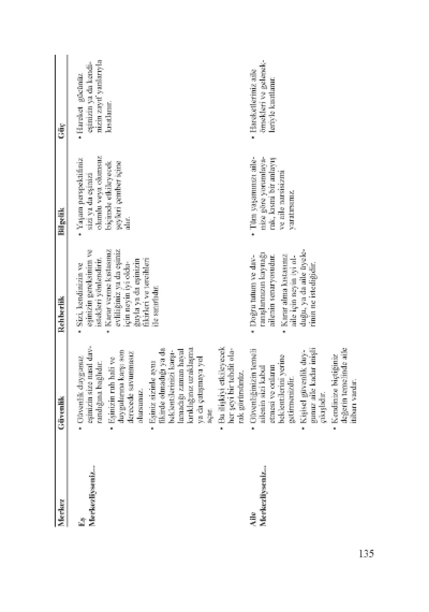
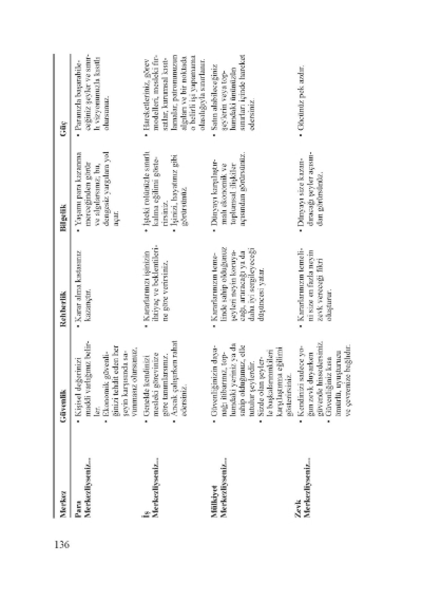
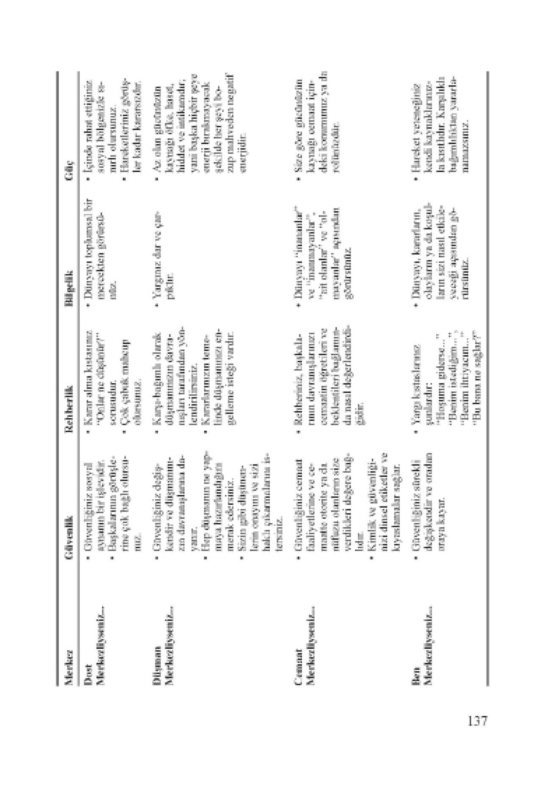
Bir insanın merkezi çoğu zaman bunların ve/veya diğer merkezlerin bir karışımıdır. Çoğu kişi, yaşamında büyük rolü olan çeşitli etkilere maruz kalır. İç ya da dış etkenlere bağlı olarak, belirli bir merkez, temelindeki ihtiyaçlar karşılanıncaya kadar harekete geçirilebilir.
Sonra da bir başka merkez itici güç olur.
Kişi bir merkezden diğerine geçtikçe ortaya çıkan görecelik, yaşam boyu yükselip alçalan bir lunapark treni gibidir. Bir zayıflığı dengelemek için bir başka zayıflıktan güç alır. Ne tutarlı bir yön duygusu vardır, ne sürekli bir bilgelik, ne de sabit bir güç kaynağı veya kişisel, doğuştan gelen bir değer ve kimlik duygusu.
İdeal olan, kuşkusuz, size sürekli olarak yüksek derecede güvenlik, rehberlik, bilgelik ve güç aktaracak tek bir belirgin merkez yaratmaktır.
Bu, proaktivitenizi güçlendirir ve yaşamınızın her açıdan uyumlu ve tutarlı olmasını sağlar.
BİR İLKE MERKEZİ
Hayatımızın merkezini doğru ilkeler üzerine oturtursak, yaşamı destekleyen dört etkenin gelişmesi için sağlam bir temel yaratmış oluruz.
Güvenliğimizi şu bilgi sağlar: İnsanlar ya da nesnelere dayanan ve sık sık, çabucak değişen diğer merkezlerin tersine, doğru ilkeler hiç değişmez. Onlara güvenebiliriz.
İlkeler hiçbir şeye tepki vermezler. Öfkelenip bize farklı bir biçimde davranmazlar. Bizi boşamaz ya da en yakın dostumuzla kaçmazlar.
Amaçları bizi ele geçirmek değildir. Yolumuzu kestirme çözümler ve anlık çarelerle döşeyemezler. Geçerlilikleri, başkalarının davranışlarına, çevreye ya da geçici güncel heveslere bağlı değildir.
İlkeler ölmez. Bugün buradayken yarın yitip gitmezler. Yangın, deprem ya da hırsızlıkla yok edilemezler.
İlkeler derin, temel gerçeklerdir. Klasik gerçeklerdir. İnsanlığın ortak paydasıdır. Yaşamı kusursuz, tutarlı, güzel ve güçlü bir biçimde sımsıkı dokuyan ipliklerdir.
İlkelere aldırmıyormuş gibi görünen insanlar ya da koşullar ortasında bulunsak bile, ilkelerin insanlardan ya da koşullardan büyük olduğunu; tekrar tekrar kazandıkları zaferlere binlerce yıllık tarihin tanıklık ettiğini bilmek bize güven verir. Daha da önemlisi, ilkeleri kendi yaşamımızda, kendi deneyimlerimizle geçerli kılabileceğimizi bilmek içimizi rahatlatır.
Kuşkusuz, her şeyi bilemeyiz. Gerçek doğamızın ve etrafımızdaki dünyanın yeterince farkında olmayışımız kadar, doğru ilkelerle uyum içinde olmayan modaya uygun felsefe ve kuramlar seli de, doğru ilkelere ilişkin bilgi ve anlayışımızı kısıtlar. Bu fikirler bir süreliğine kabul görür, ama kendilerinden öncekiler gibi sahte temeller üzerine kuruldukları için dayanıklı değildirler.
Her şeyimiz sınırlıdır, ama sınırlarımızı genişletebiliriz. Kendi gelişmemizle ilgili ilkeyi anlamamız, ne kadar çok şey öğrenirsek dünyaya bakış açımızı oluşturan merceğin odak noktasını o kadar net bir biçimde ayarlayabileceğimize güvenerek, doğru ilkeleri araştırmamızı sağlar. İlkeler değişmez; onları kavrayışımız değişir.
İlke merkezli yaşama eşlik eden bilgelik ve rehberlik, her şeyin dün ve bugün nasıl olduğunu, ileride nasıl olacağını gösteren doğru haritalardan gelir. Doğru haritalar nereye gitmek istediğimizi ve oraya nasıl ulaşacağımızı açıkça görmemizi sağlar. Kararlarımızı, uygulanmalarını mümkün ve anlamlı kılacak doğru verileri kullanarak verebiliriz.
İlke merkezli yaşamın sağladığı kişisel güç, kendini tanıyan, bilgili, proaktif bireyin gücüdür. Onu başkalarının tutumları, davranışları ve hareketleri ya da başkalarını kısıtlayan koşullar ve çevresel etkiler sınırlayamaz.
Gücün tek gerçek sınırı, ilkelerin kendi doğal sonuçlarıdır. Doğru ilkelere ilişkin bilgimize dayalı olarak, eylemlerimizi seçmekte özgürüz; ama o eylemlerin sonuçlarını seçme özgürlüğüne sahip değiliz.
Unutmayın ki, “Değneği bir ucundan tutup kaldırırsanız, diğer ucunu da kaldırırsınız.”
İlkelerin her zaman kendilerine bağlı doğal sonuçları vardır.
İlkelerle uyum içinde yaşarsak, sonuç olumlu olur. Onları gözardı edersek, olumsuz olur. Ancak söz konusu ilkeler herkes için geçerli olduğundan, farkında olunsa da olunmasa da, bu sınırlama evrenseldir.
Doğru ilkeleri ne kadar iyi öğrenirsek, akıllıca hareket etme konusundaki kişisel özgürlüğümüz de o kadar geniş olur.
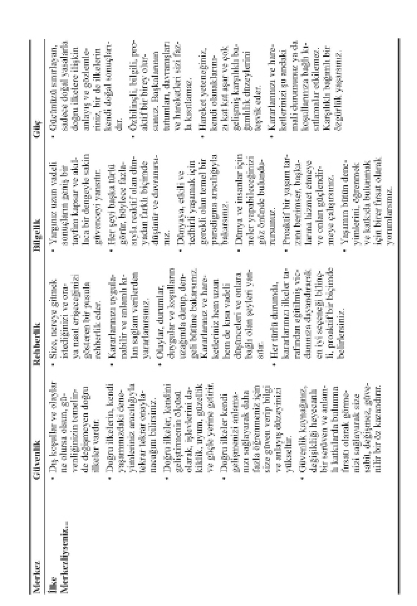
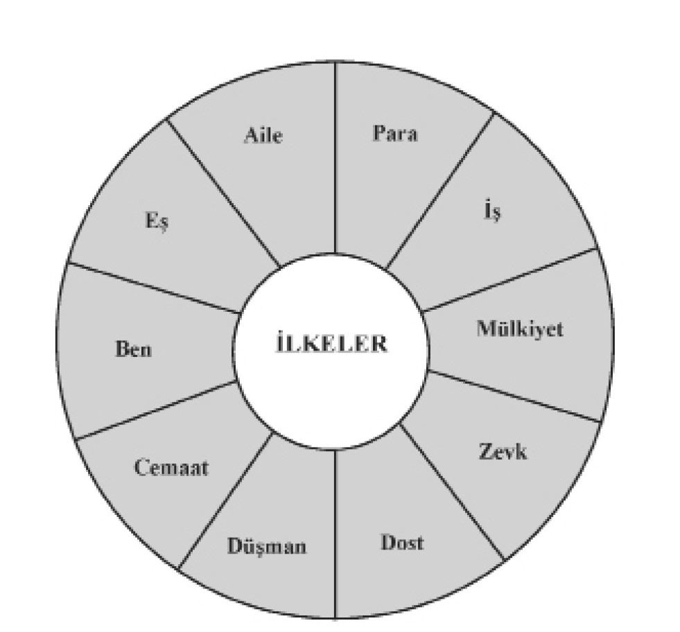
Yaşantımızın merkezine, zaman aşımına uğramayan, değişmeyen ilkeleri yerleştirirsek, etkili hayatın temel paradigmasını yaratmış oluruz. Bu, diğer merkezlerin tümünü perspektife oturtan merkezdir.
Unutmayın, paradigmanız, tutum ve davranışlarınızın kaynağıdır.
Paradigma, gözlüğe benzer. Hayatınızdaki her şeyi görme biçiminizi etkiler. Olaylara doğru ilkeler paradigması aracılığıyla bakarsanız, hayatta gördüğünüz şeyler, değişik merkezli herhangi bir paradigmanın merceğinden gördüklerinizden hayli farklı olur.
Bu kitabın Ek bölümüne ayrıntılı bir cetvel ekledim. Bu, incelediğimiz her merkezin başka şeyleri nasıl etkileyebileceğini gösteriyor1. Ancak merkezin yarattığı değişikliği çabucak anlamanız için, belirli bir sorunun farklı paradigmalardan nasıl görüldüğüne ilişkin tek bir örneğe bakalım. Okurken, her gözlüğü takmaya, farklı merkezlerden kaynaklanan tepkiyi hissetmeye çalışın.
Diyelim ki bu akşam eşinizi bir konsere davet ettiniz. Biletleri de aldınız. Eşiniz konsere gideceği için çok sevinçli. Öğleden sonra saat dört.
Ansızın patronunuz sizi odasına çağırıyor ve yarın saat 9.00’da yapılacak önemli bir toplantıya hazırlanmak için bütün gece kendisine yardım etmeniz gerektiğini söylüyor.
Eğer eş merkezli ya da aile merkezli bir gözlükle bakıyorsanız, aklınız eşinizde olacaktır. Patronunuza kalamayacağınızı söyleyip eşinizi hoşnut etmek için onu konsere götürebilirsiniz. İşinizden olmamak için orada kalmanız gerektiğini düşünebilirsiniz, ama bunu istemeyerek, eşinizin göstereceği tepkiden kaygılanarak, kararınızı haklı göstermeye ve kendinizi onun öfkesine ya da düş kırıklığına karşı korumaya çalışarak yaparsınız.
Eğer para merkezli bir mercekten bakıyorsanız; ilk önce alacağınız fazla mesai ücretini ya da geç vakitlere kadar çalışmanın işyerinde yükselmenizi nasıl etkileyeceğini düşünürsünüz. Eşinizi arayıp, ekonomik gereksinimlerin önceliğini anlayacağını varsayarak ona sadece büroda kalmanız gerektiğini söyleyebilirsiniz.
Eğer iş merkezliyseniz; fırsatları düşünürsünüz. İş konusunda daha fazla bilgi edinebilirsiniz. Patronun gözüne girip kariyerinizde ilerleyebilirsiniz. İstenilenden çok daha fazla çalıştığınız için kendi kendinizi kutlayabilirsiniz. Bunun ne kadar çalışkan olduğunuzu kanıtlayacağına inanırsınız. Karınız sizinle gurur duymalıdır!
Eğer mülkiyet merkezliyseniz; fazla mesai ücretiyle alabileceklerinizi düşünürsünüz. Ya da kaldığınız takdirde bunun bürodaki itibarınız açısından ne büyük bir kaynak olacağını dikkate alabilirsiniz.
Ertesi sabah herkes sizin ne kadar soylu, özverili ve işine bağlı bir insan olduğunuzu öğrenecektir.
(1) Bkz. A Eki.
Eğer zevk merkezliyseniz; geç saatlere kadar çalışmanız karınızı mutlu edecek olsa bile, muhtemelen işi kenara itip konsere gidersiniz.
Geceyi dışarıda geçirmek en doğal hakkınızdır!
Eğer dost merkezliyseniz; kararınız herhalde arkadaşlarınızı da konsere davet edip etmediğinize, ya da işteki arkadaşlarınızın da geç vakitlere kadar çalışıp çalışmayacaklarına bağlı olacaktır.
Eğer düşman merkezliyseniz; büroda kendisini şirketin en değerli elemanı sayan birine karşı büyük bir avantaj sağlayacağınızı bilerek geç saatlere kadar kalabilirsiniz. O dışarıda keyfine bakarken, siz köle gibi çalışıp hem kendi işinizi hem de onunkini yaparak, onun umursamadığı şirket çıkarları uğruna kendi zevkinizi feda edersiniz.
Eğer cemaat merkezliyseniz; cemaatin diğer üyelerinin konsere gidip gitmeyecekleri, bazılarının iş yerinizde çalışıp çalışmadıkları, ya da bunun nasıl bir konser olduğu kararınızı etkileyebilir. Händel’in Mesih’i bir rock konserinden daha öncelikli olabilir. Kararınızı, “iyi bir cemaat üyesi”nin yapacağını düşündüğünüz şeyler, ya da fazla mesaiye “hizmet” veya “maddi zenginlik peşinde olmak” gözüyle bakıp bakmadığınız da etkileyebilir.
Eğer ben merkezliyseniz; dikkatinizi size en fazla çıkar sağlayacak şeye verirsiniz. Bu akşamı dışarıda geçirmek mi daha iyi olur?
Yoksa patronun gözüne girmek mi? Değişik seçeneklerin sizi nasıl etkileyeceğiyle ilgilenirsiniz.
Tek bir olaya bakmanın farklı yollarını incelerken, birbirimizle etkileşimlerimizde “genç hanım/yaşlı hanım” benzeri algılama sorunlarıyla karşılaşmamıza şaşmamak gerekir. Merkezlerimizin bizi temelde nasıl etkilediklerini görebiliyor musunuz? Motivasyonlarımızın, günlük kararlarımızın, eylemlerimizin (hatta çoğu kez tepkilerimizin), olaylar hakkındaki yorumlarımızın bunlara bağlı olduğunu görebiliyor musunuz? Kendi merkezinizi anlamanız işte bu yüzden çok önemlidir. Ve bu merkez size proaktif bir kişi olarak güç katmıyorsa, bunu yapacak bir merkez yaratmak için gerekli paradigma değişikliğini yapmanız, etkililiğinizin temeli olacaktır.
İlke merkezli bir kişi olarak, durumun yarattığı duygulardan ve sizi etkileyecek diğer faktörlerden uzak durmaya çalışırsınız. Seçenekleri değerlendirirsiniz. Dengeli bütüne –iş ihtiyaçları, aile ihtiyaçları, işin içine girebilecek diğer tüm ihtiyaçlar ve değişik kararların olası sonuçları– bakarak ve tüm etkenleri hesaba katarak, en iyi çözümü bulmaya çalışırsınız.
Konsere gitmeniz ya da iş yerinde kalıp çalışmanız, etkili bir kararın küçük bir parçasıdır aslında. Aynı seçimi diğer merkezlerden birkaçıyla da yapabilirsiniz. Ancak ilke merkezli paradigmadan hareket ediyorsanız, arada çok önemli bazı farklar vardır.
Birincisi, başka insanların ya da koşulların etkisi altında kalmazsınız.
En iyi seçenek olduğuna karar verdiğiniz şeyi proaktif bir biçimde seçersiniz. Kararınızı bilinçli olarak ve bilginize dayanarak verirsiniz.
İkincisi, kararınızın en etkili seçenek olduğunu bilirsiniz; çünkü uzun vadede tahmin edilebilir sonuçları olan ilkelere dayalıdır.
Üçüncüsü, yapmayı seçtiğiniz şey hayattaki nihai değerlerinize katkıda bulunur. İşyerinde birini geçebilmek amacıyla geç saatlere kadar çalışmakla, patronunuzun etkililiğine değer verdiğiniz ve şirketin geleceğine gerçekten katkıda bulunmak istediğiniz için fazla mesai yapmak, birbirinden tümüyle farklıdır. Kararlarınızı uygularken edindiğiniz deneyimler, bir bütün olarak yaşamınıza nitelik ve anlam kazanır.
Dördüncüsü, karşılıklı bağımlı ilişkilerinizde yarattığınız güçlü ağ içinde eşiniz ve patronunuzla iletişim kurabilirsiniz. Bağımsız olduğunuz için, etkili bir biçimde karşılıklı bağımlı olabilirsiniz.
Başkalarına devredilebilecek görevleri bırakmaya karar verip, geride kalanları yapmak üzere ertesi sabah erkenden işyerine gelebilirsiniz.
Son olarak da, kararınız sizi rahatsız etmez. Yapmayı seçtiğiniz şey her ne ise, ona odaklanıp tadını çıkarabilirsiniz.
İlke merkezli bir kişi olarak her şeyi farklı bir biçimde görürsünüz.
Her şeyi farklı biçimde gördüğünüz için de farklı düşünür, farklı davranırsınız. Değişmeyen, sağlam bir özden kaynaklanan yüksek düzeyde güvenlik, rehberlik, bilgelik ve gücünüz sayesinde çok proaktif ve etkili bir yaşamın temeline sahip olursunuz.
KİŞİSEL MİSYON BİLDİRGESİNİN YAZIM VE KULLANIMI
İçimizin derinliklerine inerek temel paradigmalarımızı anlayıp, onları doğru ilkelerle uyum sağlayacak biçimde yeniden hizaya getirirken, hem etkili, güç verici bir merkez, hem de dünyayı görebileceğimiz berrak bir mercek yaratırız. Daha sonra bu mercek aracılığıyla, benzersiz bireyler olarak dünyayla nasıl iletişim kurduğumuza bakabiliriz.
Frankl, hayattaki misyonlarımızı icat etmekten çok, keşfettiğimizi söyler. Seçtiği bu sözler hoşuma gidiyor. Bence hepimizin içinde bir monitör ya da duyu, bir vicdan var. Bu, kendi benzersizliğimizin ve yapabileceğimiz eşsiz katkıların farkına varmamızı sağlıyor.
Frankl’in ifadesiyle, “Herkesin hayatta kendine özgü bir görevi ya da misyonu vardır. (...) Bu nedenle, kişinin ne yeri doldurulabilir, ne de yaşamı tekrarlanabilir. Kısacası herkesin görevi, onu yerine getirmek için eline geçen özgül fırsatlar kadar benzersizdir.”
Bu benzersizliği sözle ifade etmeye çalışırken, bize yine proaktivitenin ve Etki Alanımız içinde çalışmanın temel önemi hatırlatılıyor.
Hayatımızın soyut anlamını İlgi Alanımızın dışında aramak, proaktif sorumluluğumuzdan vazgeçmek, ilk yaratımımızı koşulların ve başka insanların eline teslim etmek demektir.
Anlamımız içimizden gelir. Yine Frankl’in ifadesiyle, “Sonuç olarak insan, hayatının ne anlama geldiğini sormak yerine, o sorunun kendisine sorulduğunu anlamalıdır. Kısacası, her insan hayat tarafından sorgulanır ve hayata yanıtını ancak kendi hayatı adına verebilir; hayata ancak sorumluluğunu kabul ederek karşılık verebilir.”
Kişisel sorumluluk ya da proaktivite, ilk yaratımın temelini oluşturur.
Yine bilgisayar benzetmesine dönecek olursak, 1. Alışkanlık, “Sen programlayıcısın,” der. Bunun üzerine 2. Alışkanlık şöyle söyler:
“Programı yaz.” Sorumlu ya da programcı olduğunuz fikrini kabul edinceye kadar, programın yazılmasına gerçek anlamda yatırım yapmazsınız.
Proaktif insanlar olarak, hayatımızda ne olmak ve ne yapmak istediğimizi ifade etmeye başlayabiliriz. Kişisel bir misyon bildirgesi, kişisel bir anayasa yazabiliriz.
Misyon bildirgesi, bir gecede yazacağınız bir şey değildir. İçinize derinlemesine bir bakış, dikkatli bir analiz ve düşünceli bir ifade ister. Çoğu zaman, bildirge son şeklini alıncaya kadar tekrar tekrar yazılması gerekir. Tam istediğiniz gibi oluncaya kadar, yani en derin değer ve yönelimlerinizin eksiksiz ve kesin bir ifadesi olduğunu hissedinceye kadar birkaç hafta, hatta aylar geçebilir. Yine de, yıllar içinde değişik koşullar ortaya çıktıkça ve yeni içgörüler edindikçe, onu düzenli bir biçimde gözden geçirmek ve ufak tefek değişiklikler yapmak isteyeceksiniz.
Ama temelde, misyon bildirgeniz kendi anayasanız, vizyon ve değerlerinizin sağlam bir ifadesi olur. Yaşamınızdaki her şeyi ölçmek için başvurduğunuz kıstas haline gelir.
Geçenlerde kendi misyon bildirgemi yeniden gözden geçirdim.
Bunu sık sık yaparım. Bisikletle gittiğim bir kıyıda yalnız başıma otururken anayasamı çıkardım ve çekidüzen verdim. Bu iş birkaç saatimi aldı, ama bir açıklık, düzen ve bağlılık duygusu, bir coşku ve özgürlük hissettim.
Bence bu süreç, ürün kadar önemlidir. Bir misyon bildirgesi yazmak ya da onu gözden geçirmek sizi değiştirir; çünkü sizi önceliklerinizi derinlemesine ve dikkatlice düşünmeye ve davranışlarınızı inançlarınızla uyumlu hale getirmeye zorlar. Siz bunu yaparken, başkaları da, yaşadığınız şeyler tarafından yönlendirilmediğinizi sezmeye başlar. Yapmaya çalıştığınız iş hakkında bir misyon duygunuz olur ve bu da size heyecan verir.
BEYNİNİZİN TAMAMINI KULLANMAK
Özbilincimiz, kendi düşüncelerimizi incelememiz için bize güç verir. Kişisel bir misyon bildirgesinin yaratılmasına özellikle yardımcı olur, çünkü 2. Alışkanlığı uygulamamızı sağlayan, insanlara özgü o iki eşsiz yeti –hayal gücü ve vicdan– gerçekte beynin sağ ya nının işlevleridir. Bu sağ beyin kapasitesinden nasıl yaralanacağımızı anlamak, ilk yaratım yeteneğimizi büyük ölçüde artırır.
“Beyin egemenliği” kuramı diye bilinen konu üzerinde onyıllarca araştırma yapıldı. Bulgular, esas olarak beynin her bir yarıküresinin
–sol ve sağ– farklı işlevlerde uzmanlaşma ve o işlevlere gözcülük etme eğilimi gösterdiğini, farklı türden bilgileri işlemden geçirdiğini ve farklı türden sorunlarla ilgilendiğini gösteriyor.
Temelde, sol yarıküre daha mantıksal/sözel; sağ yarıküre ise daha sezgisel, yaratıcı olandır. Sol yarıküre sözcüklerle ilgilenir, sağ ise resimlerle. Sol, parçalar ve özelliklerle uğraşır; sağ, bütünler ve parçalar arasındaki ilişkilerle. Sol, analizle, yani parçalara ayırmakla ilgilenir; sağ, sentezle, yani parçaları bir araya getirmekle. Sol, ardışık düşünmeyle ilgilenir; sağ, eşzamanlı ve bütüncül düşünmeyle.
Sol zamana bağlıdır; sağ zamandan bağımsızdır.
İnsanlar beynin her iki yanını da kullanırlar. Ancak genellikle her bireyde sağ ya da sol yan ağır basar. Kuşkusuz ideal olan, her iki yan arasında sağlam bir köprü kurma yeteneğini beslemek ve geliştirmektir.
Böylece önce durumun neyi gerektirdiği sezilir, sonra da onunla başa çıkmak için uygun araç kullanılır. Ancak insanlar baskın yarıkürenin “rahatlık bölgesi”nde kalıp her durumu sağ ya da sol beyin tercihine göre işlemden geçirme eğilimi gösterirler.
Abraham Maslow’un dediği gibi: “Çekiç kullanmayı iyi bilen biri, her şeyin bir çivi olduğunu düşünme eğilimindedir.” Bu da “Genç hanım/yaşlı hanım” algısındaki farkı belirleyen bir diğer etkendir.
Sağ beynini kullanan insanlarla sol beynini kullananlar, her şeye farklı bir biçimde bakma eğilimi gösterirler.
Biz, aslında sol beynin egemen olduğu bir dünyada yaşıyoruz.
Burada sözcüklere, ölçülere ve mantığa büyük değer veriliyor. Doğamızın daha yaratıcı, sezgisel ve sanatsal yanı ise çoğu zaman ikinci plana itiliyor. Birçoğumuz, sağ beynin kapasitesinden yararlanmakta daha fazla zorlanıyor.
Kabul etmek gerekir ki bu, fazlasıyla basitleştirilmiş bir tanımlamadır ve yeni çalışmalar kuşkusuz beynin işleyişini daha iyi aydınlatacaktır.
Ancak burada önemli olan, çok farklı türden düşünce işlemlerini yapma yeteneğine sahip olduğumuz halde potansiyelimizi neredeyse hiç kullanmamamızdır. Değişik kapasitelerinin farkına varırken, zihnimizi bilinçli olarak belirli gereksinimleri daha etkili biçimde karşılamak için kullanabiliriz.
SAĞ BEYİNDEN YARARLANMANIN İKİ YOLU
Beyin egemenliği kuramını bir model olarak kullanırsak, ilk yaratımızın niteliğinin sağ beynimizin yaratıcılığını kullanma yeteneğimizden büyük ölçüde etkileneceği açıklık kazanır. Sağ beyin kapasitemizden ne kadar yararlanırsak; hayal etme, sentez yapma, zamanı ve mevcut koşulları aşma, ne olmak ve ne yapmak istediğimizle ilgili bütüncül bir resim yaratma gücümüz de o kadar artacaktır.
Bakış Açısını Genişletmek
Bazen beklenmedik bir deneyim yüzünden sol beyin çevremizden ve düşünce kalıplarından fırlayıp sağ beyne geçeriz. Sevilen birinin ölümü, ciddi bir hastalık, mali bir sıkıntı ya da aşırı bir rekabet, geriye çekilerek yaşantımıza bakıp kendimize “Aslında önemli olan nedir? Yapmakta olduğum işi neden yapıyorum?” türünden çetin sorular sormamıza neden olabilir.
Ama proaktifseniz, bakış açınızı genişletecek deneyimleri yaratmak için koşulları ya da başkalarını beklemenize gerek kalmaz. Onları bilinçli bir biçimde kendiniz yaratabilirsiniz.
Bunu yapmanın birkaç yolu vardır. Hayal gücünüzün yardımıyla, bu bölümün başında yaptığımız gibi kendi cenaze töreninizi gözünüzün önünde canlandırabilirsiniz. “Merhumu nasıl tanırdınız?” sorusunun yanıtını yazabilirsiniz. Gerçekten oturup yazın. Hem de ayrıntılı olarak.
Yirmi beşinci, sonra da ellinci evlilik yıldönümünüzü gözünüzün önüne getirebilirsiniz. Eşinizin bunu sizinle birlikte yapmasını sağlayın.
Bu kadar yıl boyunca günbegün yaptığınız yatırımlar yoluyla yaratmak istediğiniz aile ilişkilerinin özünü yakalamaya çalışın.
Şimdiki işinizden emekliye ayrılışınızı da gözünüzün önüne getirebilirsiniz.
Kendi alanınızda ne tür başarılara erişmek, ne tür katkılarda bulunmak isterdiniz? Emeklilik sonrası için planlarınız neler olacak? İkinci bir meslek mi edineceksiniz?
Düşüncenizi genişletin. Bütün ayrıntıları gözünüzün önüne getirin.
Onlara olabildiğince duygu ve heyecan katın. Duyularınızdan da olabildiğince yararlanın.
Üniversitede ders verirken, bazı sınıflarda buna benzer göz önünde canlandırma alıştırmaları yapardım. “Yaşam sürenizin bu yarı yılla kısıtlı olduğunu varsayın,” derdim öğrencilerime, “ve bu yarı yıl boyunca iyi bir öğrenci olarak okulda kalacaksınız. Şimdi bu süreyi nasıl geçireceğinizi hayal edin!”
Bu durumda her şeye bakış açısı birdenbire değişir. Daha önce fark edilemeyen bazı değerler yüzeye çıkar.
Öğrencilerimden ayrıca, bir hafta boyunca bu genişlemiş bakış açısıyla yaşamalarını ve bir günlük tutarak deneyimlerini yazmalarını da isterdim.
Sonuçlar çok şeyi açığa çıkarır. Öğrenciler anne-babalarına mektup yazmaya ve onları ne kadar sevdiklerini ve takdir ettiklerini açıklamaya başlarlar. Aralarının bozuk olduğu bir erkek ya da kız kardeşle, bir arkadaşla barışırlar.
Faaliyetlerine egemen olan ana unsur, temeldeki ilke, sevgidir.
Yaşanacak pek az bir süreleri kaldığını düşündüklerinde, dedikodunun, kötü düşüncelerin, aşağılamaların ve suçlamaların yararsızlığı ortaya çıkar. İlkeler ve değerler herkesin gözünde daha fazla açıklık kazanır.
Değerlerinizle bağlantı kurmak için hayal gücünüzü kullanmanın bazı teknikleri vardır. Ancak kullandığımız her tekniğin net etkisi aynıdır. İnsanlar hayatlarında kendileri için en önemli şeyin ne olduğunu, ne yapmayı ve nasıl olmayı istediklerini ciddi bir biçimde belirlemeye karar verdikleri zaman çok saygılı olurlar. Bugün ve yarını aşacak çapta düşünmeye başlarlar.
Göz Önünde Canlandırma ve Onaylama
Kişisel liderlik tekil bir deneyim değildir. Kişisel bir misyon bildirgesi yazmakla başlayıp bitmez. Aslında bu, vizyonunuzu ve değerlerinizi göz önüne alıp hayatınızı bu en önemli şeylerle uyumlu olacak şekilde düzenleme sürecidir. Kişisel misyon bildirgenizi yaşantınıza katmaya çalışırken harcadığınız çabada, güçlü sağ beyin kapasiteniz size her gün büyük ölçüde yardımcı olabilir. Bu, “sonunu düşünerek işe başlama”nın bir başka uygulamasıdır.
Daha önce sözünü ettiğimiz örneğe geri dönelim: Diyelim ki ben, çocuklarını gerçekten çok seven bir babayım. Yine diyelim ki, kişisel misyon bildirgemde bunu temel değerlerimden biri olarak belirtiyorum. Ancak günlük yaşantımda aşırı tepki gösterdiğim için başım dertte.
Bu durumda sağ beynimin göz önünde canlandırma yeteneğinden yararlanarak, günlük yaşantımda daha derin değerlerimle daha uyumlu olmama yardım edecek bir “onaylama” yazabilirim.
İyi bir onaylamanın beş temel özelliği vardır. Kişiseldir, pozitiftir, şimdiki zamanlıdır, görseldir ve duygusaldır. Bu nedenle şöyle bir şey yazabilirim: “Çocuklarım yaramazlık yaptıklarında onlara bilgece, sevgiyle, kararlı bir biçimde ve özdenetimle (olumlu) tepki veriyorum (şimdiki zaman), bu beni (kişisel) çok tatmin ediyor
(duygusal).”
Sonra bunu hayalimde canlandırabilirim. Her gün birkaç dakika harcayarak, zihnimi ve bedenimi tam anlamıyla gevşetebilirim. Çocuklarımın yaramazlık edebilecekleri durumları düşünebilirim. Bütün bunları en ince ayrıntılarına kadar hayal ederim. Üzerinde oturduğum koltuğun dokusunu, ayaklarımın altındaki zemini, sırtımdaki kazağı hissederim. Kızımın üzerindeki giysiyi ve yüzündeki ifadeyi görebilirim. Ayrıntıları ne kadar aydınlık ve canlı olarak hayal edersem, olayı da o kadar derinden hissederim. Böylece ona bir seyirci gibi bakmaktan kurtulurum.
Sonra kızımın, genelde kalbimin hızla çarpmasına ve tepemin atmasına yol açan belirli bir şeyi yaptığını görebilirim. Ama normal tepkimi görmek yerine, duruma, onaylayıcı ifademde yakaladığım bütün o sevgi, güç ve özdenetimle karşılık verdiğimi görebilirim.
Programı, senaryoyu, değerlerimle, kişisel misyonumla uyum sağlayacak bir biçimde yazabilirim.
Ve bunu yaparsam, davranışlarım günden güne değişir. Annemle babam, toplum, soyaçekim ya da çevrem tarafından bana aktarılan senaryo yerine, seçimi bana ait olan değerler sistemine göre yazmış olduğum senaryoyu yaşarım.
Oğlum Sean’a, bu onaylama sürecini futbol yaşamında kapsamlı olarak kullanması için yardım edip ona cesaret verdim. Buna lise takımında oyun kurucusu olduğu sırada başladık ve sonunda, bu işi kendi kendine nasıl yapacağını öğrettim.
İçten içe sakinleşmesi için, derin nefes alıp verme ve kas gevşetme tekniğiyle zihninin iyice rahatlamasını sağlamaya çalışıyorduk.
Sonra da aklına gelebilecek en berbat durumlarla baş başa kaldığını gözünde canlandırmasına yardımcı oluyordum.
Sean, hayalinde hızla üzerine doğru gelen bir saldırı canlandırıyordu.
Bu yıldırım gibi saldırıyı yorumlayıp karşılık vermesi gerekiyordu. Savunma taktiğini oluşturduktan sonra yanındakilere talimat verdiğini hayal ediyordu. Pas atacağı birinci, ikinci, üçüncü oyuncularla çabucak anlaştığını getiriyordu aklına. Normalde göz önüne getirmeyeceği seçenekleri hayalinde canlandırıyordu.
Futbol yaşamının bir noktasında, sürekli gerginleştiğini söyledi bana. Aramızda konuşurken, onun gerginliği hayal ettiğini fark ettim.
Bu nedenle aşırı baskı altında olduğu bir anda gevşemeyi hayalinde canlandırması üzerinde çalıştık. Göz önünde canlandırmanın doğasının çok önemli olduğunu keşfettik. Gözünüzde yanlış şeyi canlandırırsanız yanlış sonuca yol açarsınız.
Dr. Charles Garfield hem spor ve hem de iş alanında yüksek performans gösteren insanlar üzerinde kapsamlı araştırmalar yaptı.
NASA programındaki çalışmalarında doruk performans çok ilgisini çekmiş, astronotların uzaya çıkmadan önce her şeyi bir simulasyon ortamında tekrar tekrar prova etmelerini seyretmişti. Matematik dalında bir doktora sahibi olmasına karşın, okula dönüp psikoloji alanında da doktora yapmaya ve doruk performans gösteren kişilerin niteliklerini incelemeye karar verdi.
Dr. Garfield’in araştırmalarının ortaya çıkardığı temel olgulardan biri de şuydu: Dünya çapındaki atletler ve doruk performans gösteren diğer kişiler, olayları gözlerinin önünde canlandırabiliyorlardı.
Olayı önce görüyor, hissediyor, yaşıyor, sonra da gerçekleştiriyorlardı.
Sonunu düşünerek işe başlıyorlardı.
Bunu yaşamınızın her alanında yapabilirsiniz. Bir performans, bir ürün tanıtımı, zor bir karşılaşma ya da günlük bir hedefe varma mücadelesinden önce olayı açıkça, canlı bir biçimde, amansızca, tekrar tekrar görün. İçinizde bir “rahatlık bölgesi” yaratın. Bunun ardından içine girdiğiniz durum size yabancı gelmeyecek, sizi korkutmayacaktır.
Yaratıcı ve görsel olan sağ beyniniz, hem kişisel misyon bildirgenizi oluşturmanız, hem de onu yaşamınızla bütünleştirmeniz açısından, en önemli kaynaklarınızdan biridir.
Göz önünde canlandırma ve onaylama süreciyle ilgili pek çok kitap, kaset ve video bandı var. Bu alandaki daha yakın tarihli gelişmeler arasında, bilinçdışı algılama programlaması, nörolinguistik programlama (NLP), gevşeme ve kendi kendine konuşma süreçlerinin yeni biçimleri yer alıyor. Bütün bunlar ilk yaratımın temel ilkelerinin açıklanmasını, inceden inceye işlenmesini ve farklı bir biçimde bir araya getirilmesini içeriyor.
Başarı edebiyatını gözden geçirirken bu konuda yüzlerce kitap taradım. Bunlardan bazıları abartılı iddialarda bulunuyor ve bilimsel kanıtlardan çok, yaşanmış olaylara dayanıyordu. Ama bence malzemenin büyük bir kısmı temelde sağlamdı. Çoğunluğun ilk kaynağının ise, pek çok kişi tarafından incelenen Kutsal Kitap olduğu anlaşılıyor.
Etkili liderlikte, göz önünde canlandırma ve onaylama teknikleri, kişinin yaşam merkezi halini alan, inceden inceye düşünülmüş amaç ve ilkeler temelinden doğal bir biçimde ortaya çıkar. Bunlar yeniden senaryo yazımı ve yeniden programlamada, derinden bağlanılan amaç ve ilkelerin insanın zihnine ve yüreğine yazılmasında çok etkilidir. Bence toplumda kalıcı olan tüm dinlerin merkezinde, farklı bir dille anlatılan aynı ilkeler ve uygulamalar bulunuyor: Meditasyon, dua, ahitler, kurallar, kutsal kitapların incelenmesi, anlayış, merhamet ve hem vicdanın hem de hayal gücünün çok değişik biçimlerde kullanılması.
Ancak bu teknikler Kişilik Etiği’nin bir parçası halini alıp karakter ve ilkelerden oluşan bir temelden koparılırsa, başka merkezlere, öncelikle de ben merkezine hizmet edecek şekilde yanlış ve kötü kullanılabilir.
Onaylama ve göz önünde canlandırma, programlama şekilleridir.
Biz de temel merkezimizle uyum içinde olmayan ya da para kazanma, kendi çıkarını düşünme veya doğru ilkeler dışındaki bir merkezden kaynaklanan herhangi bir programlamaya teslim olmamaya dikkat etmeliyiz.
Hayal gücü, maddi kazanca ya da “bundan benim çıkarım ne” gibi sorulara odaklanıldığında ortaya çıkan geçici başarıya ulaşmak için de kullanılabilir. Ama bence hayal gücünün daha üstün kullanımı, kendini aşıp biricik amaca ve karşılıklı bağımlı gerçekliğe hükmeden ilkelere dayalı, katkı dolu bir yaşam yaratmak için vicdanın kullanılmasıyla uyumludur.
ROLLERİ VE HEDEFLERİ TANIMLAMAK
Kuşkusuz, sağ beyninizdeki imgeleri, duyguları ve resimleri bir misyon bildirgesindeki sözcüklerde yakalamaya çalıştığınız sırada, mantıksal/sözel sol beyin de önem kazanır. Tıpkı soluma alıştırmalarının bedenle zihnin bütünleşmesine yardımcı olması gibi, yazmak da bilinçle bilinçaltının birleşip bütünleşmesine yardımcı olan bir tür ruhsal-sinirsel kas etkinliğidir. Yazmak düşünceyi damıtır, berraklaştırır ve netleştirir. Bütünün parçalara ayrılmasını sağlar.
Hepimiz yaşamımızda bir sürü rol üstleniriz; değişik alanların ve yeteneklerin sorumluluğunu alırız. Örneğin, birey, koca, baba, öğretmen, dini cemaat üyesi ve iş adamı rollerini üstelenebilirim ve bu rollerin her biri benim için önemlidir.
İnsanlar hayatta daha etkili olmaya çalışırken ortaya çıkan en büyük sorunlardan biri, yeterince geniş kapsamlı düşünmemeleridir.
Etkili bir yaşam sürmek için gerekli olan orantı, denge ve doğal ekoloji kavramlarını kaybederler. İşe dalıp kendi sağlıklarını ihmal edebilirler. Mesleki başarı uğruna yaşamlarındaki en değerli ilişkiyi ihmal edebilirler.
Misyon bildirgenizi yaşamınızdaki belirli rol alanlarına ve her alanda erişmek istediğiniz hedeflere ayırırsanız, daha dengeli ve daha kolay uygulanır hale geldiğini görebilirsiniz. Meslek yaşamınızdaki rolünüze bakın. Satışta, yönetimde ya da ürün geliştirme bölümünde görevli olabilirsiniz. O alanda ne yapıyorsunuz? Size rehberlik etmesi gereken değerler hangileri? Eş, baba, anne, komşu, dost olarak kişisel rollerinizi düşünün. Bu rollerde ne yapıyorsunuz?
Sizin için önemli olan nedir? Siyaset alanı, kamu hizmeti, gönüllü olarak çalıştığınız kurumlar gibi, toplum içindeki rollerinizi düşünün.
Bir yönetici, roller ve hedefler fikrini kullanarak aşağıdaki misyon bildirgesini yaratmıştı:
Benim misyonum, dürüstçe yaşamak ve başkalarının yaşamında bir fark yaratmaktır.
Bu misyonu yerine getirmek için:
Merhametliyim: Bir insanı –her insanı– konumuna aldırış etmeksizin arar ve severim.
Özveriliyim: Zamanımı, yeteneklerimi ve kaynaklarımı misyonuma adarım.
İlham veririm: Hepimizin bizi seven Tanrı’nın çocukları olduğumuzu ve her devin yenilebileceğini örnek oluşturarak öğretirim.
Etkinim: Yaptıklarım başkalarının yaşamlarında bir fark yaratır.
Misyonumu yerine getirirken şu rollere öncelik tanırım:
Koca: Eşim yaşamımdaki en önemli insandır. Yaşamımıza uyum, çalışkanlık, merhamet ve tutumluluğun meyvelerini birlikte katarız.
Baba: Çocuklarıma, yaşamdan gitgide daha fazla zevk almaları için yardım ederim.
Oğul/Kardeş: Destek ve sevgimle her zaman “burada”yım.
Dindar: Tanrı, sözlerime sadık kalacağımı ve diğer çocuklarına yardım edeceğimi bilir.
Komşu: Tanrı sevgisi, başkalarına karşı davranışlarımda belirgindir.
Değişim Aracı: Büyük kurumlarda yüksek performansın geliştirilmesi için katalizörlük yaparım.
Öğrenci: Her gün yeni önemli şeyler öğrenirim.
Misyonunuzu yaşamınızdaki önemli rolleri göz önünde bulundurarak yazmanız, dengeli ve uyumlu olmanızı sağlar. Rollerinizi teker teker belirginleştirir. Bunları sık sık gözden geçirebilirsiniz.
Böylece kendinizi bir role kaptırıp yaşamınızda aynı derecede, hatta daha da önemli olanları unutmazsınız.
Çeşitli rollerinizi tanımladıktan sonra, her bir rolle erişmek istediğiniz uzun vadeli hedefleri düşünebilirsiniz. Yine sağ beyindeyiz; hayal gücü, yaratıcılık, vicdan ve ilhamdan yararlanıyoruz. Bu hedefler doğru ilkelere dayanan bir misyon bildirgesinin uzantısıysa, insanların normalde belirledikleri hedeflerden alabildiğine farklı olacaklardır. Doğru ilkelerle, doğal yasalarla uyumlu olmaları, onlara ulaşma gücünüzü artıracaktır. Bunlar, tarafınızca benimsenen başkalarına ait hedefler değildir. Kendi hedeflerinizdir. En derin değerlerinizi, benzersiz yeteneğinizi, misyon anlayışınızı yansıtırlar.
Yaşamınız için seçmiş olduğunuz rollerden doğarlar.
Etkili bir hedefin odak noktası faaliyet değil, öncelikle sonuçlardır.
Nerede olmak istediğinizi tanımlar ve süreç içinde bulunduğunuz yeri belirlemenize yardım eder. Oraya nasıl varacağınız konusunda size önemli bilgiler verir ve vardığınızda, bunu size bildirir.
Çabalarınızla enerjinizi birleştirir. Bütün yaptıklarınıza amaç ve anlam kazandırır. Sonuçta da kendini günlük etkinliklere aktarabilir.
Böylece proaktif olursunuz. Yaşamınızın sorumluluğunu üstlenirsiniz.
Her gün, kişisel misyon bildirgenize uymanızı sağlayacak şeylerin gerçekleşmesini sağlarsınız.
Roller ve hedefler, kişisel misyonunuzu yapılandırıp düzenli bir biçimde yönlendirir. Henüz kişisel bir misyon bildirgeniz yoksa, burası başlamak için iyi bir noktadır. Yalnızca yaşamınızın çeşitli alanlarını ve ilerlemek için her alanda ulaşmayı gerekli gördüğünüz iki ya da üç önemli sonucu tanımlamanız bile, yaşantınızla ilgili genel bir bakış açısı ve bir yön duygusu edinmenizi sağlar.
3. Alışkanlığa geçerken, kısa vadeli hedefler alanını daha derinlemesine inceleyeceğiz. Bu noktada önemli olan uygulama, rolleri ve uzun vadeli hedefleri kişisel misyon bildirgeniz açısından tanımlamaktır.
Bu rollerle hedefler, 3. Alışkanlığa, yani yaşam ve zamanın günü gününe yönetimi konusuna geldiğimizde, etkili bir biçimde hedef saptayıp ulaşmanın temelini oluşturacaklardır.
AİLENİN MİSYON BİLDİRGESİ
2. Alışkanlık ilkeye dayandığı için, uygulama alanı geniştir. Bireylerin yanı sıra aileler, her türlü hizmet grupları ve kurumlar, sonunu düşünerek işe başladıklarında çok daha etkili olurlar.
Pek çok aile sağlam ilkelerle değil; krizler, değişken ruh halleri, çabuk çözümler ve anlık doyumlarla yönetilir. Stres ve baskı arttığı zaman belirtiler yüzeye çıkar: İnsanlar kuşkulu, eleştirel olur; ya sessizleşir ya da bağırarak aşırı tepki gösterirler. Bu tür davranışları gören çocuklar da, sorunları çözmenin tek yolunun savaşmak ya da kaçmak olduğunu düşünerek büyürler.
Her ailenin çekirdeği, her zaman var olan, paylaşılan vizyon ve değerlerdir. Ailenin misyon bildirgesini yazmakla, gerçek dayanağını açıklamış olursunuz.
Bu misyon bildirgesi ailenizin anayasası, standartı, değerlendirme ve karar verme kıstası olur. Aileye hem yön verir, hem de birlik ve süreklilik sağlar. Bireysel değerler ailenin değerleriyle uyumlu olduğu zaman, üyeler derinden hissedilen ortak amaçlar için birlikte çalışırlar.
Burada da süreç ürün kadar önemlidir. Bir misyon bildirgesini yazma ve arıtma süreci, aileyi geliştirmenin başlıca yollarından biri haline gelir. Bir misyon bildirgesi yaratmak için birlikte çalışmak, onu yaşamak için gerekli olan ÜY’yi (üretme yeteneğini) oluşturur.
Ailenin bütün üyelerinden teker teker bilgi alarak, bildirgenin taslağını hazırlayarak, geribildirim alarak, yazılanları gözden geçirerek ve değişik aile üyelerinin ifadelerini kullanarak, gerçekten önemli konularda ailenin konuşup iletişim kurmasını sağlarsınız. En iyi misyon bildirgeleri, aile üyelerinin karşılıklı saygıyla bir araya gelerek farklı görüşlerini dile getirmelerinin ve herhangi bir bireyin tek başına yapabileceğinden daha büyük bir şey yaratmak için birlikte çalışmalarının sonucunda ortaya çıkanlardır. Bakış açısını genişletmek, vurgusunu ya da yönünü değiştirmek, eklemeler yapmak ya da zamanın aşındırdığı sözcüklere yeni anlamlar katmak için bildirgenin arada bir gözden geçirilmesi, ailenin ortak değer ve amaçlarda birleşmesini sağlar.
Misyon bildirgesi, düşünmek, aileyi yönetmek için bir iskelet oluşturur. Sorunlar ve krizler baş gösterdiğinde, aile üyelerine en önemli şeyleri hatırlatacak ve doğru ilkelere dayalı kararlar verilip sorunların çözülmesi için yön gösterecek anayasa hazırdır artık.
Bizim evde, misyon bildirgesi oturma odasının duvarında asılıdır; böylece ona her gün bakıp kendimize çekidüzen veririz.
Evimizde düzen, sorumlu bağımsızlık, işbirliği, yardımseverlik, gereksinimleri karşılama, yetenekleri geliştirme, birbirimizin yetenekleriyle ilgilenme ve başkalarına hizmet etmenin vurgulandığı, sevgiyi yansıtan cümleleri okuduğumuz zaman, bir aile olarak bizim için en önemli konulardaki başarı düzeyimizi ölçeceğimiz bir kıstasımız olur.
Ailemizin hedef ve etkinliklerini planlarken, “Bu ilkelerin ışığında hangi hedeflerin üzerinde çalışacağız? Hedeflerimize ulaşmak ve bu değerleri hayata geçirmek için hangi eylem planlarını benimseyeceğiz?” deriz.
Bildirgeyi sık sık gözden geçiririz. Yılda iki kez, eylül ve haziranda
–okullar açılırken ve kapanırken– durumu olduğu gibi yansıtmak, geliştirmek ve güçlendirmek için, hedeflerin ve yapılacak işlerin üzerinde çalışırız. Bu bizi yeniler, inandığımız, savunduğumuz şeylere yeniden bağlar.
KURUMSAL MİSYON BİLDİRGELERİ
Misyon bildirgeleri başarılı kurumlar açısından da yaşamsal önem taşır. Kurumlarla yaptığım çalışmaların en önemli hamlelerinden biri, etkili misyon bildirgeleri geliştirmelerine yardım etmektir; bildirgenin etkili olması için de, kurumun iç organlarından çıkması gerekir. Herkesin anlamlı bir katkısı olmalıdır; sadece en tepedeki stratejiyi planlayan kişilerin değil, herkesin. Burada da katılım süreci, yazılı ürün kadar önemlidir. Kullanımının da anahtarıdır.
IBM’e her gidişimde oradaki eğitim sürecini izlemek beni çok heyecanlandırır. Her seferinde, kurum lideri bir gruba katılır ve
IBM’in üç şeyi savunduğunu söyler: Bireyin onuru, mükemmellik ve hizmet.
Bunlar IBM’in inanç sistemini temsil eder. Başka her şey değişir, ama bu üç şey asla. Bu inanç sistemi kurumun bütün hücrelerine yayılmıştır ve orada çalışanların tümü için ortak değerler ve kişisel güvenlik konusunda inanılmaz bir dayanak oluşturur.
Bir aralar, New York’ta IBM adına bir gruba eğitim veriyordum.
Yirmi kişilik küçük bir gruptu. İçlerinden biri hastalandı ve California’daki karısını aradı. Eşinin hastalığı özel bir tedavi gerektirdiği için kadın endişeliydi. Eğitim kursunu düzenleyen IBM görevlileri, adamın bu hastalık konusunda deneyimli uzmanların bulunduğu çok iyi bir hastaneye kaldırılması için gereken hazırlıkları yaptılar.
Ancak eşinin kararsız olduğunu ve sorunla aile doktorlarının ilgilenebilmesi için kocasının eve dönmesini istediğini sezmişlerdi.
Sonunda onu evine göndermeye karar verdiler. Hastayı arabayla alana götürüp tarifeli uçağın kalkış saatini beklerken geçecek zaman görevlileri endişelendiriyordu. Bu nedenle bir helikopter getirtip hastayı havaalanına taşıdılar, oradan da California’ya uçurmak üzere özel bir uçak kiraladılar.
Bütün bunlar kaça mal oldu bilmiyorum; herhalde binlerce dolar harcanmıştır. Fakat IBM, bireyin onuruna inanır. Şirketin savunduğu şey budur. Oradakiler için bu deneyim, kurumun inanç sistemini temsil ediyordu ve kimseyi şaşırtmadı. Bense çok etkilendim.
Bir seferinde de, alışveriş merkezi yöneticisi 175 kişiye belirli bir otelde eğitim vermem gerekiyordu. Oteldeki servisin mükemmelliği beni çok şaşırtmıştı. Bu, gösteriş için yapılan bir şey değildi.
Her düzeyde görülebiliyordu. Kendiliğinden, yukarıdan bir denetim olmaksızın hizmet veriliyordu.
Otele oldukça geç bir saatte ulaştım. Kaydımı yaptırdım ve odama servis yapılıp yapılamayacağını sordum. Resepsiyon memuru, “Hayır, Bay Covey,” dedi. “Ama isterseniz mutfağa giderek sizin için bir sandviç, salata ya da sevdiğiniz başka bir şeyi getirebilirim.”
Kendimi iyi ve rahat hissetmemle ne kadar ilgilendiğini belli eden bir davranıştı bu. “Çalışacağınız toplantı salonunu görmek ister misiniz?” diye devam etti. “Sizin için başka ne yapabilirim? Size hizmet etmek için buradayım.”
Onu kontrol eden bir amiri yoktu etrafta. Bu adam gerçekten içtenlikle davranıyordu.
Ertesi gün, konferans sırasında yanımda gerektiği kadar renkli kalem olmadığını fark ettim. Kısa bir mola sırasında koridora çıkarak, başka bir toplantı salonuna koşan bir komiyi buldum. Ona, “Bir sorunum var,” dedim. “Burada bir yönetici grubuna eğitim veriyorum ve toplantıya çok kısa bir süre için ara verdik. Birkaç renkli kalem gerekiyor bana.”
Hızla döndü. Neredeyse “hazırol” vaziyetine geçti. Göğsümdeki kimlik kartına bir göz atıp, “Bay Covey, sorununuzu halledeceğim,” dedi.
Bana, “Nereye başvurmam gerektiğini bilmiyorum,” ya da “Öyleyse resepsiyondaki görevliyle konuşun,” demedi. Sadece sorunla ilgilendi ve bunu yapmanın kendisi için bir ayrıcalık olduğunu hissetmemi sağladı.
Bir süre sonra, yan lobide bazı sanat eserlerine bakıyordum. Bir otel görevlisi yanıma gelerek, “Bay Covey, bu oteldeki sanat eserlerini tanıtan bir kitaba bakmak ister misiniz?” dedi. Ne isteyeceğimi nasıl da sezmişti! Ne kadar hizmete yönelikti!
Derken, duvara dayalı bir merdivenin tepesinde lobinin camlarını silen bir görevli çarptı gözüme. Adam o yüksek yerden, bir kadının bahçede tekerlekli yürüme aracıyla hareket ederken biraz zorlandığını gördü. Kadın yere düşmüş değildi ve yanında başka insanlar vardı. Ama görevli merdivenden indi, dışarı çıktı, kadının lobiye girmesine yardım etti ve onunla ilgilenilmesini sağladı. Sonra da işine dönerek camların silinmesini tamamladı.
Bu kurumun müşteri hizmetine böylesine değer verilmesini sağlayan bir kültürü nasıl yarattığını öğrenmek istedim. Oteldeki kat görevlileri, kadın garsonlar ve komilerle konuştum. Bu tutumun oradaki bütün personelin zihnine, yüreğine ve tavırlarına işlenmiş olduğunu fark ettim.
Arka kapıdan mutfağa girdim ve orada merkezi değeri gördüm:
“Ödün verilmeyen kişiselleştirilmiş hizmet.” Sonunda müdüre giderek, “Benim işim, kurumlara güçlü bir takım karakteri, bir ekip kültürü geliştirmeleri için yardım etmek. Burada gördüklerim beni çok şaşırttı,” dedim.
Müdür, “İşin sırrını öğrenmek ister misiniz?” diye sordu ve oteller zincirinin misyon bildirgesini ortaya çıkardı.
Onu okuduktan sonra: “Bu etkileyici bir bildirge,” diye itiraf ettim.
“Ama ben etkileyici misyon bildirgeleri olan pek çok kuruluş biliyorum.”
Müdür, “Bu otel için hazırlanmış olan bildirgeyi görmek ister misiniz?” diye sordu.
“Yani, siz yalnızca bu otel için ayrı bir bildirge mi hazırladınız?”
“Evet!”
“Oteller zinciri için olandan farklı mı bu?”
“Evet. O bildirgeyle uyumlu, ama bizimki kendi durumumuza, çevremize, zamanımıza özgü,” diyerek bir başka kâğıt verdi elime.
“Bu misyon bildirgesini kim geliştirdi?” diye sordum.
“Herkes,” diye yanıtladı.
“Herkes mi? Gerçekten, herkes mi?”
“Evet.”
“Kat görevlileri de mi?”
“Evet.”
“Kadın garsonlar da mı?”
“Evet.”
“Resepsiyondaki görevliler de mi?”
“Evet! Dün gece sizi karşılayan görevlilerin yazdığı misyon bildirgesini görmek ister misiniz?” Müdür, diğer bütün misyon bildigeleriyle kaynaşmış olan, bizzat onlar tarafından yazılmış bir misyon bildirgesini ortaya çıkardı. Her düzeyden personel buna katkıda bulunmuştu.
Otelin misyon bildirgesi büyük bir çarkın merkeziydi. Bundan, belirli bir görevli grubunun daha özelleştirilmiş, düşünce yüklü misyon bildirgeleri doğmuştu. Bunlar verilen her karar için bir kıstas olarak kullanılıyordu. O insanların temsil ettikleri şeyleri, müşterilerle ve birbirleriyle olan ilişkilerini belirginleştiriyordu. Müdürlerin ve liderlerin yönetim tarzlarını da, ücret sistemini de etkiliyordu.
Otelin işe ne tipte insanlar alacağını, onların nasıl eğitilip geliştirileceklerini de belirtiyordu. Aslında kuruluşun bütün bölümleri bu çark merkezinin, bu misyon bildirgesinin bir işleviydi.
Daha sonra aynı zincirden başka bir otele gittim. Oda ayırttıktan sonra ilk iş olarak, misyon bildirgelerini görmek istediğimi söyledim.
Bildirge bana hemen verdiler. Bu otelde, “Ödün verilmeyen kişiselleştirilmiş hizmet,” ifadesini biraz daha iyi anladım.
Üç gün boyunca, akla gelebilecek her türlü hizmet gerektiren olayı gözlemledim. Her seferinde hizmetin çok etkileyici ve mükemmel bir biçimde verildiğine tanık oldum. Üstelik bu hizmet her zaman kişiseldi. Örneğin, yüzme havuzunda bir görevliye nereden su içebileceğimi sordum. Beni oraya kadar götürdü.
Ama beni en çok etkileyen, bir görevlinin kendi iradesiyle patronuna bir hatasını itiraf etmesi oldu. Oda servisini arayıp sipariş verdik ve bize servisin ne zaman gönderileceğini söylediler. Ama görevli odamıza doğru gelirken sıcak kakaoyu dökmüş, geri dönüp tepsideki örtüyü değiştirmesi ve yeniden kakao alması işi biraz uzatmıştı.
Dolayısıyla siparişimizi odaya on beş dakika geç getirdi. Aslında bu bizim için hiç de önemli değildi.
Yine de servis müdürü ertesi sabah bize telefon ederek özür diledi.
Bu durumu telafi etmek için otelin bize odamızda veya açık büfede bir kahvaltı ikram edeceğini söyledi.
Bir görevlinin, hiç kimse tarafından bilinmeyen bir hatasını sırf müşteri ya da konukla daha iyi ilgilenilmesi için müdüre itiraf etmesi, o kurumun kültürü hakkında ne çok ipucu veriyor!
Gittiğim ilk otelin müdürüne de söylediğim gibi, etkileyici misyon bildirgeleri olan pek çok kuruluş biliyorum. Ama kuruluşla il gisi olan herkesin yarattığı bir misyon bildirgesinin etkisiyle, yüksek konumdaki birkaç yöneticinin maun kaplamalı duvarlar ardında yazdıklarının etkisi arasında dünyalar kadar fark vardır.
Aileler de dahil olmak üzere, kurumların temel sorunlardan biri, kişilerin başkalarının yaşamlarını ilgilendiren kararlara bağlı kalmamalarıdır.
Bunları bir türlü benimsemezler.
Kurumlarla çalışırken pek çok kez, hedefleri işletmenin hedeflerinden tamamen farklı olan kişiler görüyorum. Sıklıkla ödül sistemlerinin, açıklanan değer sistemlerine hiç uymadığını keşfediyorum.
Bir misyon bildirgesi geliştirmiş şirketlerle çalışmaya başladığım zaman, onlara şu soruları soruyorum: “Burada çalışanların kaçı bir misyon bildirgeniz olduğunu biliyor? Bunun yaratılmasına kaç kişi katkıda bulundu? Kaçı bunu gerçekten kabulleniyor ve karar verirken bir kıstas olarak kullanıyor?”
Katılım olmadıkça, bağılılık da olmaz. Bunu yazın, üstüne bir yıldız işareti koyun, daire içine alın, altına bir çizgi çekin. Katılım yoksa bağlılık da olmaz.
İlk evrelerde –bir kuruluşta henüz yeniyken ya da ailedeki çocuklardan biri henüz küçükken– onlara bir hedef gösterebilirsiniz.
Özellikle de ilişki, yönlendirme ve eğitim iyiyse, bunu benimserler.
Ancak insanlar olgunlaştıklarında ve yaşamları ayrı bir anlam kazandığında, bir şeylere katılmak, önemli bir katkıda bulunmak isterler.
Ve bu katkıyı veremiyorlarsa, yaratılan şeyi kabul etmezler.
Bu durumda önemli bir motivasyon sorunuyla karşı karşıya kalırsınız.
Bu sorun da, onu yaratan düşünce düzeyinde çözülemez.
İşte bu nedenle kurumsal bir misyon bildirgesinin yaratılması zaman, sabır, katılım, beceri ve empati gerektirir. Yine bu, anlık bir çözüm değildir. Zaman, içtenlik ve doğru ilkelerin yanı sıra sistemleri, yapıyı, yönetim tarzını ortak vizyon ve değerlerle uyumlu kılmak için cesaret ve dürüstlük de gereklidir. Ancak doğru ilkelere dayalıdır ve işe yarar.
Kurumsal bir misyon bildirgesi –herkes tarafından paylaşılan vizyon ve değerleri gerçekten yansıtan bir bildirge– güçlü bir birlik ve inanılmaz bağlılık yaratır. İnsanların yürek ve zihinlerinde, ken dilerini yönetmelerini sağlayacak bir dizi kıstas, ya da kılavuz oluşturur.
O insanlar bir başkasının yönetimine, denetimine, eleştirisine ya da ucuz çarelerine ihtiyaç duymazlar. Kurumun temsil ettiği şeyin değişmeyen özünü benimsemişlerdir.
UYGULAMA ÖNERİLERİ
1. Biraz zaman harcayarak bu bölümün başında cenaze törenini hayalinizde canlandırırken edindiğiniz izlenimleri kaydedin. Düşüncelerinizi düzene sokmak için aşağıdaki cetveli kullanabilirsiniz.
2. Birkaç dakikanızı ayırarak şimdiki görüşünüze göre rollerinizi yazın.
Yaşamınıza tutulan aynadaki bu görüntü sizce yeterli mi?
3. Kendinizi günlük faaliyetlerden tümüyle ayırmak için bir zaman belirleyin ve kişisel misyon bildirgeniz üzerinde çalışın.
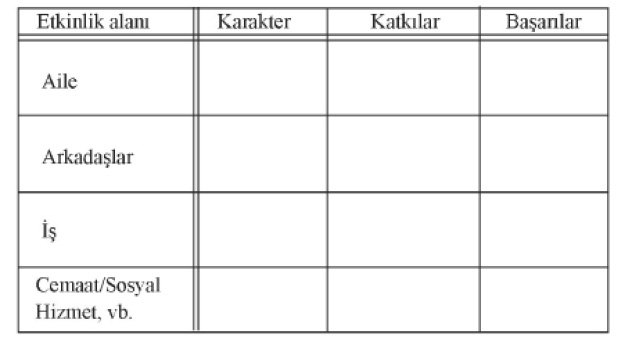
4. A Ekindeki değişik merkezleri gösteren diyagramı inceleyin ve sizinkilerle özdeşleşenlerin altını çizin. Bunlar, yaşamınızda bir davranış kalıbı oluşturuyor mu? Analizinizin sonuçlarından hoşnut musunuz?
5. Kişisel misyon bildirgenizi yazarken kaynak malzeme olarak kullanabileceğiniz notları, sözleri ve fikirleri toplamaya başlayın.
6. Yakın gelecekte karşılaşacağınız bir proje belirleyin ve buna zihinsel yaratım ilkesini uygulayın. İstediğiniz sonuçları ve bunlara ulaşmanızı sağlayacak adımları yazın.
7. Aileniz ya da birlikte çalıştığınız grupla 2.Alışkanlık ilkelerini paylaşın ve onlara, bir aile ya da grup olarak misyon bildirgesi geliştirme işlemine başlamayı önerin.
3. ALIŞKANLIK ÖNEMLİ İŞLERE ÖNCELİK VER
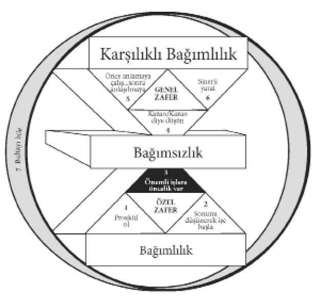
KİŞİSEL YÖNETİM İLKELERİ
En önemli şeyler, asla en önemsizlerin insafına bırakılmamalı.
GOETHE
Bir dakikanızı ayırıp aşağıdaki iki soruyu yazılı olarak yanıtlar mısınız? 3. Alışkanlık üzerinde çalışırken, yanıtlarınız sizin için önemli olacak.
Soru 1: Yapabileceğiniz (şu anda yapmadığınız) ve düzenli bir biçimde yaparsanız kişisel yaşantınızda son derece olumlu bir fark yaratabilecek tek şey nedir?
Soru 2: İşinizde ya da meslek yaşamınızda benzer sonuçlar doğurabilecek tek şey nedir?
Yanıtlara daha sonra geleceğiz. Ama önce 3. Alışkanlığı perspektife oturtalım.
3. Alışkanlık, 1. ve 2. Alışkanlıkların özel meyvesi, pratikte hayata geçirilmesidir.
1. Alışkanlık, “Yaratıcı sensin. Yönetim sende,” der. Temelinde, dört benzersiz insani yeti vardır: Hayal gücü, vicdan, özgür irade ve özellikle de özbilinç. Size, “Bu, çocukluğumdan itibaren bana verilen, kendi toplumsal aynamdan yansıyan sağlıksız bir program.
Bu etkisiz senaryoyu beğenmiyorum. Değişebilirim,” deme gücünü verir.
2. Alışkanlık, ilk ya da zihinsel yaratımdır. Temelinde ise hayal gücü, yani göz önünde canlandırma, potansiyeli görme, şu anda gözlerimizle görmediğimiz şeyi beynimizde yaratma yetisi; ve vicdan, yani kendi benzersizliğimizi fark etme ve bunu keyifle gerçekleştirebilmemizi sağlayacak kişisel, ahlaksal ve etik rehberlikleri ayırt etme yetisi bulunur. Bu, temel paradigmalarımız, değerlerimiz ve gelecekte ne olabileceğimize dair vizyonumuzla aramızdaki derin bağlantıdır.
O halde 3. Alışkanlık, ikinci; yani fiziksel yaratımdır. 1. ve 2.
Alışkanlıkların edinilmesi, hayata geçirilmesi ve doğal olarak sergilenmesidir.
Özgür iradenin, ilke merkezli olmak için kullanılmasıdır.
Bunu gece gündüz, her an yapmaktır.
1. ve 2. Alışkanlıklar, 3. Alışkanlık için zorunlu ve kaçınılmazdır.
Kendi proaktif doğanızı fark edip geliştirmedikçe ilke merkezli olamazsınız. Önce paradigmalarınızı fark etmedikçe ve onları nasıl değiştirip ilkelerle uyumlu hale getireceğinizi öğrenmedikçe, ilke merkezli olamazsınız. Yalnızca sizin yapabileceğiniz benzersiz katkıya dair bir vizyonunuz olmadıkça ve onu odak noktasına yerleştirmedikçe, ilke merkezli olamazsınız.
Ancak bu temelden yola çıkarak, gece gündüz ve her an 3. Alışkanlığı yaşayarak, yani etkili özyönetim yoluyla ilke merkezli olabilirsiniz.
Unutmayın ki yönetim, liderlikten tümüyle farklıdır. Liderlik, her şeyden önce, son derecede güçlü bir sağ beyin etkinliğidir. Daha çok bir sanattır; temelinde bir felsefe vardır. Kişisel liderlik sorunlarıyla uğraşırken yaşama ilişkin nihai soruları sormanız gerekir.
Ancak bu sorunlarla ilgilenip onları çözdüğünüzde, yanıtlarınızla tutarlı bir yaşam yaratabilmek için kendi kendinizi etkili bir biçimde yönetmeniz gerekir. İyi yönetme yeteneği, eğer “doğru ormanda” bile değilseniz pek bir işe yaramaz. Ama doğru ormandaysanız, o zaman her şey değişir. İyi yönetebilmek, ikinci yaratımın niteliğini, hatta varlığını belirler. Yöneticilik; etkili özyönetimin irdelenmesi, analizi, düzenlenmesi, özgül uygulaması, zamanla sınırlı sol beyin özelliğidir. Benim kişisel etkililikle ilgili özdeyişim şudur:
“Soldan yönet, sağdan liderlik et!”
ÖZGÜR İRADENİN GÜCÜ
Özbilinç, hayal gücü ve vicdana ek olarak, dördüncü doğal yetimiz olan özgür iradeyi, etkili özyönetimi tam anlamıyla mümkün kılar. Karar verme, seçim yapma ve bunlara uygun olarak davranma yeteneğidir bu. Edilgin değil, etkin olabilmektir. Diğer üç doğal yetimizin yardımıyla geliştirdiğimiz programı proaktif bir biçimde uygulayabilmektir.
İnsan iradesi şaşırtıcı bir şeydir. İnanılmaz engeller karşısında defalarca zafer kazanmıştır. Bu dünyanın Helen Keller’leri özgür iradenin değer ve gücünün çarpıcı kanıtlarıdır.
Ancak bu özelliği etkili özyönetim bağlamında incelediğimizde, genelde kalıcı başarıyı sağlayan şeyin dramatik, gözle görülür, hayatta bir kez harcanan, işe sıfırdan başlama çabası olmadığını anlarız.
Yetkinlik, günlük kararlarımızda bu büyük lütfun nasıl kullanılacağını öğrenmekten gelir.
Günlük yaşantımızda özgür irademizi ne dereceye kadar geliştirdiğimiz kişisel bütünlüğümüzle ölçülür. Bütünlük, temelde kendimize biçtiğimiz değerdir. Kendimize verdiğimiz sözlere bağlı kalma, “özü sözü bir olma” yeteneğimizdir. Kendine saygı duymaktır.
Proaktif gelişmenin özü, Karakter Etiği’nin temel bir parçasıdır.
Etkili yöneticilik, önemli işlere öncelik vermektir. Önemli işlerin neler olduğuna liderler karar verirken, bunlara günü gününe, anı anına öncelik veren yöneticilerdir. Yöneticilik disiplindir, kararları uygulamaktır.
Disiplin, mürit, havari ya da öğrenci anlamına gelen, disciple sözcüğünden türetilmiştir. Bir felsefenin öğrencisi, bir değerler dizisinin havarisi, çok önemli bir amacın, olağanüstü bir hedefin ya da o hedefi temsil eden bir kişinin müridi gibi.
Bir başka deyişle, kendinizi etkili bir biçimde yönetebiliyorsanız, disiplin içinizden gelir. Bu, özgür iradenizin bir işlevidir. Kendi derin değerlerinizin ve bunların kaynağının havarisi, müridi sizsiniz ve duygularınızı, uyaranlarınızı, ruhsal durumlarınızı bu değerlere boyun eğdirecek iradeye, kişisel bütünlüğe sahipsiniz.
En sevdiğim denemelerden biri, E. M. Gray’in yazmış olduğu “Başarının Ortak Paydası”dır. Gray, yaşamı boyunca bütün başarılı insanların paylaştığı ortak paydayı aradı. Bunun çalışkanlık, şans ya da dirayetli insan ilişkileri olmadığını anladı. Tabii bunlar da önemliydi ama, diğerlerinden üstün olan tek etken, 3. Alışkanlık, yani önemli işlere öncelik vermekti.
Gray’in gözlemine göre, “Başarılı insanların, başarısızların hoşlanmadığı şeyleri yapmak gibi bir alışkanlıkları vardır. Onlar da bu işlerden hoşlanmıyor olabilirler. Ancak hedefe varma arzularının gücü, hoşnutsuzluklarını yener.”
Bu yengi için bir amaç, bir misyon, 2. Alışkanlığa bağlı kesin bir yön ve değer duygusu, başka şeylere “hayır” demeyi mümkün kılacak içten gelen ateşli bir “evet!” gereklidir. Ayrıca özgür irade, istemediğiniz bir şeyi yapabilme gücü ve bir etki ya da arzunun değil, kendi değerlerinin bir işlevi olmak da gereklidir. İlk proaktif yaratınıza karşı kişisel bütünlükle hareket etme gücüdür bu.
DÖRT KUŞAK BOYUNCA ZAMAN YÖNETİMİ
3. Alışkanlık’ta, yaşam ve zaman yönetimi alanında sorulan pek çok soruyla ilgileniyoruz. Bu ilginç alanı uzun süredir inceleyen biri olarak, zaman yönetimi konusundaki en iyi düşünme tarzını, şu tek cümleyle açıklayabilirim: Önceliklere göre örgütlenip uygulamaya geçin. Bu cümle, zaman yönetimi kuramının üç kuşak boyunca geçirdiği evrimi temsil eder. Bunun en iyi nasıl yapılacağı konusu da, çok değişik yaklaşım ve malzemelerin odak noktasıdır.
Kişisel yönetim, diğer insani çabaların çoğuna benzer bir biçimde gelişmiştir. En büyük gelişim hamleleri ya da Alvin Toffler’ın deyimiyle “dalgalar”, sırayla birbirini izler ve her biri yaşamsal bir yeni boyut ekler. Örneğin, toplumsal gelişme alanında tarım devrimini sanayi devrimi izledi. Bunu da iletişimdeki devrim izledi. Birbirini izleyen her dalga büyük bir toplumsal ve kişisel ilerlemeye yol açtı.
Zaman yönetimi alanında da her kuşak kendisinden öncekinin üzerine eklenir; her biri yaşamlarımızı daha iyi kontrol etmemizi sağlayan birer adımdır. İlk dalganın ya da kuşağın belirleyici özellikleri, notlar ve kontrol listeleri, zaman ve enerjimizi gerektiren pek çok şeye bir tür onay verme, kapsamlılık kazandırma çabası olabilir.
İkinci kuşak, takvimler ve randevu defterleriyle tanımlanabilir.
Bu dalga, ileriye bakma, gelecekteki olaylar ve etkinlikleri programlama girişimini yansıtır.
Üçüncü kuşak ise bugün geçerli olan zaman yönetimi alanını yansıtır. Daha önceki kuşaklara, öncelikleri sıraya dizme, değerleri belirleme ve etkinliklerin görece kıymetini o değerlerle olan ilişkilerine göre kıyaslama gibi önemli kavramları katar. Ayrıca zaman ve enerjinin değerlerle uyumlu olarak yönlendirileceği uzun, orta ve kısa vadeli belirli hedefler belirlemeye odaklanır. Günlük planlama, yani büyük önem verilen o hedef ve etkinlikleri gerçekleştirmek için belirli bir plan yapma kavramını da içerir.
Üçüncü kuşak önemli bir katkıda bulunmuş olsa da, insanlar zamanın “verimli” bir biçimde programlanıp denetlenmesinin çoğu zaman ters sonuçlar verdiğini kavramaya başlamışlardır. Verimliliğe odaklanmak; zengin ilişkiler geliştirme, insani ihtiyaçları karşılama ve her gün kendiliğinden karşımıza çıkıveren anların tadını çıkarma fırsatlarıyla çatışan beklentiler yaratır.
Bunun sonucu olarak birçok kişi, kendini fazlasıyla programlanmış, fazlasıyla kısıtlanmış hissetmesine neden olan zaman yönetimi programlarından ve planlayıcılardan soğuyarak, “kurunun yanında yaşı da yakmış” ve ilişkilerini, doğallığı, yaşam kalitesini korumak için birinci ya da ikinci kuşağın tekniklerine dönmüştür.
Ama şimdi çok farklı bir dördüncü kuşak çıkıyor ortaya. Bu kuşak “zaman yönetimi” deyiminin aslında yanlış olduğu görüşünde.
Önemli olan, zamanı değil, kendimizi yönetmektir. Doyum, gerçekleştirmenin yanı sıra beklentinin de bir işlevidir. Beklenti (ve doyum) ise Etki Alanımızın içindedir.
Dördüncü kuşak beklentilerinin odak noktası, şeyler ve zaman değil, ilişkileri koruyup geliştirmek ve sonuçlara ulaşmak, kısacası
Ü/ÜY Dengesini korumaktır.
II. KARE
Dördüncü yönetim kuşağının esas odağı, aşağıdaki zaman yönetimi matrisinde yakalanabilir. Temelde, zamanımızı dört kareden birinde geçiririz.
Gördüğünüz gibi, bir etkinliği tanımlayan iki etken acillik ve önemdir. Acil, bir şeyle hemen ilgilenilmesi gerektiği anlamına gelir.
“Şimdi!” demektir. Acil işler bizi etkisi altına alır. Çalan bir telefon acildir. Çoğu kimse, telefonu çalar durumda bırakmayı düşünemez bile.
Saatlerce çalışarak gerekli malzemeyi hazırlayabilir, giyinip kuşandıktan sonra belirli bir konuyu konuşmak üzerine birinin bürosuna gidebilirsiniz. Ama siz oradayken telefon çalacak olursa, genellikle ziyaretinizden daha öncelikli sayılacaktır.
ZAMAN YÖNETİMİ MATRİSİ
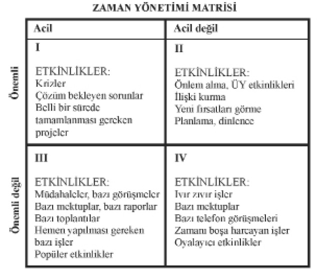
Birine telefon ettiğinizde, size “Seninle 15 dakika sonra konuşacağım, bekler misin?” diyebilecek kişilerin sayısı çok fazla değildir.
Ama aynı insanlar, başka biriyle yaptıkları telefon görüşmesini tamamlamak için sizi büroda en aşağı bu kadar süre bekletebilirler.
Acil konular genelde gözle görülür. Üstümüzde baskı oluştururlar.
Bizi hemen harekete geçmeye zorlarlar. Çoğu kez başkalarının istedikleri şeylerdir, tam karşımızda dururlar. Hatta çoğu hoş, kolay ve zevkle yapılacak şeylerdir. Ama çoğunlukla önemsizdirler!
Önem ise sonuçlarla ilgilidir. Bir şey önemliyse, görevinize, değerlerinize, öncelikli hedeflerinize katkıda bulunur.
Acil konulara tepki gösteririz. Acil olmayan önemli işler ise daha fazla inisiyatif, daha fazla proaktivite gerektirir. Fırsatı yakalamak, bazı şeylerin olmasını sağlamak için harekete geçmemiz gerekir. 2.
Alışkanlığı uygulamıyorsak, neyin önemli olduğunu, yaşamımızda hangi sonuçları istediğimizi iyi bilmiyorsak, kolayca yoldan çıkıp yalnızca acil şeylere tepki vermeye yöneliriz.
Zaman yönetimi matrisindeki dört kareye şöyle bir bakın. I. Kare hem önemli, hem de acildir. Hemen dikkat isteyen önemli sonuçlarla ilgilidir. I. Kare’deki etkinlikleri genelde “krizler” ya da “sorunlar” olarak tanımlarız. Hepimizin yaşamında, birtakım I. Kare etkinlikleri bulunur. Ancak I. Kare pek çok kişiyi tüketir. Bunlar kriz yöneticileri, sorunlarla uğraşanlar, bir şeyi verilen tarihte tamamlamaları gereken üreticilerdir.
Dikkatinizi I. Kare’ye verdiğiniz sürece, giderek büyür ve sonunda size egemen olur. Tıpkı üstünüze gelen dev dalgalar gibidir.
Dev bir sorun ortaya çıkıp size pes ettirir, yıkılırsınız. Tam doğrulmaya çalışırken, yeni biri daha çıkıp sizi yerle bir eder.
Bazı insanlar her gün sabahtan akşama kadar sorunların altında tam anlamıyla ezilirler. Rahatlamak için ancak IV. Kare’nin önemli ve acil olmayan etkinliklerine sığınabilirler. Bu nedenle onların toplam matrisine baktığınızda, zamanlarının yüzde 90’ını I. Kare’de, geri kalan yüzde 10’un çoğunu ise IV. Kare’de geçirdiklerini görürsünüz.
II. ve III. Karelere pek az dikkat ederler. Yaşamlarını krizlere göre ayarlayan insanlar böyle yaşar.
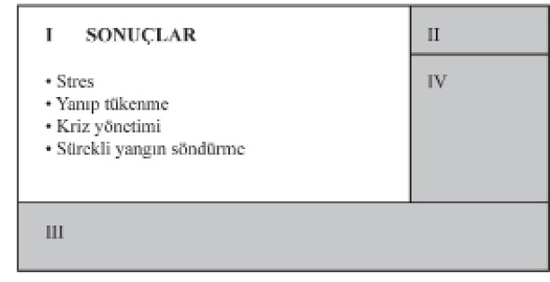
Bazı insanlar da “acil, ama önemsiz” olan III. Kare’de uzun zaman geçirirken, aslında I. Kare’de olduklarını sanırlar. Zamanlarının çoğunu, önemli olduğunu varsaydıkları acil şeylere tepki vererek geçirirler. Gerçekteyse bu konuların acilliği genelde başkalarının beklenti ve önceliklerine dayalıdır.
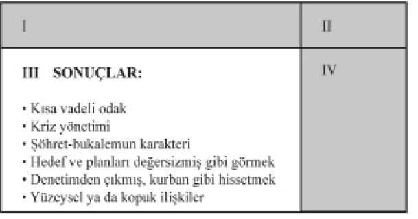
Zamanlarının hemen hemen tümünü II. ve IV. Kare’de geçirenler temelde sorumsuz bir yaşam sürerler.
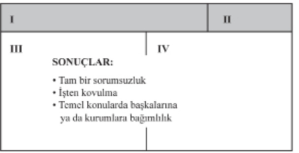
Etkili insanlar III. ve IV. Karelerden uzak durur, çünkü bunlar acil olsun ya da olmasın, önemli değildir. Ayrıca II. Kare’de daha fazla zaman geçirerek I. Kareyi olması gereken boyutlara indirirler.
II. Kare etkili kişisel yönetimin kalbidir. Acil değil de, önemli olan şeylerle ilgilenir. İlişkiler kurmak, kişisel bir misyon bildirgesi yazmak, uzun vadeli planlama, alıştırmalar, önleyici bakım, hazırlık gibi yapılması gerektiğini bildiğimiz, ama acil olmadıkları için bir şekilde sürüncemede bıraktığımız konuları ele alır.
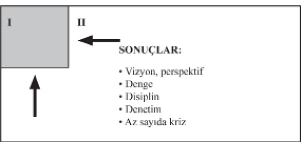
Peter Drucker’ın söylediklerini şöyle yorumlayabiliriz: Etkili kişilerin zihinleri sorunlara değil, fırsatlara açıktır. Onlar fırsatları besleyip sorunları kuruturlar. Önlemleri önceden düşünürler. Hemen dikkat gerektiren I. Kare krizleri ve acil olaylarla karşılaşsalar da, bunların sayısı görece azdır. Dikkatlerini II. Kare’nin yetenek geliştirici, acil değil de önemli olan etkinliklerine vererek Ü ve ÜY dengesini korurlar.
Zaman yönetimi matrisini göz önüne alarak, şimdi bir an bu bölümün başındaki soruları nasıl yanıtladığınızı düşünün. Yanıtlarınız hangi kareye uyuyor? Bunlar önemli mi? Acil mi?
Bence büyük bir olasılıkla II. Kare’ye uyuyorlar. Son derecede önemli oldukları apaçık, ama acil değiller. Acil olmadıkları için de yapmıyorsunuz.
Şimdi o soruların niteliğine bir daha bakın: Kişisel ve meslek yaşantınızda yapabileceğiniz ve düzenli bir biçimde yaparsanız yaşamınızda son derece olumlu bir fark yaratabilecek tek şey nedir?
II. Kare faaliyetlerinin etkisi işte bu türdendir. Bunları yaptığımız zaman etkililiğimiz kat kat artar.
Alışveriş merkezi yöneticilerinden oluşan bir gruba da buna benzer bir soru sordum: “Meslek yaşamınızda, sonuçları son derece olumlu bir biçimde etkileyeceğini bildiğiniz bir şey yapmanız gerekseydi, bu ne olurdu?” Hepsi aynı yanıtı verdi; alışveriş merkezinin içindeki dükkân sahipleri ve kiracılarla, işe yardımcı olacak kişisel ilişkiler kurmak istiyorlardı. Bu bir II. Kare etkinliğidir.
Onların bu etkinliğe harcadıkları zamanı inceledik. Toplamın yüzde 5’inden daha azdı. Mazeretleri hazırdı: Birbirini izleyen sorunlar.
Yazılması gereken raporlar, toplantılar, yanıtlanması gereken mektuplar, telefon görüşmeleri, sürekli araya giren bazı şeyler. I.
Kare onları yutmuştu.
Mağaza yöneticilerine çok az zaman ayırıyorlardı, ayırdıkları zaman da olumsuz enerjiyle doluydu. Onları ziyaret etmelerinin tek nedeni, sözleşmelerin uygulanmasını sağlamak, para toplamak, reklamları ya da alışveriş merkezinin kurallarına uymayan hareketleri görüşmek, vb. türden konulardı.
Mağaza sahipleri, zengin olmak bir yana, ayakta kalabilmek için savaşıyorlardı. Personel, maliyet, envanter ve daha bir sürü sorunları vardı. Çoğu hiç yöneticilik eğitimi görmemişti. Bazıları oldukça iyi tüccardı, ama yardıma gereksinimleri vardı. Kiracılar, alışveriş merkezinin sahiplerini görmek bile istemiyordu. Mal sahipleri onlar için çözülmesi gereken ek bir sorundu.
Bu nedenle, mal sahipleri proaktif olmaya karar verdiler. Amaçlarını, değerlerini ve önceliklerini belirlediler. Bu önceliklere uygun olarak, zamanlarının üçte birini kiracılarla ilişkilerin geliştirilmesine ayırmaya karar verdiler.
Yaklaşık bir buçuk yıl boyunca o kuruluşla çalışırken, II. Kare etkinliklerine ayırdıkları zamanın yüzde 20’lere çıktığını gördüm.
Bu, dört katın üzerinde bir artıştı. Buna ek olarak rollerini de değiştirdiler.
Kiracıları dinleyen, eğiten ve fikir veren kişilere dönüştüler.
İlişkileri olumlu enerjiyle doluydu.
Bunun etkisi, çarpıcı ve derindi. Odak noktası olarak zaman ve yöntemler yerine, ilişkiler ve sonuçlar seçilmişti. Cirolar yükseldi.
Kiracılar yeni fikir ve becerilerin yarattığı sonuçları heyecanla karşıladılar.
Alışveriş merkezinin yöneticileri daha etkili ve hoşnuttu, yer kiralamak isteyenlerin sayısı artmış ve kiracıların satışındaki artışa paralel olarak kira gelirleri de yükselmişti. Yöneticiler artık bir polis ya da kiracıların peşini bırakmayan denetçi gibi davranmıyorlardı.
Onlar sorunları çözen, yardım eden kişilerdi.
İster bir üniversite öğrencisi, ister bir fabrika işçisi veya ev kadını veya moda tasarımcısı ya da bir şirketin yönetim kurulu başkanı olun, II. Kare’de ne bulunduğunu sorar ve onu yakalamak için gerekli proaktiviteyi oluşturursanız, aynı sonuçlara varırsınız. Çok daha etkili olursunuz. Krizlerle sorunlar küçülür ve başa çıkılacak duruma gelir. Çünkü ileriyi düşünmüş, kökler üzerinde çalışmış ve olayların krize dönüşmesini engelleyecek önlemleri almış olursunuz.
Zaman yönetimi dilinde bu, “Pareto İlkesi” diye bilinir: Sonuçların yüzde 80’i, etkinliklerin yüzde 20’sinden doğar.
“HAYIR” DEMEK İÇİN NE GEREKİR?
Başlangıçta II. Kare için ayrılacak zamanın tek kaynağı, III. ve
IV. Karelerdedir. I. Kare’nin acil ve önemli etkinliklerini görmezden gelemezsiniz. Bu arada, II. Kare’deki önlem alma ve hazırlanma işlerine daha fazla zaman harcarken, o da küçülecektir. Ancak, II. Kare için gereken zaman ilk olarak III. ve IV. Karelerden alınmalıdır.
II. Kare’de çalışabilmek için proaktif olmanız gerekir. Çünkü I. ve III. Kare sizin üzerinizde çalışır. II. Kare’deki önemli önceliklere “evet,” diyebilmek için diğer etkinliklere ve bazen de acil görünen şeylere “hayır” demeyi öğrenmeniz gerekir.
Bir süre önce eşime, toplum yararına çalışmalar yapan bir derneğin başkanı olması için çağrıda bulunuldu. Eşim gerçekten önemli olan pek çok konu üzerinde çalışıyor ve başkan olmak istemiyordu.
Ancak kendisine baskı yapılınca sonunda razı oldu.
Sonra, komitede görev alıp almayacağını öğrenmek için en yakın arkadaşlarından birini aradı. Arkadaşı uzun süre onu dinledi. Sonra şöyle dedi: “Sandra, bu harika bir projeye benziyor. Gerçekten üzerinde çalışmaya değecek bir şey. Beni katılmaya çağırman çok hoşuma gitti. Bana onur verdin. Bazı nedenlerle bu projeye katılamayacağım, ama davetine ne kadar değer verdiğimi bilmeni isterim.”
Sandra, nazik bir “hayır” dışında her şeye hazırdı. Bana dönerek içini çekti. “Keşke bunu ben söylemiş olsaydım.”
Burada, önemli hizmet projelerine katılmamalısınız demek istemiyorum.
Bunlar önemli şeyler. Ancak sizin için nelerin daha önemli olduğuna karar vermeli ve sonra da diğer şeyler konusunda nazikçe, gülümseyerek, özür diliyormuş gibi davranmadan “hayır” deme cesaretini göstermelisiniz. Bunu da içinizde alev alev yanan daha büyük bir “evet” olduğu takdirde başarabilirsiniz. Çoğu zaman “iyi”, “en iyi”nin düşmanıdır.
Şunu aklınızdan çıkarmayın: Her zaman bir şeylere “hayır” diyorsunuz. Bunu yaşamınızdaki belirgin, acil şeylere değilse de, muhtemelen daha esaslı, son derecede önemli konularda söylüyor olmalısınız. Acil konu iyi olduğunda bile, bu “iyi” sizi “en iyi”den uzaklaştırabilir. Buna izin verdiğiniz takdirde yalnız sizin yapabileceğiniz o benzersiz katkıya engel olabilir.
Büyük bir üniversitede “Üniversite İlişkileri Direktörü” olduğum günlerde çok yetenekli, proaktif, yaratıcı bir yazarı işe almıştım.
Çalışmaya başladıktan birkaç hafta sonra, bir gün onun bürosuna gittim ve beni baskı altına alan birtakım acil konularla ilgilenmesini istedim.
“Stephen,” dedi, “ne istiyorsan yaparım. Şimdi izin verirsen durumumu sana açıklamak istiyorum.”
Beni duvardaki ilan tahtasına götürdü. Oraya, üzerinde çalıştığı yirmi dört projelik bir listenin yanı sıra, performans kıstaslarını ve daha önce görüşüldüğü belli olan işlerin teslim tarihlerini asmıştı.
Son derecede disiplinli bir adamdı. Onu görmeye gitmemin nedeni de buydu zaten. “Bir işin yapılmasını istiyorsanız, meşgul birine verin.”
Şöyle devam etti: “Stephen, istediğin işlerin doğru dürüst yapılması birkaç gün gerektirir. Şimdi; isteğini yerine getirebilmek için, sence bu projelerden hangilerini geciktirmeli ya da listeden çıkarmalıyım?”
Bu tür bir sorumluluk almaya kalkışmadım. Yanımda çalışan çok üretken insanlardan birini, o sırada bir krizle karşı karşıya olduğum için engellemek istemedim. Yapılmasını istediğim işler acildi, ama önemli değildi. Bu nedenle gidip başka bir kriz yöneticisi buldum ve işi ona verdim.
Her gün, bir şeylere “evet” ya da “hayır” deriz, hem de birçok kez. Doğru ilkelerden oluşan bir merkeze sahip olmak ve kişisel misyonumuz üzerinde yoğunlaşmak, bize bu kararları vermek için gerekli olan bilgeliği sağlar.
Değişik gruplarla çalışırken, etkili bir zaman ve yaşam yönetiminin özünün, dengeli önceliklerin etrafında örgütlenip uygulamaya geçmek olduğunu söylerim. Sonra şu soruyu sorarım: “Kendinizde bir kusur arasaydınız, şu üç alandan hangisinde bulurdunuz: (1) Öncelikleri oluşturma beceriksizliği; (2) O önceliklere göre örgütlen me beceriksizliği ya da isteksizliği; (3) Bunların rehberliğinde uygulamaya geçmek, önceliklerinizi ve kurduğunuz düzeni korumak için gerekli olan disiplin eksikliği.
Çoğu kişi başlıca kusurunun disiplinsizlik olduğunu söyler.
Derinlemesine düşündükçe, bunun doğru olmadığına inanıyorum.
Temel sorun, önceliklerin zihinlerine ve yüreklerine tam olarak yerleşmemiş oluşudur; 2. Alışkanlığı tam anlamıyla içselleştirmemişlerdir.
II. Kare etkinliklerinin yaşamlarındaki değerini, bunu böyle adlandırmasalar bile kabul eden pek çok kişi vardır. Bu etkinliklere öncelik verir ve sadece kendilerini disipline sokarak onları yaşamlarının bir parçası haline getirirler. Ne var ki bir ilke merkezi ve kişisel bir misyon bildirgesi olmadıkça, çabalarını sürdürmeleri için gereken temelden yoksun kalırlar. Yaprakların, yani disiplinle ilgili davranış ve tutumların üzerinde dururlar. Ama kökleri, yani doğal tutum ve davranışlarının kaynağı olan temel paradigmaları incelemeyi düşünmezler bile.
II. Kare’nin odağı, bir ilke merkezinden doğan paradigmadır.
Merkeziniz; eşiniz, paranız, dostlarınız, zevkiniz ya da herhangi bir geçici etkense, durmadan I. ve III. Karelere geri atılır, yaşamınızın merkezini oluşturan dış güçlere tepki gösterirsiniz. Ben merkezli bile olsanız, sonunda soluğu I. ve III. Karelerde alır ve anlık etkilere tepki verirsiniz. Özgür iradeniz tek başına sizi merkezinize karşı disipline sokmaya yetmez.
Mimarlıkla ilgili bir özdeyişe göre, biçim işlevden sonra gelir.
Aynı şekilde, yönetim de liderlikten sonra gelir. Zamanınızı harcama biçiminiz, zamanınızı ve önceliklerinizi görme biçiminizin bir sonucudur. Öncelikleriniz bir ilke merkezinden ve kişisel bir misyondan kaynaklanıyorsa, zihninizde ve yüreğinizde iyice yer etmişse,
II. Kare’yi zamanınızı harcamak için doğal ve heyecan verici bir yer olarak görürsünüz.
İçinizde alev alev yanan daha büyük bir “evet” yoksa, III. Kare’nin popülerliğine ya da IV. Kare’ye kaçmanın vereceği zevke “hayır” demeniz neredeyse imkânsızdır. Programınızı incelemeniz için gereken özbilince –ve “evet” diyebileceğiniz yeni, eşsiz, ilke merkezli bir program yaratacak hayal gücü ile vicdana– sahipseniz, ancak o zaman önemsiz şeylere içten bir gülümsemeyle “hayır” demeye yetecek kadar irade gücünüz olabilir.
II. KARE’YE GEÇMEK
II. Kare etkinlikleri –öncelik vermemiz gereken “önemli işler”– açık bir biçimde etkili kişisel yönetimin can damarıdır. O halde onların etrafında örgütlenip uygulamaya nasıl geçebiliriz?
Zaman yönetiminin birinci kuşağı öncelik kavramını kabul bile etmez. Bize notlar ve “yapılacak şeyler” listeleri verir. Bu listelerde yazılı olan şeylerin sırayla üstünü çizer, her seferinde geçici bir başarı duygusuna kapılırız. Ancak listedeki şeyler hiçbir zaman öncelik sırasına göre dizilmemiştir. Ayrıca listedekilerle yaşamımızın en önemli değerleri ve amaçları arasında hiçbir ilişki yoktur. Yalnızca farkına vardığımız ve yapılması görünüşte gerekli olan şeylere karşılık veririz.
Pek çok kişinin yönetimi bu ilk kuşak paradigmasına dayalıdır.
En kolay yol da budur. Ne acı duyulur, ne de zorluk çekilir. “Akıntıyla sürüklenmek” eğlencelidir. Dışarıdan dayatılan disiplin ve programlar, insanların sonuçlardan sorumlu olmadıkları duygusuna kapılmalarına yol açar.
Ne var ki ilk kuşak yöneticiler, tanımı gereği, etkili değildir. Çok az üretim yaparlar, yaşam tarzları da üretim yeteneklerini oluşturmaz.
Dış güçlerin etkisi altında sarsılan bu kişilerin çoğu zaman güvenilmez, sorumsuz insanlar oldukları anlaşılır. Kontrol ve özsaygı duyguları pek az gelişmiştir.
İkinci kuşak yöneticiler biraz daha kontrollüdür. Önceden plan ve program yaparlar. Genelde daha sorumlu oldukları düşünülür, çünkü kendilerine gerek duyulduğunda “ortaya çıkarlar”.
Ama yine de etkinlikleri öncelik sırasına göre ve derin değerler ve amaçlarla bağlantılı olarak sıraya dizmezler. Önemli başarıları çok azdır ve programa yönelik olma eğilimi gösterirler.
Üçüncü kuşak yöneticiler, ileriye doğru önemli bir adım atarlar.
Değerlerini netleştirir ve hedef saptarlar. Her günün planlamasını yapar ve etkinliklerini önceliklerine göre sıraya dizerler.
Daha önce de söylediğim gibi, zaman yönetimi alanının büyük bölümünün bugün bulunduğu nokta budur. Ancak bu üçüncü kuşağın da bazı ciddi kısıtlamaları vardır. İlk olarak, vizyonu kısıtlar.
Günlük planlama, ancak daha geniş perspektiften görülebilecek önemli şeyleri çoğu zaman gözden kaçırır. “Günlük planlama” deyiminin odağı acil durumlar, yani “şimdi”dir. Üçüncü kuşağın olayları önceliklerine göre sıralaması, etkinliği düzene soksa da, daha en başından önemini sorgulamaz. Etkinliği ilkeler, kişisel misyon, roller ve hedefler bağlamına yerleştirmez. Üçüncü kuşağın değer güdümlü, günlük planlama yaklaşımı, temelde I. ve III. Kare sorunlarına ve o gün ortaya çıkan krizlere öncelik verir.
Buna ek olarak üçüncü kuşak, rolleri dengeli bir biçimde yönetme konusunda hiçbir önlem almaz. Gerçekçi değildir. Günü haddinden fazla programlama eğilimi yaratarak hüsrana ve zaman zaman planı bir yana fırlatıp IV. Kare’ye kaçma isteklerine neden olur.
Odak noktası olan zaman yönetimi ise, genelde ilişkileri sağlamlaştırmak yerine zorlar.
Bu kuşakların üçü de bir tür yönetim aracının değerini kabul etmiş olmakla birlikte, hiçbiri ilke merkezli, II. Kare yaşam tarzını sürdürme gücünü verecek bir araç geliştirmemiştir. İlk kuşağın not defterleri ve “yapılması gereken işler” listesi, bize sadece farkına vardığımız şeyleri unutmamamız için bir ortam sağlar. İkinci kuşağın randevu defterleri ve takvimleri ise sadece, uygun zamanda söz verdiğimiz yerde bulunabilmemiz için geleceğe yönelik yükümlülüklerimizi kaydedeceğimiz bir ortam sağlar.
Üçüncü kuşak bile, çok sayıda planlayıcısı ve malzemesiyle, esas olarak insanların I. ve III. Kare etkinliklerini önceliklerine göre sıralayıp planlamalarına yardımcı olmaya odaklanır. Pek çok eğitici ve danışman II. Kare etkinliklerinin değerini kabul etse de, üçüncü kuşağın planlama araçları, onların etrafında örgütlenme ve uygulamaya geçme çabalarını kolaylaştırmaz.
Her kuşak, kendisinden öncekinin temelleri üzerine kurulduğu için, ilk üç kuşağın güçlü yanları ve bazı araçları, dördüncüsü için temel malzemeyi sağlar. Ancak II. Kare’ye geçmemiz, ilke merkezli olmamız ve gerçekten önemli olan işleri yapacak şekilde kendimizi yönetmemiz için bize güç verecek yeni bir boyuta, paradigmaya ve uygulamaya da ihtiyacımız vardır.
II. KARE GEREÇLERİ
II. Kare yöneticiliğinin amacı, yaşamımızı etkili bir biçimde
–sağlam ilkelerden oluşan bir merkezden, kişisel misyonumuza dair bir bilgiden yola çıkarak, acil işlerin yanı sıra önemli olanların da üstünde durarak– yönetmektir. Üretimimizi artırmakla, üretme yeteneğimizi artırmak arasındaki dengenin (Ü/ÜY) sürdürülmesini de öngörür.
Açıkçası bu, III. ve IV. Karelerdeki sığ şeylerin içine batmış olanlar için fazlasıyla iddialı bir amaçtır. Ama bunu başarmaya çalışmak, kişisel etkililiği alabildiğine geliştirecektir.
II. Kare’de işleri örgütleyen birinin, altı önemli kıstasa uyması gerekir.
TUTARLILIK. Tutarlılık; vizyonunuzla misyonunuz, rollerinizle hedefleriniz, önceliklerinizle planlarınız, isteklerinizle disiplininiz arasında uyum, birlik ve bütünlük olduğunu gösterir. Ajandanızda, sık sık başvurabilmeniz için kişisel misyon bildirgenize bir yer olmalıdır.
Ayrıca rolleriniz ve hem kısa hem de uzun vadeli hedefleriniz için de bir yer bulunmalıdır.
DENGE. Gereciniz dengeli bir yaşam sürdürmenize, çeşitli rollerinizi tanımlamanıza ve onları göz önünden ayırmamanıza yardımcı olmalıdır. Böylece sağlığınız, aileniz, profesyonel hazırlıklarınız ya da kişisel gelişiminiz gibi önemli alanları ihmal etmezsiniz.
Pek çok insan bir alandaki başarının, yaşamın diğer alanlarındaki başarısızlığı telafi edeceğini düşünür. Ama bunu gerçekten yapabilir mi? Belki bazı alanlarda kısıtlı bir süre için yapabilir. Ancak mesleğinizdeki başarınız sona eren bir evliliği, bozulmuş bir sağlığı ya da karakter zayıflığını giderebilir mi? Gerçekten etkili olmak için denge gereklidir, gereciniz de bunu yaratmanıza ve sürdürmenize yardım etmelidir.
II. KARE ODAĞI. Sizi yüreklendirecek, size şevk verecek, II. Kare’de gerektiği kadar zaman harcamanıza yardım edecek bir araca gereksiniminiz var. Böylece krizleri önceliklerine göre sıralamak yerine, onları önlemeye çalışacaksınız. Bence bunu yapmanın en iyi yolu, yaşamınıza haftalık bir çekidüzen vermektir. Bu arada günlük planları uygulayıp öncelikleri sıraya dizebilirsiniz, ama asıl hamle, haftayı düzenlemektir.
Haftalık düzenleme günlük planlamaya oranla daha iyi bir denge ve daha geniş bir bağlam sağlar. Haftanın tek ve tam bir zaman birimi olarak kültürel anlamda üstü örtülü bir kabul gördüğü anlaşılıyor.
İş dünyasında, eğitimde ve diğer birçok toplumsal alanda, haftalık bir çerçeve içinde faaliyet gösterilir; bazı günler odaklı yatırımlara, diğerleri ise dinlenmeye ya da esinlenmeye ayrılır. Yahudi-Hıristiyan etiği bunun için Sebt (Yahudiler için cumartesi, Hıristiyanlar için pazar) gününü, (İslam ise cuma gününü) manevi amaçlara ayırmıştır.
Çoğu kişi hafta bağlamında düşünür. Üçüncü kuşak planlama araçları ise günlük planlamaya odaklanır. Bunlar etkinliklerinizi önceliklerine göre sıralamanıza yardım edebilir. Ancak temelde, krizleri ve ıvır zıvır işleri örgütlemenize yardımcı olur. İşin anahtarı, programınızdaki işleri önceliklerine göre sıralamak değil, öncelikli işlerinizi programlamaktır. Bu ise en iyi şekilde, haftalık bağlamda yapılabilir.
“İNSAN” BOYUTU. Size yalnızca programlarla değil, insanlarla da ilgilenen bir gereç gereklidir. Zaman konusuna verimlilik açısından bakabilirsiniz. İlke merkezli bir kişi ise insanlarla ilişkilerinde etkililik bağlamında düşünür. Bazen, ilke merkezli II. Kare’de yaşamak, programların insanlara tabi kılınmasını gerektirir. Kullandığınız gereç o değeri yansıtmalı, programa uyulmadığı zaman suçluluk duygusu yaratmak yerine yürütmeyi kolaylaştırmalıdır.
ESNEKLİK. Planlama gereciniz size hizmet etmelidir. Asla efendiniz olmamalıdır. Sizin için çalışması gerektiğine göre kendi tarzınıza, gereksinimlerinize ve belirli yöntemlerinize göre biçilmiş olmalıdır.
TAŞINABİLİRLİK. Kullandığınız gereç, çoğu zaman yanınızda götürebilmeniz için ayrıca taşınabilir olmalıdır. Örneğin, otobüste giderken kişisel misyon bildirgenizi gözden geçirmek isteyebilirsiniz.
Yeni bir fırsatın değerini daha önce planladığınız bir şeyle karşılaştırmayı arzu edebilirsiniz. Planlayıcınız taşınabilir türdense, onu yanınıza alabilir ve böylece önemli verilere her an erişebilirsiniz.
II. Kare etkili özyönetimin can damarı olduğu için, sizi II. Kare’ye taşıyacak bir gereç gereklidir. Dördüncü kuşak kavramıyla ilgili çalışmalarım, özel olarak yukarıda sayılan kıstaslara göre tasarlanmış bir gerecin yaratılmasına yol açtı. Ama üçüncü kuşak gereçlerinden birçoğu kolayca uyarlanabilir. İlkeler sağlam olduğu için, özgül uygulamalar kişiden kişiye değişebilir.
KENDİNİ II. KARE’DE YÖNETEN BİRİ OLMAK
Ben burada etkililiğin ilkelerini öğretmeye çalışıyorum, nasıl uygulanacaklarını değil. Yine de ilke merkezli II. Kare temelinden hareket ederek haftalık bir düzenleme yaparsanız, dördüncü kuşağın ilkelerini ve güç verici niteliklerini daha iyi anlayacağınıza inanıyorum.
II. Kare düzenlemesi dört ana etkinlik içerir.
ROLLERİ TANIMLAMA. İlk göreviniz ana rollerinizi bir yere yazmaktır.
Yaşamınızda üstlenmekte olduğunuz rolleri ciddi bir biçimde düşünmediyseniz, hemen aklınıza gelen şeyleri not edebilirsiniz.
Birey olarak bir rolünüz var. Çekirdek ailenin –karı ya da koca, anne ya da baba, oğul ya da kız– yanı sıra, büyük annelerle babalar, amcalar, dayılar, teyzeler, halalar, yeğenler ve diğerlerinden oluşan geniş ailenin de bir üyesi olarak bir ya da birkaç rolü sıralamak isteyebilirsiniz.
Zaman ve enerjinizi düzenli olarak harcamak istediğiniz alanları belirleyerek işinizde üstlendiğiniz birkaç rolü sıralamak isteyebilirsiniz.
Dinsel ya da toplumsal etkinliklerde de rolünüz olabilir.
Yaşamınızın sonuna kadar üstleneceğiniz rolleri belirlemeyi düşünerek kaygılanmanıza gerek yok. Yalnızca haftayı göz önüne alın ve önünüzdeki yedi gün boyunca zaman ayıracağınız alanları yazın.
Aşağıda, insanların çeşitli rollerini nasıl görebileceklerini gösteren iki örnek yer alıyor:
1. Birey 1. Kişisel gelişim
2. Eş/Ebeveyn 2. Eş
3. Yeni Ürünler Müdürü 3. Ebeveyn
4. Araştırma Müdürü 4. Emlakçı
5. Personel Müdürü 5. Sosyal hizmet
6. İdari İşler Müdürü 6. Senfoni Orkestrası
7. Yönetim Kurulu Başkanı Kurul Üyesi
HEDEF SEÇME. Bir sonraki adım, önünüzdeki yedi gün içinde her bir rolünüzde elde etmeniz gereken iki ya da üç önemli sonucu düşünmektir.
Bunlar hedef olarak kaydedilmelidir. (Bir sonraki sayfaya bakın.)
Bu hedeflerden hiç olmazsa birkaçı II. Kare etkinliklerini yansıtmalıdır.
İdeal olan, bu kısa vadeli hedeflerin kişisel misyon bildirgenizde belirlediğiniz uzun vadeli hedeflerle bağlantılı olmasıdır. Ama kişisel misyon bildirgenizi yazmadıysanız bile, her bir rolünüzü ve bu roller için seçtiğiniz iki-üç hedefi ele alırken neyin önemli olduğunu hissedip anlayabilirsiniz.
PROGRAMLAMA. Şimdi önünüzdeki haftaya hedeflerinizi aklınızda tutarak bakıp, bunlara ulaşmak için zamanınızı programlayabilirsiniz.
Örneğin, hedefiniz kişisel misyon bildirgenizin ilk taslağını hazırlamaksa, üzerinde çalışmak için pazar gününün iki saatini ayırmayı düşünebilirsiniz. Pazar günü (ya da size, inancınıza ya da koşullarınıza uygun düşen bir başka gün), genelde moralinizi yükseltecek etkinliklerinizi planlamak ve haftalık düzenleme yapmak için ideal zamandır. Geriye çekilmek, ilham kaynağı aramak, yaşamınıza ilkeler ve değerler açısından bakmak için de uygundur.
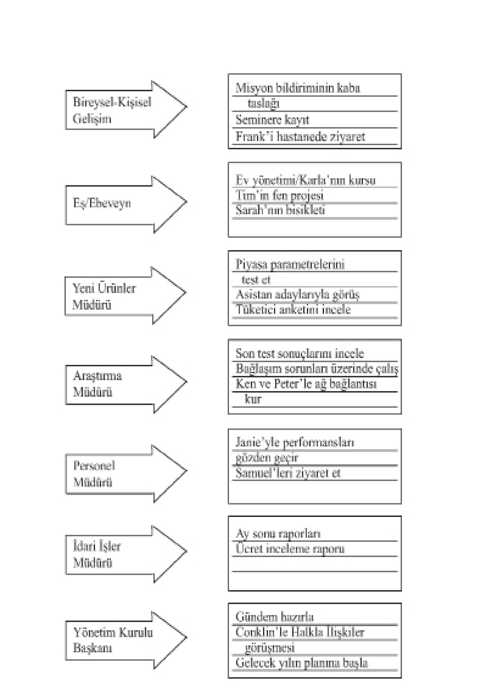
Egzersiz yaparak fiziksel açıdan formda olmayı hedefliyorsanız, o hedefe ulaşmak için hafta içinde üç-dört gün, ya da mümkünse her gün bir saatinizi buna ayırmak isteyebilirsiniz. Bazı hedeflere ancak çalışma saatlerinde, bazılarına ise yalnızca cumartesi günleri çocuklarınız evdeyken ulaşabilirsiniz. Bir gün yerine bütün bir haftayı düzenlemenin bazı üstün yönlerini anlamaya başlıyor musunuz?
Rollerinizi tanımlayıp hedeflerinizi belirledikten sonra, her hedefi öncelikli bir konu olarak, ya da daha iyisi, özel bir randevu şeklinde haftanın belirli bir gününe atayabilirsiniz. Ayrıca daha önce vermiş olabileceğiniz randevular için yıllık ya da aylık takviminize bakabilir, bunların önemini hedefleriniz bağlamında değerlendirebilir, bazılarını programınıza alıp bazılarını erteleyebilir ya da iptal edebilirsiniz.
188-189. sayfalardaki haftalık çalışma programını incelerken, genelde II. Kare’ye ait en önemli on dokuz hedefin nasıl programlandığını ya da belirli bir hareket planı haline dönüştürüldüğünü gözlemleyin. Buna ek olarak, 7. Alışkanlık’ta açıklanacak olan dört insani boyutun her birinde büyük önem taşıyan yenileyici II. Kare etkinliklerinin planlanmasına yer ayıran “Baltayı Bile” yazılı kutuya dikkat edin.
Hafta içinde 19 önemli hedefe erişmek için ayrılmış zamanın yanı sıra, çalışma listesindeki programlanmamış alana bir bakın! II.
Kare’de yapacağınız haftalık düzenleme size önemli işlere öncelik verme gücünü kazandırırken, bir yandan da beklenmedik olaylarla başa çıkmak, gerekirse randevuları kaydırmak, başkalarıyla ilişki ve etkileşimlerin tadına varmak, doğal deneyimlerden keyif almak için gerekli olan özgürlük ve esnekliği de sağlar. Böylece, yaşamınızın her alanında önemli hedeflere ulaşabilmek için haftanızı proaktif bir biçimde düzenlediğinizi bilirsiniz.
GÜNLÜK UYUM. II. Kare’nin haftalık düzenlemesiyle, günlük planlama, daha çok güne uyum sağlama, etkinlikleri önceliklerine göre sıralama ve beklenmedik olaylara, ilişkilere ve deneyimlere anlamlı bir biçimde karşılık verme işlevine dönüşür.
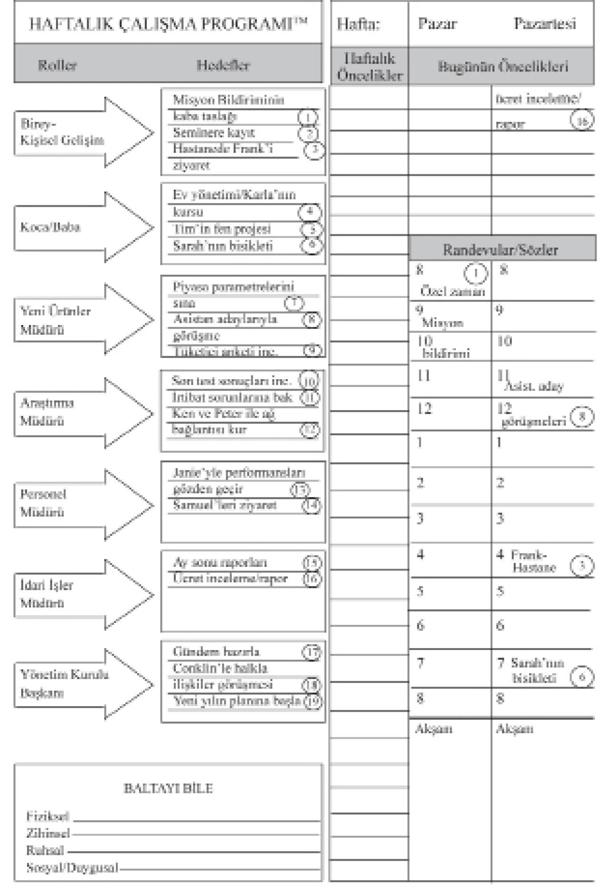
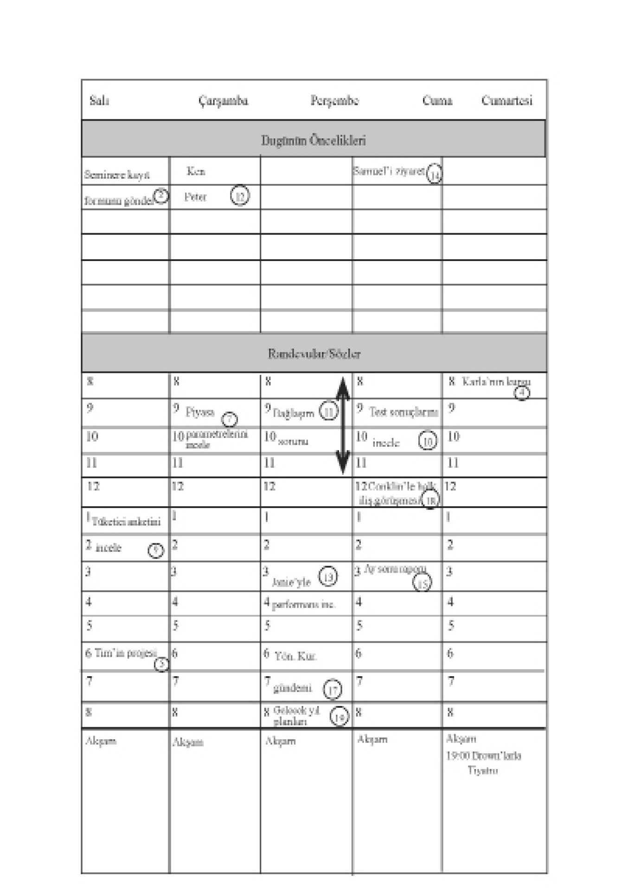
Her sabah birkaç dakikanızı programınızı gözden geçirmeye ayırmanız, haftanızı düzenlerken verdiğiniz değerlere dayalı kararlar ve ortaya çıkabilecek beklenmedik etkenlerle bağlantı kurmanızı sağlayabilir. Gününüzü gözden geçirirken, rollerinizin ve hedeflerinizin, içinizdeki denge duygusundan gelen doğal bir öncelik sıralaması sağladığını görebilirsiniz. Bu, kişisel misyon anlayışınızdan doğan, sağ beyne özgü bir sıralamadır.
Yine de üçüncü kuşağın A, B, C ya da 1, 2, 3 şeklindeki öncelik sıralamasının günlük etkinliklere gerekli düzeni sağladığını düşünebilirsiniz.
Etkinliklerin önemli ya da önemsiz olduklarını söylemek yapay bir ayırım olur. Onların bir süreklilik oluşturdukları bellidir ve bazı önemli etkinlikler diğerlerinden daha önemlidir. Haftalık düzenleme bağlamında, üçüncü kuşak öncelik sıralaması günlük odağı düzene sokar.
Ancak etkinliklerin kişisel misyon anlayışınızla ne tür bir ilişkisi olduğunu ve yaşamınızın dengesine nasıl uyduğunu bilmeden bunları sıralamaya çalışmak hiç de etkili bir yöntem değildir. İstemediğiniz ya da yapmanıza gerek olmayan şeyleri sıraya dizip gerçekleştiriyor olabilirsiniz.
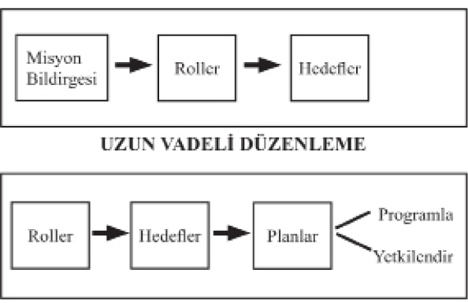
HAFTALIK DÜZENLEME
Hedefler Misyon
Bildirgesi Roller
Roller Hedefler Planlar
Programla
Yetkilendir
Haftanızı bir ilke merkezli II. Kare yöneticisi gibi düzenlemekle, günlerinizi merkezinde başka şeyler olan bir birey gibi planlamak arasındaki farkı görebiliyor musunuz? II. Kare odağının şu andaki etkililik düzeyinizde yaratacağı o müthiş farkı anlayabiliyor musunuz?
İlke merkezli II. Kare düzenlemesinin gücünü kendi yaşamımda gördüğüm ve diğer yüzlerce insanın yaşamını değiştirdiğine tanık olduğum için, bunun çok büyük ve olumlu bir fark yarattığı kanısındayım.
Haftalık hedef, doğru ilkelerden oluşan daha geniş bir çerçeveye ve kişisel bir misyon bildirgesine ne kadar bağlıysa, etkililikteki artış da o kadar fazla olur.
II. KARE’Yİ YAŞAMAK
Tekrar bilgisayar benzetmesine dönersek, 1. Alışkanlık “Programcı sensin,” 2. Alışkanlık da “Programı yaz,” diyorsa, o zaman 3.
Alışkanlık, “Programı çalıştır,” “Programı yaşa,” der. Onu yaşamak ise öncelikle özgür irademizin, kendimize dayattığımız disiplinin, kişisel bütünlüğümüzün ve bağlılığımızın; kısa vadeli hedefler ve programlara ya da uyaranlara değil, hedeflerimize, programlarımıza ve yaşamımıza anlam ve bağlam kazandıran doğru ilkelere ve en derin değerlerimize olan bağlılığımızın bir sonucudur.
Haftanızı yaşarken, hiç kuşkusuz kişisel bütünlüğünüzün sınandığı zamanlar olacaktır. III. Kare’de diğer insanların acil ama önemsiz önceliklerine tepki göstermenin yaygınlığı, ya da IV. Kare’ye kaçmanın verdiği zevk, planladığınız II. Kare etkinliklerinin gölgede kalmasına neden olabilir. İlke merkeziniz, özbilinciniz ve vicdanınız, gerçek bir güvenlik, rehberlik ve bilgelik sağlayabilir. Bunlar size özgür iradenizi kullanma ve gerçekten önemli olan şeyler konusunda bütünlüğünüzü koruma gücünü verecektir.
Ama gücünüz her şeye yetmeyeceği için, neyin gerçekten önemli olduğunu önceden bilemeyebilirsiniz. Haftanızı ne kadar dikkatlice düzenleseniz de, ilke merkezli bir kişi olarak programınızı daha yüksek bir değer karşısında arka plana itme gereğini duyacağınız zamanlar olacaktır. İlke merkezli olduğunuz için de, bunu iç huzuruyla yapabilirsiniz.
Bir ara, oğullarımdan biri işlerini programlamaya ve verimliliğe çok önem veriyordu. Programının çok sıkışık olduğu bir gün, her şeye dakikası dakikasına zaman ayırmak zorunda kalmıştı. Bunların arasında bazı kitaplar almak, arabasını yıkamak ve kız arkadaşı Carol’dan “ayrılmak” da vardı.
Sıra Carol’a gelinceye kadar her şey programa uygun gitti. Uzun süredir beraberdiler ve oğlum devamlı bir ilişkinin yürümeyeceği sonucuna varmıştı. Dolayısıyla da verimlilik modeline uygun bir biçimde,
Carol’a bu haberi vermek için on-on beş dakikalık bir telefon görüşmesi programlamıştı.
Ancak bu haber kızı çok sarsmıştı. Oğlum, bir buçuk saat sonra hâlâ Carol’la yoğun bir tartışma halindeydi. Yine de bu tek görüşme yeterli olmadı. Durum her ikisini de çok rahatsız etmiş ve üzmüştü.
Bir kez daha, insanlar söz konusu olduğunda verimliliği düşünemezsiniz.
İnsanlar konusunda etkili olmayı, nesneler konusunda verimli olmayı düşünürsünüz. Bana itiraz eden ya da kafa tutan bir kimseye karşı verimli olmayı denediğimde işe yaramaz. Bir çocuğa ya da bir elemana bir sorunu çözmesi için on dakikalık bir süre verdiğimde, bu tür “verimliliğin” yeni sorunlar yarattığını ve derindeki asıl sorunu nadiren çözdüğünü görürüm.
Pek çok ebeveynin, özellikle de küçük çocukları olan annelerin çok şey başarma arzusu içinde çoğu zaman hüsrana uğradıklarını görüyorum, çünkü gün boyunca yaptıkları tek şey, küçük çocuklarının gereksinimlerini karşılamak oluyor. Unutmayın ki, hüsran duygusu beklentilerimizin bir işlevidir. Beklentilerimiz ise çoğu zaman kendi değerlerimiz ve önceliklerimizin değil, toplumsal aynanın bir yansımasıdır.
Ancak 2. Alışkanlık yüreğinizin ve zihninizin derinliklerine yerleşmişse, o yüksek değerler sizi zorlar. Programınızı kişisel bütünlükle bu değerlere tabi tutabilirsiniz. Uyum sağlayabilir, esnek olabilirsiniz. Programınıza uymadığınızda ya da değişiklik yapmak zorunda kaldığınızda, kendinizi suçlu hissetmezsiniz.
DÖRDÜNCÜ KUŞAĞIN KAYDETTİĞİ İLERLEMELER
İnsanların üçüncü kuşak zaman yönetimi gereçlerine direnmelerinin bir nedeni de, doğallık ve esnekliklerini kaybederek katılaşmalarıdır.
Bu gereçler insanları programlara boyun eğdirir, çünkü üçüncü yönetim kuşağının verimlilik paradigması, insanlar nesnelerden daha önemlidir ilkesiyle uyumsuzdur.
Dördüncü kuşak gereci bu ilkeyi kabul eder. Verimlilik değil de etkililik bakımından ele alınması gereken ilk kişinin kendiniz olduğu gerçeğini de kabul eder. II. Kare’de zaman geçirmeniz, ilkeleri anlayıp yaşamınızın merkezi haline getirmeniz, günlük kararlarınızı yönlendirmesini istediğiniz amaç ve değerleri açıkça belirlemeniz için sizi teşvik eder. Dengeli bir yaşam kurmanıza ve günlük planlamanın kısıtlamalarından kurtularak, her şeyi haftalık bir düzene oturtup programlamanıza yardımcı olur. Daha yüksek bir değer planladığınız şeyle çatıştığı zaman da, özbilincinize ve vicdanınıza dayanarak çok önemli olduğuna karar verdiğiniz ilke ve amaçlara sadık kalmanız için size güç aşılar. Bir yol haritası yerine, bir pusula kullanıyor olursunuz.
Özyönetimin dördüncü kuşağı, üçüncüye kıyasla beş önemli açıdan daha ileri düzeydedir.
Birincisi, ilke merkezlidir. II. Kare’ye lafla bağlı değildir; zamanınızı, gerçekten önemli ve etkili olan şeyler bağlamında görmenizi sağlayan merkezi paradigmayı yaratır.
İkincisi, vicdan tarafından yönlendirilir. Yaşamınızı en köklü değerlerinizle elinizden geldiğince uyum içinde düzenleme fırsatını sağlar. Aynı zamanda, programınızı daha yüksek değerlere gönül rahatlığıyla tabi tutma özgürlüğünü de verir.
Üçüncüsü, değerler ve uzun vadeli hedefler de dahil, kendinize özgü misyonunuzu tanımlar. Bu da günlük yaşantınıza yön ve amaç duygusu katar.
Dördüncüsü, rollerinizi belirleyerek hayatınızı dengelemenize yardım eder. Bütün kilit roller için her hafta hedefleri saptayıp etkinlikleri programlar.
Beşincisi, haftalık düzenlemeyle daha büyük bir bağlam sağlar
(gerektiğinde günlük uyarlamalar da yapar.) Tek bir günün kısıtlayıcı perspektifinden sıyrılarak, en derin değerlerinizle bağlantı kurmanızı ve kilit rollerinizi gözden geçirmenizi sağlar.
Bu beş özelliğin ortak bir yanı da vardır. Birincil odak noktaları, ilişkiler ve sonuçlardır. İkincil odak noktaları ise zamandır.
YETKİ VERMEK: Ü VE ÜY’Yİ ARTIRMAK
Bütün yaptıklarımızı, zamanı ya da insanları yetkilendirerek başarırız.
Zamanı yetkilendiriyorsak verimliliği; başka insanları yetkilendiriyorsak da etkili olmayı düşünüyoruz demektir.
Birçok kişi başkalarına yetki vermeye yanaşmaz. Çünkü bunun çok fazla zaman ve çaba gerektirdiğini, işi kendisinin daha iyi yapabileceğini düşünür. Oysa, başkalarına etkili biçimde yetki vermek, belki de insanları harekete geçirecek en güçlü etkinliktir.
Sorumluluğu eğitilmiş, usta kişilere devretmek, enerjinizi diğer güçlü etkinliklere yöneltmenizi sağlar. Yetki vermek, hem bireyler hem de kurumlar için gelişim anlamına gelir. Merhum J.C. Penney, verdiği en akıllıca kararın, artık her şeyi tek başına yapamayacağını anladığı zaman “dizginleri bırakmak” olduğunu söylemesiyle anımsanır.
Çok uzun bir zaman önce verilen bu karar, yüzlerce mağaza ve binlerce insanın gelişip büyümesini sağlamıştır.
Yetkilendirme, başka insanları da işin içine kattığı için bir Genel
Zaferdir ve 4. Alışkanlığa dahil edilebilir. Ancak buradaki odak noktamız kişisel yönetim ilkeleri olduğu ve başkalarını yetkilendirme yeteneği yöneticiyle bağımsız üretici rolleri arasındaki temel farkı oluşturduğu için, yetki verme konusuna kişisel yönetim becerileriniz açısından yaklaşıyorum.
Bir üretici istenilen sonuçlara erişmek, altın yumurtayı elde etmek için ne gerekiyorsa onu yapar. Bulaşık yıkayan bir anne, taslak çizen bir mimar ya da bilgisayarda mektup yazan bir sekreter, üreticidir.
Ne var ki bir insan altın yumurtalar üretmek için başkalarından ve sistemlerden yararlandığı zaman, karşılıklı bağımlılık açısından bir yöneticiye dönüşür. Bulaşık yıkama işini çocuğuna devreden bir anne, yöneticidir. Başka mimarlardan oluşan bir ekibi yöneten bir mimar, yöneticidir. Diğer sekreterleri ve büro personelini denetleyen bir sekreter, büro yöneticisidir.
Bir üretici bir saatlik çaba harcayarak tek birimlik bir sonuç sağlar; tabii verimliliğinden bir şey kaybetmemesi koşuluyla.
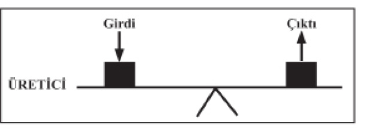
Öte yandan bir yönetici, bir saatlik çabayla ve etkili bir yetkilendirme yoluyla on, elli ya da yüz birimlik bir sonuç elde eder.
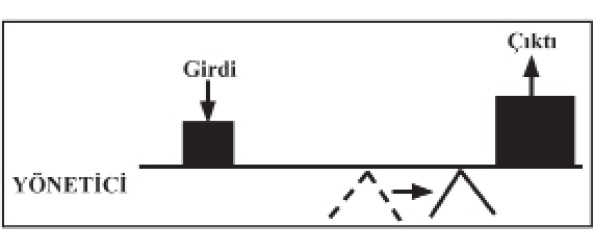
Yöneticilik, esas olarak manivelanın dayanak noktasını ileri kaydırmaktır, etkili bir yönetimin anahtarı ise başkalarına yetki vermektir.
EMİRERİ YETKİSİ VERMEK
Temelde iki tür yetkilendirme vardır: “Emireri yetkisi vermek” ve “kaptanlık yetkisi vermek.” Emireri yetkisi vermek, “Şuraya git, buraya git, şunu yap, bunu yap, iş bitince de bana haber ver!” anlamına gelir. Üretici olan insanların çoğu emireri yetkisi verme paradigmasına sahiptir. Ormanda baltayla yol açan adamları hatırlıyorsunuz değil mi? Onlar üreticidir. Kollarını sıvayıp işe girişirler.
Kendilerine bir denetim ya da yönetim görevi verilse bile, yine bir üretici gibi düşünürler. Başka birini de yükümlülük altına sokacak şekilde, tam anlamıyla yetkilendirmeyi bilmezler. Odak noktaları yöntemler olduğu için, sonuçlardan sorumlu olurlar.
Bir zamanlar ailece su kayağı yapmaya gittiğimizde, bir emireri yetkisi vermeye kalkışmıştım. Çok usta bir kayakçı olan oğlum sudaydı.
Ben motoru kullanıyor ve onu çekiyordum. Fotoğraf makinesini
Sandra’ya vererek birkaç resim çekmesini istedim.
Önce, elimizde fazla film kalmadığı için çekeceği fotoğrafları dikkatle seçmesini söyledim. Sonra eşimin fotoğraf makinesine aşina olmadığını hatırlayarak, biraz daha ayrıntılı talimat vermeye başladım.
Güneş tekneyi arkasına alana kadar beklemesini söyledim.
Oğlumuzu dalganın üzerinden atlarken ya da bir dönüş sırasında dirseğini suya değdirirken yakalamasını istedim.
Ancak, filmin yetersizliğini ve eşimin kamera konusundaki deneyimsizliğini düşündükçe, endişem de arttı. Sonunda, “Dinle,
Sandra,” dedim. “Sana söylediğim zaman sadece düğmeye bas. Tamam mı?” Ondan sonraki birkaç dakikayı, “Şimdi çek! Şimdi çek!
Çekme! Çekme!” diye bağırarak geçirdim. Hareketlerini saniyesi saniyesine kontrol etmezsem resimleri doğru dürüst çekemeyeceğinden korkuyordum.
Bu, tam bir emireri yetkisiydi. Yöntemlerin teker teker denetlenmesiydi.
Pek çok insan sürekli olarak bu şekilde yetki verir. Ama bu ne kadar işe yarar? Yaptıkları her harekete müdahale ederek kaç kişiyi denetleyebilir ya da yönetebilirsiniz ki?
Başkalarına yetki vermenin çok daha iyi, daha etkili bir yolu vardır.
Bu, başkalarının özgür iradesini, vicdanını, hayal gücünü ve özbilincini takdir etme paradigmasına dayanır.
KAPTANLIK YETKİSİ VERMEK
Kaptanlık yetkisi vermenin odak noktası yöntemler değil, sonuçlardır.
İnsanlara yöntemi seçme hakkını tanır ve onları sonuçlardan sorumlu tutar. Başlangıçta daha fazla zaman alır, ama harcanacak zaman iyi bir yatırımdır. Kaptanlık yetkisi vererek manivelanın dayanak noktasını kaydırıp, kaldırma gücünü artırabilirsiniz.
Kaptanlık yetkisi vermek, beş alandaki beklentiler bakımından peşinen karşılıklı anlayış ve bağlılık gerektirir.
İSTENİLEN SONUÇLAR. Başarılması gereken şey konusunda açık bir karşılıklı anlayış yaratın. Odak noktanız nasıl değil, ne; yöntemler değil, sonuçlar olsun. Zaman harcayın. Sabırlı olun. İstenilen sonucu gözünüzün önünde canlandırın. Karşınızdaki kişinin onu görmesini, tanımlamasını, sonuçların nasıl olacağı ve ne zaman elde edileceği konusunda kaliteli bir bildirge oluşturmasını sağlayın.
KURALLAR. Söz konusu bireyin hangi parametreler içinde çalışacağını belirleyin. Yöntemlerin devredilmesinden kaçınabilmek için bunlar mümkün olduğu kadar az sayıda olmalı, ancak önemli kısıtlamaları da içermelidir. Kaptanlık yetkisi verdiğiniz kişinin, sonuçlara ulaşması koşuluyla istediğini yapabileceğini düşünmesini ve bu arada süregelen bir geleneksel uygulamayı ya da değeri çiğnemesini istemezsiniz. Bu, inisiyatifi öldürür ve emireri yöntemine dönmeye neden olur: “Ne yapmamı istediğini söyle ki, yapayım.”
Verilen işin başarısızlığa uğrayabilecek yanlarını biliyorsanız, onları açıklayın. Dürüst ve açıksözlü olun. Karşınızdaki kişiye bataklığın yerini ve vahşi hayvanların nerede bulunduğunu söyleyin.
Tekerleği her gün yeniden icat etmek istemezsiniz sanırım. İzin verin de, insanlar sizin ya da başkalarının hatalarından ders alsınlar.
Başarısızlığa gidebilecek yolları, yapılmaması gereken şeyi işaret edin, ama ne yapmaları gerektiğini söylemeyin. Onları sonuçlardan
–kurallar dahilinde yapılması gereken şeylerden– sorumlu tutun.
KAYNAKLAR. Söz konusu kişinin, istenilen sonuçları elde etmesi için yararlanabileceği insani, maddi, teknik ve kurumsal kaynakları tanımlayın.
HESAP VERME SORUMLULUĞU. Sonuçların değerlendirilmesinde kullanılacak performans standartlarını oluşturun. Sonuçların rapor edileceği ve değerlendirmenin yapılacağı belirli zamanları da açıklayın.
NETİCELER. Değerlendirmenin sonucunda ortaya çıkacak hem iyi hem de kötü şeyleri belirleyin. Bunların arasında maddi ve manevi ödüller, başka göreve atanma ve bir kuruluşun genel misyonuna bağlı doğal sonuçlar yer alabilir.
Birkaç yıl önce yetkilendirme konusunda oğullarımdan biriyle ilginç bir deneyim yaşadım. Bir aile toplantısı yapıyorduk. Planlarımızın değerlerimizle uyumlu olmalarını sağlamak için, misyon bildirgemiz yine duvarda asılıydı. Herkes oradaydı.
Büyük bir kara tahtayı duvara dayayarak hedeflerimizi, yapmak istediğimiz önemli şeyleri ve bu hedeflerin gerektirdiği işleri yazdık.
Sonra da bu işleri yapacak gönüllülere gerek olduğunu söyledim.
“İpotek taksitlerini ödemeyi kim istiyor?” diye sordum. Bir de baktım ki, benden başka el kaldıran yok.
“Sigortayı ödemeyi kim istiyor? Yiyecek parasını? Araba masraflarını?”
Sanki tüm fırsatları tekelime almıştım.
“Bebeğin mamasını vermeyi kim istiyor?” Buna gösterilen ilgi daha fazlaydı, ama o işi yapabilecek nitelikteki tek kişi eşimdi.
Listedeki işleri teker teker sayarken çok geçmeden Anne’yle Baba’nın haftada altmış saatten fazla çalışmaları gerektiği ortaya çıktı.
Bu paradigmayı göz önüne aldığımız zaman, diğer işlerden bazılarına daha doğru bir açıyla bakmaya başladık.
Yedi yaşındaki oğlum Stephen, bahçenin bakımını üzerine aldı.
Ona bu işi tam anlamıyla vermeden önce kapsamlı bir eğitim sürecini başlattım. Bakımlı bir bahçenin nasıl bir şey olduğunu iyice anlamasını istiyordum. Bu nedenle onu yandaki komşumuzun bahçesine götürdüm.
“Bak oğlum,” dedim. “Görüyor musun, komşumuzun bahçesi ne kadar yeşil ve temiz? Biz de bunu istiyoruz; yeşil ve temiz. Şimdi gel de bizim bahçeye bir bak. Şu karmakarışık renkleri görüyor musun? Hiç de aynı değil. Yeşil değil. Bizim istediğimiz “yeşil ve temiz” olması. Şimdi, yeşil olmasını nasıl sağlayacağın sana kalmış bir şey. Bunu, bahçeyi boyamak dışında, istediğin gibi yapmakta serbestsin. Ama iş bana verilmiş olsaydı bunu nasıl yapardım, sana açıklayabilirim.”
“Nasıl yapardın, baba?”
“Bahçenin sulama fıskiyelerini açardım. Ama sen kova ya da hortum kullanmak isteyebilirsin. Benim için fark etmez. Bizi ilgilendiren tek şey, rengin yeşil olması. Tamam mı?”
“Tamam!”
“Şimdi de “temiz”den söz edelim, oğlum. Temiz, etrafta çöp
–yani kâğıtlar, sicimler, kemikler, sopalar ya da ortalığı kirleten herhangi bir şey– bulunmaması demektir. Şimdi sana ne yapacağımızı söyleyeceğim. Bahçenin yarısını hemen temizleyelim, sonra da aradaki farka bakalım.”
İki büyük kesekâğıdı aldık ve bahçenin bir yanını temizledik.
“Şimdi bu tarafa bak. Sonra da şu tarafa. Aradaki farkı görüyor musun?
İşte buna temiz denir.”
Oğlum, “Dur!” diye seslendi. “Şu çalılığın arkasında kâğıtlar var.”
“Ah, çok iyi! Ben oradaki gazeteyi fark etmemiştim. Gözlerin çok keskin, oğlum. Şimdi, bu işi kabul edip etmeyeceğine karar vermeden önce sana birkaç şey daha söylememe izin ver. Çünkü bu işi sen üstlenir üstlenmez, ben elimi çekeceğim. Bu, senin işin olacak.
Buna kaptanlık denir. Yani, “güvene dayanan” bir iş. Senin bu işi yapacağına, tamamlayacağına güveniyorum. Şimdi patronun kim olacak?”
“Sen mi olacaksın baba?”
“Hayır, ben değil. Patron sensin. Kendi kendine patronluk edeceksin.
Annenle babanın durmadan dırdır etmesi hoşuna gidiyor mu?”
“Hiç gitmiyor.”
“Bizim de hoşumuza gitmiyor. Bazen kötü duygulara yol açıyor, değil mi? Onun için kendi kendine patronluk edeceksin. Şimdi, yardımcın kim olacak bil bakalım.”
“Kim?”
“Ben,” dedim. “Sen patronum olacaksın.”
“Öyle mi?”
“Öyle. Ancak benim yardım konusunda zamanım kısıtlı. Bazen burada olmuyorum. Ama buradayken sana nasıl yardım edebileceğimi söyleyeceksin. İstediğin her şeyi yapacağım.”
“Tamam!”
“Şimdi bil bakalım senin hakkında kim karar verecek?”
“Kim?”
“Kendin karar vereceksin.”
“Öyle mi?”
“Öyle. Haftada iki defa seninle bahçede dolaşacağız. O zaman bana işin ne durumda olduğunu gösterirsin. Neye göre karar vereceksin?”
“Yeşil ve temiz!”
“Doğru!”
İşe hazır olduğunu hissedene kadar, on beş gün boyunca onu bu iki sözcükle eğittim. Sonunda, o önemli gün gelip çattı.
“Anlaştık mı oğlum?”
“Anlaştık.”
“İş nedir?”
“Yeşil ve temiz.”
“Yeşil nedir?”
Oğlum biraz düzelmeye başlamış olan bahçemize baktı. Sonra da komşuyu işaret etti. “Onun bahçesinin rengi.”
“Temiz nedir?”
“Pislik olmaması.”
“Patron kim?”
“Benim.”
“Yardımcın kim?”
“Sensin! Zamanın olduğunda.”
“Kim karar verecek?”
“Ben! Seninle haftada iki defa bahçede dolaşacağız. Sana işlerin ne durumda olduğunu göstereceğim.”
“Aradığımız şey ne olacak?”
“Yeşil ve temiz.”
O sırada bir cep harçlığından söz etmedim. Ama bu tür bir kaptanlığın karşılığını vermekte hiç tereddüt etmeyecektim.
İki hafta ve iki sözcük. Oğlumun hazır olduğunu sanıyordum.
Günlerden cumartesiydi. Oğlum hiçbir şey yapmadı. Pazar... hiçbir şey. Pazartesi... hiçbir şey. Salı günü işe gitmek için arabayla bahçeden çıkarken karmakarışık, sapsarı bahçeye ve ufuktan yükselen sıcak temmuz güneşine baktım. “Herhalde bugün yapacak,” diye düşündüm. Cumartesi için özür bulabilirdim, çünkü anlaşmayı daha o gün yapmıştık. Pazar gününe de mantıklı bir açıklama getirebilirdim; o gün başka şeyler içindi. Ancak pazartesi için bir bahane bulamıyordum.
Şimdi ise günlerden salıydı. Evet, kesinlikle işi bugün yapacaktı. Yaz mevsimindeydik. Yapacak başka ne işi vardı ki?
Bütün gün eve dönüp neler olduğunu görmek için sabırsızlandım.
Köşeyi dönerken, aynen sabahki görüntüyle karşılaştım. Oğlum ise yolun karşısındaki parkta oynuyordu.
Bu, kabul edilebilir bir şey değildi. İki haftalık eğitim ve bütün o sözlerden sonra oğlumun bu davranışı beni düş kırıklığına uğratmış ve sarsmıştı. Bahçeye bir hayli çaba, gurur ve para yatırımı yapmıştık ve bütün bunların boşa gideceğini görüyordum. Ayrıca komşumun bahçesi çok bakımlı ve güzeldi. Durum bizi utandırmaya başlıyordu.
“Emireri” yöntemine dönmeye hazırdım. Oğlum, hemen buraya gel ve şu çöpleri derhal topla! Yoksa karışmam! Altın yumurtayı bu yoldan elde edebileceğimi biliyordum. Ama ya kaz? Onun içten içe verdiği söz ne olacaktı?
Bu nedenle yapay bir gülümsemeyle yolun karşı tarafına seslendim.
“Merhaba, oğlum! Nasıl gidiyor?”
“İyi,” diye cevap verdi.
“Bahçe ne alemde?” Bunu sorar sormaz anlaşmamızı çiğnediğimi de anladım. Hesaplaşma böyle yapılmayacaktı. Anlaşmamız bu değildi.
Oğlum da bu nedenle anlaşmaya aykırı davranma hakkını kendisinde buldu. “İyi, baba!”
Dilimi ısırdım ve akşam yemeği sona erinceye kadar bekledim.
Sonra, “Seninle anlaştığımız gibi yapalım, oğlum,” dedim. “Bahçeyi birlikte dolaşalım. Senin kaptanlığında işlerin nasıl gittiğini göster bana.”
Kapıdan çıkarken oğlumun dudakları titremeye başladı. Gözleri doldu. Bahçenin ortasına geldiğimiz sırada sızlanıyordu.
“Bu iş çok zor, baba.” diye düşündüm. Tek bir şey yapmamışsın! Ama neyin çok zor olduğunu biliyordum: özyönetim, özdenetimdi. Bu nedenle, “Yardımcı olmak için yapabileceğim bir şey var mı?” dedim.
“Gerçekten yardım eder misin?” diye burnunu çekti.
“Anlaşmamız nasıldı?”
“Zamanın olduğunda yardım edeceğini söylemiştin.”
“Zamanım var.”
Oğlum koşarak eve girdi. Geri döndüğü zaman elinde iki çuval vardı. Onlardan birini bana verdi. “Şu çöpleri toplar mısın?” Cumartesi gecesi mangalda pişirip yediklerimizin artıklarını işaret ediyordu.
“Midemi bulandırıyor!”
Bunu yaptım. Onun istediklerini tamı tamına yerine getirdim.
İşte o an, oğlum anlaşmaya yürekten imzasını attı. Bahçe onundu artık, kaptan da kendisiydi.
Bütün yaz boyunca benden yalnızca iki-üç kez yardım istedi.
Bahçeyle o ilgilendi. Benim kaptanlığımda hiç olmadığı kadar yeşil ve temiz tuttu. Hatta, ablaları ve ağabeyleri, çimlerin üstünde bir çiklet kâğıdı bile bıraksalar onları azarlıyordu.
Güven, insan motivasyonunun en yüksek şeklidir. İnsanların en iyi yanlarını ortaya çıkarır. Ama zaman ve sabır ister. Yeteneklerinin o güven düzeyine çıkabilmesi için insanların eğitilip geliştirilmesi gereğini de ortadan kaldırmaz.
Kaptanlık yetkisi uygun biçimde verilirse, iki tarafın da kazançlı çıkacağı ve sonunda daha az zamanda daha çok işin tamamlanacağı kanısındayım. Zamanını bire-bir temelinde etkili biçimde yetki vererek kullanan iyi örgütlenmiş bir ailenin, herkesin her şeyi günde yaklaşık bir saat içerisinde yapabileceği şekilde işleri düzene sokabileceğine inanıyorum. Ama bunun için sadece üretim değil, insanın yönetime gönülden talip olabilmesi gereklidir. Odak noktası etkililiktir, verimlilik değil.
Şu odayı bir çocuktan kesinlikle daha iyi derleyip toplayabilirsiniz kuşkusuz, ama önemli olan, çocuğa bu işi yapma gücünü vermek istemenizdir. Bu da zaman alır. Eğitim ve gelişimle ilgilenmeniz gerekir.
Evet, zaman alır, ama akıp giden bu zaman ne kadar da değerlidir!
Uzun vadede size çok şey kazandırır.
Bu yaklaşım, yepyeni bir yetki paradigmasını devreye sokar. Aslında, ilişkinin doğasını değiştirir: Kaptan, kendi kendisinin patronu haline gelir ve üzerinde anlaşmaya varılmış istenen sonuçlara bağlılığı gerektiren vicdanı tarafından yönetilir.
Kaptanlık yetkisiyle ilgili ilkeler doğrudur ve her türlü duruma ya da insana uygulanabilir. Olgunlaşmamış insanlar söz konusu olduğunda istenen sonuçların sayısını azaltır ve daha fazla kural koyarsınız.
Daha fazla kaynak gösterir, daha sık hesap ister ve daha çabuk değerlendirmeler yaparsınız. Daha olgun kişilerden istenen sonuçlar daha zor, kurallar daha azdır. Daha az aralıklarla hesap istersiniz.
Kıstaslarınız daha az ölçülebilir ama daha belirgindir.
Etkili yetkilendirme, belki de etkili yöneticiliğin en iyi göstergesidir; çünkü hem kişisel hem de kurumsal gelişimin temelini oluşturur.
II. KARE PARADİGMASI
İnsanın kendisini ya da yetkilendirme yoluyla başkalarını etkili bir biçimde yönetmesinin sırrı bir teknik, araç ya da bir dış etkende saklı değildir. İçseldir; size acillik yerine önem merceğinden bakma gücünü veren II. Kare paradigmasının bir parçasıdır.
Ekte göreceğiniz “Büroda bir II. Kare Günü” başlıklı alıştırma, bu paradigmanın bir iş ortamında etkililiğinizi ne denli güçlendirdiğini görmenizi sağlayacaktır.*
Bir II. Kare paradigması geliştirmeye çalışırken, yaşamınızın her haftasını en derin önceliklerinizin etrafında, sözünüzün eri olacak şekilde düzenleme ve uygulama yeteneğinizi artıracaksınız. Yaşamınızı etkili bir biçimde yönetmek için başka kişilere ya da şeylere bağımlı olmayacaksınız.
İşin ilginç yanı, Yedi Alışkanlığın her biri II. Kare’dedir. Hepsi de, düzenli bir biçimde yapıldığı takdirde yaşantımızda çok olumlu bir fark yaratacak olan, temelde önemli şeylerle ilgilidir.
UYGULAMA ÖNERİLERİ
1. İhmal edildiğini bildiğiniz, ama doğru yapıldığı takdirde özel ya da iş hayatınızda önemli bir etkisi olacak bir II. Kare etkinliği saptayın. Bunu yazın ve uygulayacağınıza söz verin.
2. Bir zaman yönetimi matrisi çizin ve her karede zamanınızın yüzde kaçını geçirdiğinizi hesap etmeye çalışın. Sonra üç günlük bir sürede on beşer dakikalık aralıklarla not alın. Hesabınız ne kadar doğru çıktı? Zamanınızı harcama tarzınızdan hoşnut musunuz? Neleri değiştirmeniz gerekiyor?
3. Devredebileceğiniz sorumlulukların ve yetki verebileceğiniz ya da bu alanlarda sorumlu olmaları için eğitebileceğiniz kişilerin bir listesini hazırlayın. Yetkilendirme ya da eğitme sürecini başlatmak için gereken şeyleri belirleyin.
4. Önünüzdeki haftayı düzenleyin. İşe o haftadaki hedeflerinizi ve rollerinizi yazarak başlayın. Sonra bu hedefleri belirli bir etkinlik planına aktarın. Haftanın sonunda, planınızın köklü değerlerinizi ve amaçlarınızı günlük yaşamınıza ne kadar iyi aktarabildiğini, bu değerler ve amaçlar konusunda kişisel bütünlüğünüzü ne derece koruyabildiğinizi değerlendirin.
(*) Lütfen B ekine bakınız.
5. Haftalık bir düzenleme yapmaya kendi kendinize söz verin ve bunu yapmak için düzenli bir zaman belirleyin.
6. Ya şimdiki planlama gerecinizi bir dördüncü kuşak gerecine dönüştürün, ya da öyle bir gereç edinin.
7. II. Kare paradigmasının etkisini daha derinlemesine anlayabilmek için “Büroda bir II. Kare Günü”nü (B Eki) inceleyin.
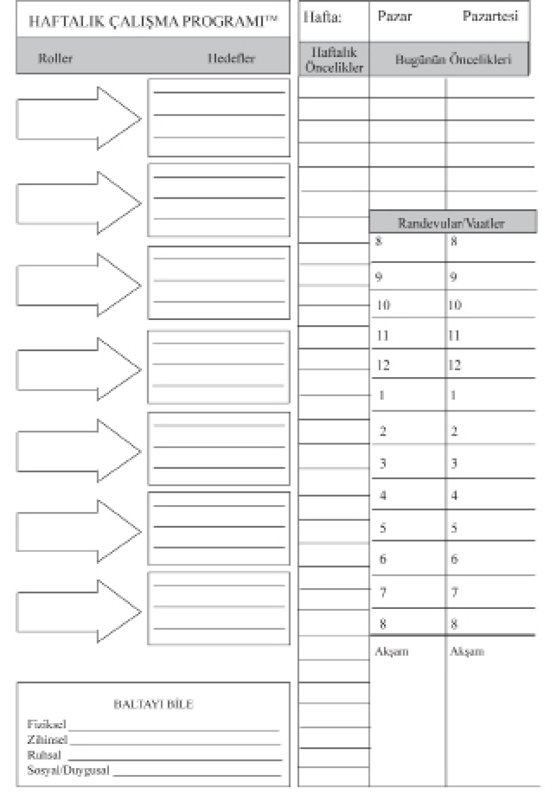
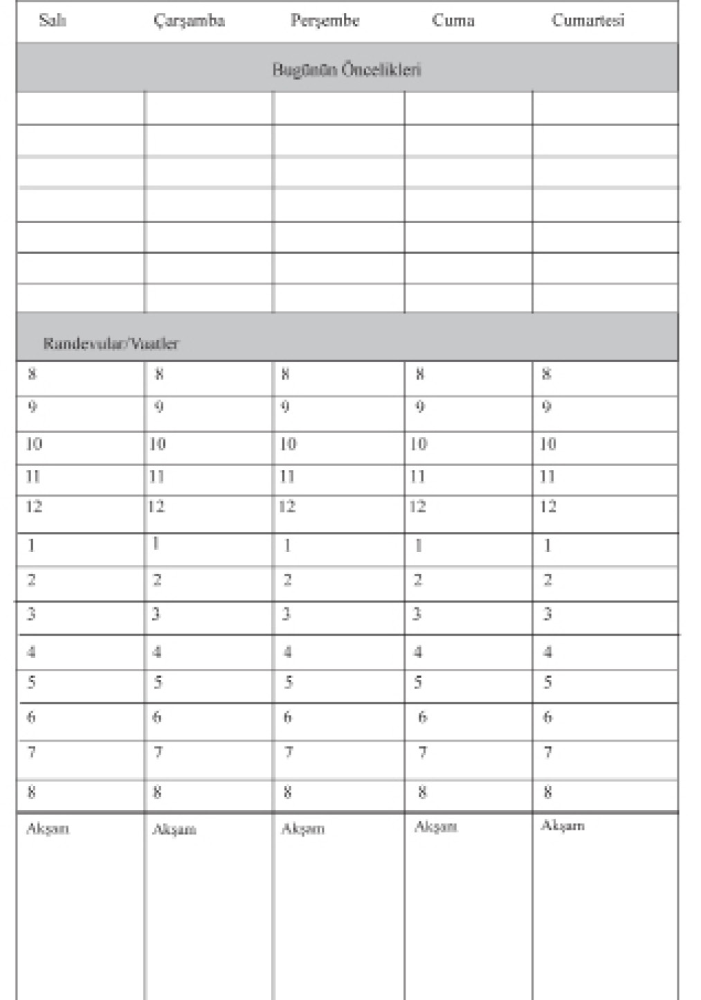